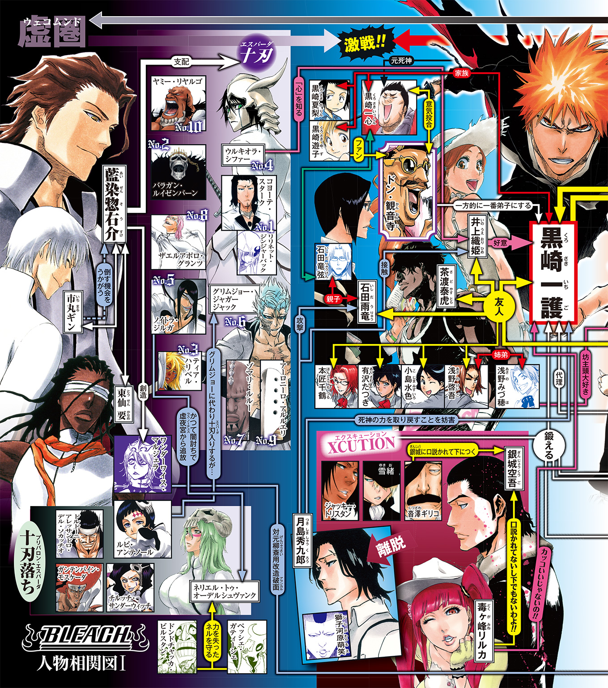

| BLEACH Spirits Are Forever With You I | |
| 久保帯人 & 成田良悟 | |
この本は縦書きでレイアウトされています。
また、ご覧になる機種により、表示の差が認められることがあります。

この作品はフィクションです。実在の人物・団体・事件などにはいっさい関係ありません。
【瀞霊廷通信、記事原稿の『燃え残り』より一部抜粋】
ドン・観音寺とは何者なのか？
そうした質問が、当雑誌の人気コーナー、『教えて！ 修兵先生!!』の下に数多く寄せられている。
問いへの答えとして、我々編集部一同は、一つの特集記事を掲載する事にした。我らが編集長代理である檜佐木修兵の独断に任せるには、あまりに荷が重いと判断したからだ。
瀞霊廷通信の読者諸兄ならば、死神代行である黒崎一護氏のことは御存知だろう。
藍染惣右介封印後に、黒崎氏が『力』を失った事も、かつて当誌で報じた通りだ。
そしてつい先日、彼がその『力』を取り戻したのも記憶に新しい事かと思う。
この記事に示すのは、狭間の物語だ。
黒崎一護氏が死神としての力を失い、『再起動』するまでの十七か月。
具体的には、その期間の終盤に起こった『例の事件』についての集録である。
瀞霊廷に住まう読者諸兄には、なんの事件か説明するまでもないだろう。
だが、君達は、『例の事件』に関して、現世と虚圏――そして、断界で起こった事については把握できていない筈だ。
我々は、あらゆる手を使って調べ上げた『例の事件』の顚末をここに記す。
ドン・観音寺とは何者なのか？
その答えは出ていない。我々もまた、明確な答えを持たない。
当誌の記事を読む事で、読者諸兄が個々の答えを有してくれれば幸いだ。
だが、先に記者としての私見を述べさせて貰えるならば、彼は恐らく――（以下、焼失）
【※中央四十六室の検閲により記事は差し替えられ、原稿は全て廃棄済みとなっている】
現代 東京都 空座町
「なあ、今の俺、輝いてるよな？」
つるりと剃り上げられた耳周りをさすりながら、少年は夜空を見上げて呟いた。
仲間同士で開かれたクリスマスパーティーの帰り道。
宴の最中に行われたゲームの敗者となり、モヒカン刈りにされた高校生、浅野啓吾。
彼は目に涙を溜めつつも、隣に立つ同級生――小島水色に精一杯の笑顔を向けた。
「そう、モヒカンってのは男を上げる髪型なんだよ！ 誰もが知る名作中の名作、『タクシードライバー』の時のロバート・デ・ニーロみたいによ！ いや、俺は観た事ないんだけどさ？ だってデ・ニーロだぜデ・ニーロ！ そりゃかっこいいだろ！」
悲しみを誤魔化すかのようなハイテンションで語る啓吾に対し、隣を歩く少年は、彼の頭髪にチラリとも目をくれぬまま呟いた。
「人を嘲笑するっていうのは......結構体力使うから、なるべくやりたくないんだけど」
「無表情のまま、よくもそこまで人を嘲笑えるもんだなオイ!?」
「ああ、一応言っておくけど、嘲笑う対象はデ・ニーロじゃなくて君だけだから。そりゃデ・ニーロやベッカムならモヒカンでもソフトモヒカンでもカッコイイけどさ。啓吾はもっと、自分が浅野啓吾に過ぎないって事実と向き合った方がいいと思う。ついでに言うなら、啓吾が『嘲笑』って単語を知ってた事にもビックリした」
「まさかの追い打ち!?」
ショックを受ける啓吾に対し、水色は淡々と言葉を紡ぎ続ける。
「そもそもさ、その『タクシードライバー』の知識もロバート・デ・ニーロの名前も、さっき啓吾を慰めてた井上さんの受け売りだよね？ 井上さんは時々変な事に詳しいから違和感ないけど、啓吾が映画のタイトルとか役者をすぐに引き合いに出せるとは......」
あまりにも冷たい親友の言葉に、啓吾は水色の肩を摑んで激しく揺らす。
「細かい事は忘れて、誰に責任があるのかそろそろ思い出そうぜ!? そもそも罰ゲームのクジにモヒカンとか入れたのお前だよな水色!?」
「やめて下さいよ。別に無理にやらなくてもいいって言ったのに、『思い切りの良い男に女は惚れる！』って叫びながらバリカン動かしたのは浅野さんじゃないですか」
「ちょ、待て！ この状態で敬語にならないでくださいますかね水色さん!? 距離感を感じる以前に、こんな所を警官とかに見られたら、確実に俺がモヒカンの強盗......」
髪の毛のなくなった側頭部に冷や汗を垂らしつつ、慌てて周りを見る啓吾。
そんな彼の目に、横目でこちらを見ている若い女性の姿が映った。
「ああっ！ 違っ、違うんですお姉さん！ こう見えても俺、デ・ニーロなんです！」
混乱して妙な事を呟きながら笑う啓吾だったが――
次の瞬間、その笑顔が固まった。
改めて見た女性の外見に、自分のモヒカンよりも特異な点があったからだ。
肩に掛かるか掛からないかといった長さの黒髪を靡かせ、整った顔立ちに物憂げな表情を浮かべる若い女性。
そんな彼女の顔の右半分を、純白の髑髏面が覆い隠していたのである。
「えっ」
啓吾は、背筋に僅かに冷たい汗が湧き出るのを感じた。
彼女が顔面につけている仮面。その質感に見覚えがあったからだ。
――あれって、アフさんが普段追っかけてる怪獣と似た感じだよな？
彼の友人であるチャドや井上の話によると、それは霊の一種で、早い話が悪霊のようなもの（正式名称も聞いたのだが、既に忘れていた）らしい。いつの間にか霊感が身についていた啓吾は、何度かそうした悪霊絡みのトラブルに巻きこまれていたのだが、その悪霊達に近い雰囲気をその女性から感じ取ったのだ。
「啓吾、あの人......」
水色の言葉に、啓吾は我に返りながら頷いた。
「ああ、解ってる」
「綺麗な女の人だけど、不用意に駆け寄らない方がいいと思うよ？」
「お前は俺をなんだと思ってるんだ？ 大丈夫、俺は冷静さが売りのクールメンだぜ？」
――バストサイズがもう一回り上だったら、全ての疑問を無視して駆け出してたけどな。
心中ではそう思っていたものの、流石に口には出さず、改めて女性の方に目を向ける。
だが――次の瞬間、女性はどこか困ったような表情を見せ、そのまま空気の中に溶けこむように二人の前から消え去ってしまった。
「うおおお、消えたーっ!? おい見たかおいおいおい！ 今、消えたよな、おい!?」
「やっぱり、人間じゃなかったみたいだね」
全く表情を変えずに呟く水色に、目を見開きながら喚きだす啓吾。
「だね、って、冷静すぎじゃね!? 何？ おかしいのは俺？ 俺の方!? ちょっと呪われるかもしれないとか思いつつ、あのお姉さんが夜中に俺の部屋に来てくれんなら呪われて悔い無しってな感じで悶えかけてる俺がおかしいの!?」
「落ち着きなよクールメン。啓吾がおかしいのはいつもの事じゃん」
目の前で超常現象が起きたにもかかわらず、基本的にはいつも通りの調子で会話を続ける二人。だが、彼らの身に降りかかった異常は、いつもとは僅かに違う色を見せ始める。
「おい、見たかよ今の!? 消えたよな!?」
「見た見た！ 超ヤバイ感じ！」
騒がしい声に啓吾達が振り返ると、大学生ぐらいの男女が目を白黒させていた。
どうやら、今しがたの女性消失シーンを目撃していたようだ。
「.........？」
啓吾は、その光景に違和感を覚える。
認めたくはないが、自分には最近、霊感というものが身についてきたらしい。
だが、あの通りすがりの男女にも、自分と同じような霊感があったのだろうか？
そう思って周囲を見回し、啓吾は更に深い違和感に囚われる。
空座町から鳴木市に向かう途中にある繁華街。夜とはいえ、人通りは決して少なくない。残業帰りのサラリーマンやカラオケに向かう途中の大学生など、全く繫がりのない別々の集団が――女性の消えた場所を指さしたり、携帯のカメラを向けたりして周囲の仲間達と騒ぎ合っているではないか。
何かがおかしい。
膨れあがる違和感の正体は、その直後の光景で判明する事となった。
黒い装束を着たアフロヘアの男が、皆が指さす空間に駆けこみ、周囲をキョロキョロと見回しながら大声をあげる。
「ぬうう！ 怪しい霊圧の残滓はあれど姿は見えず！ これはもしや、この車谷善之助の霊圧に怖れをなしたか!?」
「あ、アフさんだ」
「げえ！ 貴様はいつぞやの刀泥棒！ なんだその髪型は!? というか、今、私が渾身の力をこめて名乗ったばかりなのにアフさん呼ばわりとは酷くないか!? もはや名を覚える気は毛頭無いという事か!?」
彼の名は（友人の一護曰く）イモ山。通称アフさん。本名は別にあるそうなのだが、実際のところ、啓吾は名前を覚えるつもりは無いので気にしない事にした。
啓吾が怪獣と認識していた悪霊達と戦う存在で、『死神』と呼ばれる者達の一人だ。
しかし、周囲の人々は見るからに怪しい男が現れたにもかかわらず、相変わらず一人の女性が消えた事に対してざわめき続けている。
アフロな死神の仰々しい叫び声も全く耳に入っていないようで、そもそも、周囲の人々は彼の姿すら認識できていないようだ。
そして、啓吾は確信する。
今しがたの女性は、確かに人間ではなさそうだ。
だが、死神を見る事ができない――所謂『霊感のない人間』にも見えたというのは、一体どういう事なのだろうか？
啓吾は水色と顔を見合わせたが、それ以上その場で何も起こる気配はなく――彼らは妙な違和感を抱えつつも、日常の中に心を戻す。
実際、その謎の女性を目撃した事で、彼らの身に特別な事件が起こる事はなかった。
しかし、彼らを取り巻く『街』という環境においては、それは始まりに過ぎなかった。
その後も空座町や鳴木市をはじめとして、近隣の町で次々と『顔の半分が髑髏に覆われた女』の目撃談が続いたのである。
数日、数週間という短い単位ではなく――一年以上にわたる長い期間でだ。
何の脈絡もなく街中に現れては、寂しげな顔をして消えていく謎の女性。
車谷に限らず、周辺の街を担当している死神や、あるいは滅却師である石田がその気配を感じ取る事はあった。だが、彼らが現場に辿り着いた時には既に女性の姿は消えていて、目撃者達がざわめいているのを目にするだけだった。
霊感がない者にも見えるというその女性は、それまで霊の存在を信じていなかった者達にも衝撃を与え、一帯の街を起点として少しずつ彼女の噂は広まり始めた。
ついには誰かがカメラに消失の瞬間を映す事にも成功し、ネットを通して全国的にその噂が知れ渡る結果となる。
トリック映像だ、本当の霊だ、異次元からの侵略者だなどと、様々な噂がネット上を飛び交い、議論は全国に広がり続けた。そして、最初の目撃例から一年以上が過ぎ去った頃――ついにその噂が、ある心霊番組プロデューサーの目に留まる事となった。
プロデューサーは、深夜枠とゴールデン枠の間を行ったり来たりという状態になっていた自分の番組の今後について悩んでいた所だったのだが――謎の女性が消える瞬間の映像を見て、起死回生の案を思いつく。
次にプロデューサーは、自分以上にその番組を愛し、番組そのものであると言っても良いメインパーソナリティに対し、一つの企画を提案した。
企画書のタイトルにはメインパーソナリティの名が堂々と刻まれており、その番組が彼と一心同体である事を殊更に強く象徴している。
『ドン・観音寺のぶらり霊場 突撃の旅 ～闇に現れ闇に消える髑髏面の女を追え！ 番組最高の視聴率を記録した空座町スペシャル、再び！』
そして、『彼』は再びやって来る。
稀代のカリスマ霊媒師、ドン・観音寺。
特徴的な笑いとポーズを引っ下げ、第二の故郷と呼ぶに相応しい街――空座町へと。
二五〇年前 尸魂界 流魂街某所
音。
湿った血風が吹き荒ぶ戦場に、乾いた金属音が鳴り踊る。
本来、そこは戦場でもなんでもない、単なる平原に過ぎなかった。
現世での命を終えた魂の行きつく先、流魂街の外れ。
一度『死』を味わった住民達ですら近づこうとしない、草が僅かに生えるだけの土地。
しかし、そこに存在する者達は、鉄錆の匂いを振りまきながら乾いた土を踏みならす。
現世と尸魂界を行き来する魂の護り手。それは黒装束の執行者――『死神』。
彼らが手にするのは、使い手によって千差万別の形を見せる斬魄刀。
死神達は護り手であると同時に、虚と化した霊を斬魄刀の刃で清める狩人でもある。
狩人達が狙うのは、流魂街の外れに現れた獲物。数十体に及ぶ虚の群。
死神達の数倍の巨軀を持つ虚達を前に、彼らは一歩も怯む事なく――
笑みすら浮かべながら、己の身を戦場へと躍らせる。
彼らは死神。
彼らは武人。
彼らは刃。
彼らは力。
鋸草の隊章を身につけた、泣く子も黙る『十一番隊』。
十三に分かれた死神達の実働隊の中で、最も『戦』に特化した部隊である。
並の死神なら数人がかりでも危険と思われる虚を前に、彼らは愉しげな表情を崩さない。
戦いの最中に浮かべる笑みには、二つの理由が存在した。
一つは、十一番隊に集まる者達が、自らの命を賭した戦そのものを楽しむ気質を持っているという事。
もう一つは――彼らの中心にいる男に対する、絶対的な信頼だった。
十一番隊の荒くれ者達の中で、一際目立つ白羽織の男が一人。
周囲の死神達と比べて、頭一つほど高い背丈。
獣のように鋭い目つきと、一見粗野に見えるざんばら髪が特徴的な男だ。
彼の白羽織の背を飾るは、刃の交錯を思わせる『十一』の漢数字。
だが、外見的な特徴よりも――男が纏う霊圧の高さが、虚達の仮面を震わせる。
まるで、『この男は危険だ』と警鐘を鳴らすかのように。
それとは逆に、十一番隊の隊員達にとって、その男は、ただそこに居るだけで士気の高まる存在だった。彼に全てを頼るという意味ではなく、ただ、彼と同じ戦場で命を賭けて戦えるという歓びに、死神達は己の心を躍らせる。
護廷十三隊、十一番隊隊長――刳屋敷剣八。
最強と言われる死神の名を受け継いだ、七代目の『剣八』。
先代の剣八を一騎討ちにて屠り去り、数百年の間『剣八』の名を護り続ける男である。
戦に特化した部隊を率いながら人づきあいも良く、隊の内外問わず人望のある死神だ。
ただし、彼が最も人を惹きつけたのは――
弱者の嫉妬や妬みすらねじ伏せる、その圧倒的な『力』だった。
「大虚だぁ！ 大虚がいるぞ！」
死神の一人の叫び声が響き、十一番隊の間に緊張が走る。
見上げると、いつの間にか戦場の空に巨大な亀裂が走り、空間を裂きながら夜の闇を思わせる巨影が舞い降りようとしていた。
数万体の虚が喰らい合い、融合した存在である大虚。
小さな山ほどもあるその巨軀と比べると、死神達の姿は人から見た子鼠も同然だ。
あまりに危険な存在であるその虚は、真央霊術院では『王属特務の管轄』、あるいは『隊長格が数人がかりで抑えこむもの』と教えられている。
だが、そんな絶望が空から顔を出したというのに、死神達は、尚も笑っていた。
そして、一番嬉しそうな笑みを浮かべたのは、他でもない刳屋敷剣八だった。
「ああ......こいつぁ、愉しく戦れそうだ」
刳屋敷はなんの迷いもなく地を蹴り、その大虚の巨大な仮面の前まで跳び上がる。
「よう、踊ろうぜ、大虚」
「............」
瞬時に己の目線まで跳び上がった『小さな獲物』を前に、大虚は反射的に仮面の口を開き、虚閃で迎え撃たんと霊圧を凝縮させていく。
だが――
「最下大虚じゃねえよ」
彼は始解すらしていない素の斬魄刀で、その最下大虚の仮面を虚閃ごと切り裂き、叫び声をあげるヒマすら与えず消滅させた。
一撃。
並の隊長格が数人がかりで倒すのが常道と言われる大虚を、ただ一刀の下に屠り去る様を見て、虚達は怯え、死神達は歓声と共に己の気を高ぶらせる。
斬魄刀によって浄化されて、尸魂界の空気へと溶けこんでいく黒い残滓を浴びながら、刳屋敷は尚も空に開き続ける『亀裂』に向かって呼びかけた。
「奥にいる奴、出てこいよ」
すると、次の瞬間、亀裂の奥から無数の白い糸が飛び出した。
細い糸は空中で瞬時に絡まり合い、綱のように太くなって巨大な網を編み上げる。
網は刳屋敷を捕らえようと迫るが、彼は敢えてそれを迎え撃ち、己の身体を捻りながら斬魄刀でその白い網を絡め取った。
次の瞬間、獲物を捕らえたと判断したのか、斬魄刀を亀裂に引きずりこもうと強い力がかけられる。
だが、刳屋敷は空気中に霊子の塊を生み出し、それを亀裂に向かって蹴り出す形で、無理矢理その力に反抗した。
綱引きは僅か数秒で終わり、亀裂の中から、一体の小柄な虚が引きずり出される。
それは、純白の蜘蛛を思わせる、人間の姿とはかけ離れた虚だった。
大きさ自体は下で死神達と戦っている虚より小さいぐらいだが、その身体から放たれる霊圧は、先刻の大虚よりも強く、重い。
蜘蛛型の虚は何も言わず、一瞬にして亀裂と大地の間に糸を張り、空中に静止する形で刳屋敷と相対する。
「......中級大虚でもねえよ」
残念そうに溜息を吐き、斬魄刀の峰で自らの肩をトントンと叩きつつ、蜘蛛型虚に向かって問いかけた。
「あんたの後ろに、もう一人いるだろ。多分、最上大虚級がよ」
だが、白蜘蛛は問いに答えず、身体の数箇所にある穴から再び糸を吐き出してくる。
刳屋敷は通常の死神なら避けきれぬであろう速度の『糸の風』を潜り抜け、数秒後には、蜘蛛型虚の仮面に斬魄刀を突きつけていた。
虚にとっては絶体絶命の状況だが、蜘蛛型虚は何の反応も示さず、ただ動きを止めるだけだった。まるで、悲鳴や命乞いを含め、自分が次にすべき行動が何も解っていないとでもいうように。
「お前、なんにも中身がねえな」
一体その蜘蛛型中級大虚から何を感じ取ったのか、刳屋敷は哀れみのこもった声を吐きかけた。
「さっきの最下大虚の方が、敵意がある分だけ楽に斬れたのによ......」
刳屋敷は刀を仮面から引き、代わりに、蜘蛛の足を摑み上げる。
「俺は、人形を斬る程ヒマじゃねえんだ、出直してこい」
そのまま、刳屋敷は蜘蛛型虚を片手で振り回し、空の亀裂の中へと投げこんだ。
彼は首をコキリと鳴らすと、空の亀裂の奥の『誰か』に向かって問いかける。
「そこにいるんだろ。眩しいとこが嫌いなら、こっちから乗りこんでやろうか？」
相手の答えを待たず、空中に更なる霊子の塊を生み出し、亀裂に向かって跳躍した。
亀裂の奥にいる、最下大虚でも中級大虚でもない『誰か』に刃を突き立てる為に。
しかし、彼の望みは叶わない。
空の亀裂は彼の目の前でその口を閉じ、あっという間に塞がってしまったからだ。
死神達が次元の行き来に使う穿界門と違い、虚達が次元を移動する仕組みは、この時点では解明されていなかった。その為、無理矢理その亀裂をこじ開けるという真似もできず、刳屋敷剣八は一人空中に取り残される。
「あぁ......？ なんだよ、冷やかしかよ......」
再び大きな溜息を吐き出し、彼は眼下の戦場に目を向けた。
そこにはまだ数十体の虚が残っており、十一番隊の隊員達が戦闘を続けている。
彼はその光景を見てニイ、と笑い、嬉しそうにその戦場へと降下していった。
「しょうがねえ、たまにゃ、隊長らしく現場の指揮でもするか」
数刻後
つい先刻までは戦場であった場所。
地面と空気に染みこんだ血の臭いを酒で洗い流すかのように、現在は十一番隊総出となって酒盛りが行われている。
援護の為に遅れてやってきた四番隊や八番隊の面々は、既に虚の撃退が終了しているという事態を目にして帰ろうとしたのだが、『お前らも付き合え』と半ば無理矢理誘われる形で、その飲み会に参加する結果となった。
「ったく、刳屋敷隊長は酷い人だよ！ たまに号令かけて隊陣組ませたと思ったら、一人で美味しい所を持ってっちまった！」
「悪ぃ悪ぃ。俺もお前らの斬り合いの邪魔する気なんざなかったんだが、虚の奴らが一斉に俺に向かってくるもんだからよ」
「それにしちゃ、随分と嬉しそうに刀振ってたじゃねえっすか！」
あの後、結局残った虚を殆ど一人で片づけてしまった刳屋敷に、隊員達が口々に文句を言う。だが、文句をつけつつもその顔はどれも嬉しそうで、隊長の純粋な強さを誇りに思っている様子だった。
「しっかし、やっぱり刳屋敷隊長はすげえっすよ！ 最下大虚を一発でぶった斬って、その後に出てきた中級大虚も子供扱いだったんすから！」
「本当ですよ！ 大虚の連中を相手どれるのなんて、刳屋敷隊長ぐらいじゃないですか？」
口々に言う部下達に、呆れながら首を振る刳屋敷。
「山本総隊長を忘れんなよお前ら......」
数多の虚が縒り合わさった存在である大虚。その中でも特に最上大虚級と呼ばれる人型の虚は、隊長格の力を超える。
それが死神達の間での通説であり、死神を養成する『真央霊術院』での教本にもしっかりとそう書かれている。
だが、隊長格にも差はある。
卍解も必ず戦闘向きであるとは限らず、そうした者達は隊長といえど大虚に遅れをとる可能性もある。その為、真央霊術院では警戒の意味もこめて『大虚は最重要警戒対象であり、本来は王属特務【零番隊】が対処すべき事案である』と教えていた。
しかし、隊長達の中には山本総隊長や刳屋敷のように、一騎当千とでも言うべき力を持つ者達がおり、彼らは数少ない『例外』として尊敬や畏怖の対象となっていた。
そうした例外の一人である刳屋敷は、自分が特別だとは言わずに、他の『例外』を言葉に連ね始める。
「十二番隊の曳舟だって、大虚なんざ雑魚扱いだしな。朽木や四楓院家の連中だっているし、最下大虚や中級大虚程度斬れる奴ぁゴロゴロいるさ」
「でも、過去に最上大虚を斬ったってのは、刳屋敷隊長以外にはそうそう聞きませんよ」
「まあ、今回の奴は逃がしちまったけどな」
そして、自分の後方で女性達に囲まれている、華やかな羽織を纏った男に声をかけた。
「京楽なんかはどうよ。相手できそうか？ 最上大虚とかよ」
唐突に話を振られ、十一番隊の数少ない女性陣に声をかけていた男――八番隊隊長、京楽春水は肩を竦めて振り返る。
「やれやれ。気楽に言ってくれるねぇ、キミは。まあ、僕らは言うほど最上大虚の事を識ってるわけじゃないしねえ。相性によっちゃ、最上大虚に勝てるかもしれないし、最下大虚に負けるかもしれないじゃない。虚との闘いってのはそういうもんでしょ」
「......確かにそうだな。馬鹿な事を聞いちまった」
「そういう事。そもそも、君が斬った最上大虚も、最上大虚全体の中でどのぐらい強いのか解らないわけだしねぇ」
京楽は刳屋敷の問いを適当に受け流し、逆に自分の方から問いかけた。
「ていうか、本当にこんな所で酒盛りしてていいのかい？ 先に報告とかしとかないと、また山爺にどやされるよ？ それに、四番隊の子達を酔い潰れさせたりしたら、卯ノ花隊長がなんて言うか」
「ハハっ、確かに、烈姐さんが怒ったら大虚より怖ぇからな。......てか、その酒盛りで、人の隊の女を口説いてる奴が何言ってやがる」
「援護に来たらもう全部終わってたんだ。戦いに疲れた可愛い女の子達を癒すのが僕の役目......って事にしてくれないかい？」
「相変わらずだな。少しは浮竹の真面目さを見習えよ」
呆れる刳屋敷に対して、京楽は僅かに表情を引き締めつつ口を開く。
「でも、今回みたいに大量の虚が一気に攻めてきたのは珍しいねえ。聞いた話じゃ、中級大虚が出てきた上に最上大虚の気配もあったそうじゃない。こりゃ、いよいよ虚にも新しい動きが出てきたって事かね」
「いや、完全に統率が取れてる感じじゃなかったな。虚が陣形だのなんだの使ってくるのはまだ先だろ。最上大虚に忠誠を誓ってるっつーより、獣が鞭打たれながら言われた事に従ってる感じだったぜ」
そう答えた後、刳屋敷はふと昔の事を思い出しながら呟いた。
「ただ、俺が前に斬った最上大虚は、浄化される前に『バラガン様』だかなんだか叫んでやがったからな......。そのバラガンとかいう奴が向こうの世界の大将なのかもしれねえ」
杯を呷りつつ、ニヤリと笑う刳屋敷。
「虚の大将か。いつか、乗りこんでって果たし合いてえもんだ。もしかしたら、アシドの野郎が先にぶった斬ってるかもしれねえけどな」
アシドというのは、狩能雅忘人という死神の通称であり、数年前に虚を追って、部下達と共に虚圏へと姿を消した男である。未だ戻らぬ昔馴染みが生きていると確信する刳屋敷に、京楽も彼が死んだという可能性を微塵も感じさせぬ調子で言葉を返した。
「だとしたら、狩能君達が戻ってきた時は御祝いするようだねぇ。護廷十三隊の女の子達を全員集めて酒盛りといこうじゃないのさ」
「そりゃ、京楽が女と飲みてぇだけだろ？」
刳屋敷の言葉に、周りの隊士達がゲラゲラと笑いだす。
和やかな空気を纏う酒の席で、刳屋敷は上機嫌に語り続けた。
「ま、虚どもが進化しようが、護廷十三隊も足踏みしてるわけじゃねえんだ。あと二百年か三百年もすりゃ、隊長格や副隊長でも全員最上大虚とやり合えるようになってるさ」
「そうなったら、僕やキミは平隊士落ちか、除隊勧告を受けて引退かい？」
京楽の皮肉に、刳屋敷は愉しげに笑い、答える。
「俺はその前にのたれ死にかもしれねえけどよ、『剣八』がいりゃ問題ねえさ。俺がいなくなっても、十一番隊の隊長はずっと『剣八』だからな」
何か含みのある呟きに、周りの隊士達が顔を見合わせ、そのうち一人が恐る恐る刳屋敷に問いかけた。
「あの、隊長......噂で聞いたんですが、刳屋敷隊長に、零番隊から声がかかってるっていうのは本当ですか？」
噓だと否定してほしいというような表情の隊士に、隊長は答える。
「ああ、話だけなら来たぜ」
「！」
「断ったけどな」
「!?」
あまりにもあっさりとした答えに周囲の隊士達がざわめく中、刳屋敷は酒を飲みながら淡々と語る。
「まあ、四十六室を通した正式な命令でもなかったしな。早いうちに断った方がいいだろそんなもん。考えてもみろよ。俺に王様の護衛なんてもんがつとまると思うか？ 敵が来るまで、どっか別次元にある王宮に引きこもるなんてマネ、俺にゃ我慢できねえ」
刳屋敷はそこで一旦目を伏せ――
「それに、『剣八』の名前を受け継いだ以上、俺はここで待ってなきゃいけないのさ」
杯に映る自らの顔と向き合いつつ、愉しそうに愉しそうに口元を歪ませた。
「俺を超える死神が現れるのをよ」
「隊長......」
最後の言葉の意図の受け取り方はそれぞれだったが、十一番隊の隊士達は皆、刳屋敷が自分達の隊長で在り続けるという事に安堵し、それを誇りにも思っていた。
まさに彼こそが『最強の死神』の称号である『剣八』の名に相応しい。
そんな事を思いつつ、彼らは静かに杯の酒を飲み干し、最高の気分で饗宴を進めようとしたのだが――
「失礼。少しいいかな」
それは、不思議な声だった。
決して大声というわけではなく、寧ろ物静かな印象の声だったが、彼の言葉は、その場で騒いでいた死神達の耳に、驚くほど綺麗に響き渡った。
声がしたと思しき方向に目を向け――見慣れぬ者の影を確認する。
奇妙な出で立ちをした、まだ若い男だった。
男を見た死神達は、即座に彼が尸魂界の中心部――『瀞霊廷』の貴族であると理解した。
だが――それだけだ。
流魂街の住民とも死神とも違う、ひと目で『貴族』と認識できる外観なのだが、その他の情報は何一つ解らない。自分が貴族であるという立ち位置だけを理解させる最低限の格好であり、貴族にありがちな華美な装飾品の類は全く身につけていなかった。
上級貴族の次男坊である京楽ですら、その姿を見て首を傾げている。
妙な男の登場に、酒盛りの場はざわめいたが、そのざわめきの合間を縫って、刳屋敷が男に声をかけた。
「おやおや、貴族の坊主が、こんな所になんの用だ？ 酒が飲みたいなら分けてやるぜ」
そんな刳屋敷の声を受けた直後、貴族風の男は、自分の背中から無駄に高揚した女の声が響くのを感じ取った。
「あいつだよ。あいつ！ 今声をかけてきた奴！ あの背の高い強そうな奴が刳屋敷剣八だよ！ 七代目の剣八だよ！ 凄く強い奴だよ！ 前に最上大虚を斬った奴だ！ 今日も中級大虚を簡単にあしらってた、凄く凄く強い男！ カッコイイね！ 面白いね！ 面白いと思うよね？ キハハハハ！」
ちらりと顔を後ろに向けると、男の目に、キヒキヒと笑う女の姿が映る。
ゴテゴテと無駄な飾りをあしらった純白の着物から、必要以上に肌を露出している女。
彼女は両目を隠す形で幅の広い革紐を二本巻きつけており、丁寧に結われた黒髪には過剰な飾りのついた簪を挿していた。大きく開いた胸元からは豊満な胸の谷間が露わになっており、その上にあるたおやかな首筋には、やはり派手な首飾りが掛けられていた。
扇情的な女の格好に眉一つ動かさず、男はほんの僅かな苛立ちをこめて吐き捨てる。
「既に解り切っている事をいちいち喚くな。お前はどこかに下がっていろ」
「ちぇッ、冷たい奴だよね！ 負けちゃえばいいのに」
そんな捨て台詞と共に女が自分から離れるのを確認すると、男はすぐに表情を戻し、自分に声をかけてきた隊長羽織の男に顔を向けた。
「刳屋敷剣八。君を......弐百名を超す隊士の前で斃せば、『剣八』の称号と共に隊長の位が手に入ると聞いた」
名乗りすらせず、淡々と語りかけてくる男。
十一番隊士達は顔を見合わせ、相手の意図を摑みかねていたのだが――
刳屋敷は、飲み干した杯を地に置き、ゆらりと立ち上がりながら答えた。
「そいつは、間違いじゃねえな」
すると、その貴族風の男は、顔色一つ変えぬまま、やはり淡々と口を開く。
「ならば、二度手間にならぬよう、できれば今――」
「この場で、殺し合いに応じてもらいたいのだが」
沈黙が、酒宴の場を支配する。
だが、一瞬後にはその沈黙は死神達のざわめきや嘲笑によって覆された。
死神達は、頭のおかしな男が来た、いやいや自殺志願者に違いない、貴族同士の賭け事か何かではないかと語り合う。
だが、笑っていない者もいる。殺し合いという言葉に緊張した四番隊の面々や、八番隊隊長の京楽、そして、当の貴族風の男だ。
刳屋敷剣八はというと、嘲笑ではない、いつも通りの薄い笑みを浮かべている。
そんな刳屋敷に、貴族風の男は更に告げる。
「酒が入っている事が不安なら、酔いが醒めるまで待っても構わない」
「いや、いいぜ、寧ろ、血が巡ってやりやすいぐらいだ」
隊長の言葉に、隊員達が全員笑いを消した。
彼が、唐突に現れた男との殺し合いを受けるつもりだと気がついたからだ。
「た、隊長！ 本気ですか！」
部下達の止める声に、刳屋敷は無言で手を翳し、指を動かす。
――場を開けろ。
無言の指示に対し、隊員達は酒を持ってその場を離れ、心中で貴族風の男に憐れみの目を向けた。隊長は果たし合いで手加減をする人間ではないし、貴族相手だからと躊躇う人間でもない。手加減したとしても、あのヒョロリとした男が生き残れるとは思えない。
そもそも、あの貴族は斬魄刀すら持っていないではないか。
一体どうやって刳屋敷隊長の相手をするつもりなのだ？
部下達が緊迫して円状の人垣を作る中、刳屋敷は八番隊の前に立つ京楽に声をかけた。
「京楽、悪いな、お前にまで立会人になってもらっちまってよ」
すると、京楽は刳屋敷には答えず、少し離れた場所に立つ貴族風の男に問いかける。
「本当にやるのかい？ キミがどこの何者かは知らないけど、隊長になる方法ってのは他にもあるんだよ？」
「貴方と無駄話をするつもりはない。京楽春水隊長」
京楽の忠告に対し、あっさりと言い放つ貴族の若者。
――こっちの名前程度は知ってるってわけか。
だが、京楽が不気味に感じたのは、そのことではない。
言葉面だけを見ればこちらを見下しているように思えるが、今の貴族の声には、なんの蔑みも嘲りも感じられず、そもそも感情自体がないように思えたからだ。
妙な違和感を覚え、京楽は刳屋敷に向き直る。
「キミも気をつけなよ。彼、自殺志願者や自惚れ屋には見えない」
斬魄刀を持っていない事など、侮る理由にはならない事を京楽は知っている。
鬼道衆の総帥である握菱鉄裁などは、鬼道の力だけで卍解した隊長と渡り合えると言われており、この挑戦者も同等の力を持っているという可能性は否定できない。
そういう意味で忠告したつもりだが、刳屋敷も相手の違和感には気づいている様だった。
「ああ、愉しくなりそうだ」
ニヤリと笑う刳屋敷を見て、これ以上二人を止める事は無意味と判断し、京楽は何も言わずに人垣の一部となった。
これが初めての事態なら、京楽や周囲の隊士達も今より強く止めていたかもしれない。
だが、実際のところ、刳屋敷の果たし合いはこれが初めてというわけではなかった。
刳屋敷はこれまでも同じように何度も果たし合いを受けて立ち――その全てに勝利してきたのだから。
二百人を超える隊士達の嘲笑や憐れみの目に囲まれつつ、貴族風の男は静かに問う。
「もう、殺し合いの条件は成立しているのか？」
「果たし合いって言いな」
刀の峰で己の肩をトン、と叩きながら、刳屋敷は無手のまま佇む男に語りかけた。
「お前がどんな奴かも知らねえし、強いのか弱いのかも解らねえが、命のやり取りをするからにゃ、お互いの『果て』を存分にさらけ出そうじゃねえか」
「無駄話は嫌いなんだが......訂正しよう。果たし合いの準備は成立しているのか？」
「とっくに始まってる、って言ってもいいぐらいだぜ？」
七代目剣八が答えた次の瞬間――男は笑いもせず、感情の無い声で呟く。
「それは良かった」
「ああ？」
「これで、君の命は無駄にならない」
刹那――
刳屋敷剣八の身体は切り刻まれ、その全身から激しい血飛沫を迸らせた。
まるで、身体の内側から刃の竜巻が巻き起こったかのように。
立会人である二百人の中で、誰一人として『男』の斬魄刀を目にした者はいなかった。
鬼道が発動した様子もない上に、貴族風の男はその場から一歩も動かない。
透明な斬魄刀でもあるというのだろうか？
だが、そもそも男は構えすら見せていないし、見えない刃が遠隔操作されているようにも思えなかった。
一体どうやって、一歩も動かぬまま七代目剣八の身体を切り裂いたのか。
そもそも、この男は何者なのか？
どうして、突然『剣八』の名を欲したのか？
何もかもが解らない中で、隊員達が理解できたのは、一つだけだった。
七代目の『剣八』は敗れ――
この瞬間から、『男』は八代目『剣八』の座を手に入れたのだと。
死神も、虚と同じように強くなり続ける。
先刻の刳屋敷の言葉は、今ここに証明された。
この日――七代目剣八が絶命した事を四十六室が確認した瞬間を境に、『剣八』の名は、より強き死神へと受け継がれる。
刳屋敷剣八の望み通り――より強き者が、彼の前に現れた。
この日、虚との戦闘後に流魂街の荒野で起きたのは、ただ、それだけの事だった。
虚圏 某所
七代目剣八が斃される瞬間を見ていたのは、死神達だけではなかった。
当時の現世ではまだ概念すらなかった『監視カメラ』のような機能を持つ蟲型虚。自らの支配下にあるその極小虚を使い、刳屋敷達の決闘を虚圏から観察していた者が存在したのである。
虚でありながら、ほぼ完全な人型をしているその虚は、俗に最上大虚と呼ばれる存在であり、先刻の尸魂界襲撃の背後にいた人物でもあった。
「ヤミーの口癖ではないが、幸運とはまさにこの事だな。できる事なら直接この目で見たかったが、それはまたの機会を待つとしよう」
最後まで刳屋敷の前に現れる事のなかったその最上大虚は、仮面の奥でクツクツと笑いながら呟いた。
「あの刳屋敷という死神を分析する予定だったが、まさかこんな展開になるとはね。録霊蟲の記録を洗い直せば、今の戦闘で何が起こったのかは解析できるだろう」
嬉しそうに楽しそうに、仮面の奥で狂的な笑みを浮かべる。
そして、傍らにいる中級大虚――先刻刳屋敷と戦った、白い蜘蛛型の虚に視線を向けた。
「役立たずの君は一度潰して霊子を再構成する予定だったけれど、今のを見て、新しい実験の目処がたったよ。僕でなければ実行は不可能だろうけどね」
「......はい」
「光栄に思うといい。君はまだ、僕のモルモットで在り続けられるんだ」
傲慢極まりない最上大虚の言葉に、蜘蛛型の虚は静かに身を低くし――
薄い感情ではあるが、ほんの少しだけ、嬉しそうに頭を垂れた。
後に藍染惣右介の手によって破面となり、十刃の一人となる最上大虚の名を呼びながら。
「ありがとうございます......。ザエルアポロ様」
そして時は流れ――現代。
剣八の名は十代目の鬼巌城剣八を経て、十一代目の更木剣八へと受け継がれている。
だが、八代目が誰かに敗れた、という記録は無い。
勝敗だけではない。八代目剣八に関する記録は、四十六室の指示によって全て抹消され、尸魂界の何処にも存在していないのだ。
だが、彼の存在自体は、多くの死神達の心に深く刻みこまれていた。
尸魂界の存在そのものを危機に晒した、稀代の大罪人として。
現在 虚圏
無限に続くかと思える白砂の海。
暗闇の中に広がる、広大にして空虚な世界。
それが虚達の辿り着く先であり故郷ともいえる世界、虚圏だ。
だが、砂や石英の木以外、何も存在しないというわけではない。現世では考えられない程の巨大な建造物が、砂漠と調和して一つの風景を造り出している。
白い砂漠の中に立つ純白の宮殿、虚夜宮。
所々が破壊されたその広大な建造物を背景に、白い砂漠が静かにその身を横たえている。
と、その静寂は、砂漠の彼方より現れた少女の悲鳴によって打ち破られた。
「やぁあわわわわわわわぁぁああ――――ッ！ た、助けてけろ――――ッ！」
砂飛沫を上げながら虚圏を駆けるのは、帽子のように髑髏を被る、幼い姿の破面だった。
緑色の髪を砂まみれにしながら、獅子に追われる兎のように、走る、走る、ただ走る。
彼女の名はネル・トゥ。
虚圏に住む破面の一人であり、虚夜宮周囲の砂漠を住処としている少女だ。
そのすぐ後ろには、奇声をあげながら走る二体の虚と、大蛇と蚯蚓を合わせたような巨大な異形の姿があった。
「シュシュシュシュシュッ！」
「ばほはははははははははっ！」
クワガタ虫を思わせる仮面を被ったスマートな虚――ペッシェ・ガティーシェ。
体の半分以上もある仮面を身につけた奇妙な虚――ドンドチャッカ・ビルスタン。
そして、長大な体を砂の海にくねらせる巨獣――バワバワ。
ネルを含めたこの三人＆一匹は、共に砂漠に暮らす家族のような関係だった。
彼らは『グレート・デザート・ブラザーズ＋１』。
様々に名乗りながら、砂漠を彷徨う虚の一団だ。
基本的に娯楽が無い虚圏の砂漠の中で、彼らは毎日のように『無限追跡ごっこ』に興じている。ドＭのネルを半泣きになるまでひたすら追い回すという、虚圏の中でも彼らだけが嗜む特殊な遊びだったのだが――
今日は、些か様子が違っていた。
「シュシュシュシュシュシュっ！ ま、まずいぞ！ これは非常にまずい！」
「ばほははははははははっ！ ぼはっ......ばはっ......も、もう限界でヤンス～！」
ネルだけではなく、ペッシェとドンドチャッカも半泣きとなっており、バワバワまでもが悲鳴に近い鳴き声をあげている。
普段はネルが逃走者役となる無限追跡ごっこだが、この日は――三人＋一匹が全員逃走者となっていた。
彼らを追うのは、小さな影。
「遊んでよ、ネル！」
砂漠を猛スピードで飛び跳ねる影は、逃げ惑うネル達にそんな事を叫ぶ。
見た目だけを見るなら、ネルよりも少し年上といった雰囲気の少年だ。
完全な人型をしており、ヘッドホンのように変形した仮面を頭につけている破面の子供。
その隣を並走する、お下げ髪の――やはり破面の少女が続いて叫ぶ。
「ねえねえ、遊びましょうよ！」
彼女の後ろを跳ねる、最下大虚のような姿をした――しかし、大きさは子犬ほどしかない虚が、ギチギチと仮面を震わせた。
「アそ ン で 俺 と」
他にも、様々な姿をした『小さな影』が、口々に何かを呟きながら、砂漠の中でネル達を追い続ける。
彼らの数は――軽く百体を超えていた。
「遊ぼう」 「遊びましょう？」 「遊んでよ」
「遊ぼう」 「なんで逃げるの？」 「鬼ごっこだね！」
「たのしそう！」 「面白そう！」 「混ぜて！」 「私達もいれて！」
「僕たちが鬼だよ！」 「Ａｇｗｏｏｏｏｏ」 「遊んで......ほしい、かも......」
「遊ぼうよ！」 「貴方達が贄ね！」 「オイシソウ」
「捕まえたら針千本のませるね！」 「にガ さ ナい」
「Ｑｒｒｒｒｒｒｒｒｒ」 「指も切らなきゃね！」
「一万回殴ってもいいんだよね！」 「タベテモイイ？」
と、ケラケラ笑いながらネル達を追う、様々な『子供』の姿をした『破面』達。
まるでトビウオのように砂の海を飛び回る集団は、ネル達にとっては鮫の群のように思えた。何しろ、彼らは遊ぼう遊ぼうと言いつつ、時折虚閃などを撃ち出してこちらの足を止めようとしてくるのだ。
彼らの多くは十歳前後の少年少女の姿をしていたが、中には人の姿をしていない者も含まれている。
ネル達は知らない事だが、第９十刃のアーロニーロの頭部のような姿をした者すら存在しており、そもそも会話が成立しなさそうな動物型の虚も見受けられた。
だが、彼らには『子供である』という他に、一つの共通点が。
全員の体の一部に、それぞれ『１０２』という黒い数字が刻みこまれていたのである。
「な、な、なんという不運！ ま、まさっ、まさか、ピカロに見つかってしまうとは！」
半泣きで走りながら、ペッシェが叫ぶ。
それを受けて、ドンドチャッカも涙を流しながら口を開いた。
「ルヌガンガがいなくなったから、あいつら虚夜宮から出てきて好き放題でヤンス～！」
『悪戯小僧』
それが、子供型虚の集団を表す名前だった。
個別の名前を持たず、一纏めで『ピカロ』とだけ呼ばれる、奇妙な集団。
彼らは常に共に行動し、軍隊蟻やイナゴの群のように、集団そのもので一つの『個』として虚圏の住人達に認識されていた。
『彼』であり『彼女』でもあるその集団は、百人以上の子供達から構成されている。
その群は『みんな』であると同時に『一つの個』でもあると見なされ――彼らは全員が一纏めで『１０２』という『十刃落ち』の番号を持っているのだ。
頭の中身は子供と変わらないのだが、その分だけ、虚の根源の一つでもある『欲望への忠実さ』を抑える理性が足りていない。
子供らしい欲望を携え、彼らは誰よりも無邪気に、誰よりも自由に虚圏を飛び回る。
元はバラガンという『王』が退屈しのぎに自身の配下の一翼として放置していた集団で、藍染という新しい『王』がやってきた後、一時的に十刃に加えられたのだが――組織の一員として機能しないと判断され、彼らは十刃落ちとして『３ケタの巣』に送られた。
虚夜宮から抜け出し、現世等で好き勝手な事をしないよう、基本的に水以外には無敵という特性を持つルヌガンガという虚が、絶え間ない砂嵐で彼らを虚夜宮の一部に閉じこめていたのである。
だが、藍染が虚圏を去り、ルヌガンガも朽木ルキアの手によって倒された現在、彼らはこうして自由に砂漠を飛び回っているのだ。
時折『遊び相手』を見つけては、壊れて動かなくなるまで遊び倒す。
それが彼らにとっての日常であり――
目をつけられた力の無い者達にとって、彼らは日常の終わりを告げる悪夢の集団となる。
今回日常の終わりを告げられたネル達は、必死に走りながらその運命に抗っていた。
「い、一護ー！ 助けて一護ー！」
数時間に及ぶ逃走を経て、頭がフラフラとなったネルは、既に虚圏から去った死神の名前を呼んだ。
今から一年半程前、彼女達はこの砂漠で、黒崎一護という死神と出会った。
仲間を救いに来たという一団と共に行動する間、ネルもまた、何度も一護に助けられる。
そして、ネル達は更なる危機に晒されたのだが――彼女の記憶は、そこで途切れていた。
十刃の一人、ノイトラによって一護がピンチに陥った事までは覚えているのだが、その先の記憶が断絶している。
意識を取り戻したネルの目の前にいたのは、鬼神のような顔をした恐ろしい死神で、ネルはその後の騒ぎを命からがら切り抜けた。
直後、最初に一護と共にいた滅却師や人間達と再会したネル。
彼らから『一護は先に現世へと帰ってしまった』と聞き、ネルは恩人の無事を喜ぶと同時に、別れの挨拶すらできなかった事を悲しんだ。
「そ、そっだら、ネルも現世さ行ぐっス！ 一護にお礼さ言わねばなんねっス！」
空座町の場所を知らぬネルは、無理を言って滅却師達について行こうとしたのだが――
「おや、生きたサンプルがまだ残っているじゃあないかネ！」
と、先刻の鬼のような死神とは別の、顔に毒々しい装飾を施した死神が現れ、実験体として連れ去られそうになったネル達は再び逃走する事となる。
滅却師達がその不気味な死神を足止めしてくれたおかげで、ネル達は無事に逃げ切る事ができたものの――再び同じ場所に戻って来た時は、既に死神達も滅却師達も帰ってしまった後だった。
その時から抱え続ける寂しさを紛らわせる為、一護の名前はなるべく出さぬようにしていたのだが、危機的状況に、思わずその名を叫んでしまうネル。
ペッシェとドンドチャッカはその名前に反応し、互いに顔を見合わせた。現在は、いくら名前を叫ぼうとも、既に虚圏を去った一護は現れないのだ。
ならば、大事な妹である『守るべき者』をこれ以上不安にさせてはならぬ、悲しい思いをさせてはならぬと、決意をこめてその場に立ち止まる。
「このままでは埒が明かん！ 行くぞ兄者！ プランＢだ！」
「了解でヤンス！」
珍しく息ピッタリで声をかけ合ったかと思うと――
ドンドチャッカはその場で高く跳び上がり、砂漠に思い切りボディプレスを叩きこんだ。
爆発でも起こったかのように、砂塵が天高く舞い上がる。
同時に跳び上がっていたペッシェがドンドチャッカの背に着地し、口から『無限の滑走』と自称する粘液を吐き出した。実際は有限ではあるものの、ちょっとした池や沼を軽く超える量の粘液を放出し、ドンドチャッカの巻き起こした砂柱に絡ませたのだ。
粘液と砂が混じり合い、粘菌のようになった砂柱が、ペッシェ達の周囲に降り注ぎ――ピカロ達を巻きこみながら砂の大地に広がった。
「わあ！」「なにこれ！」「面白い！」
無邪気に騒ぎながら、砂粘液に搦め捕られていくピカロ達。
「よし！ これで時間稼ぎができた！ 今のうちに逃げるぞ兄者！」
「了解でヤンス！ 急ぐでヤンスよ、ネル！」
そして、二人は前に向き直り――
彼らを中心として放射状に広がった砂粘液に搦め捕られ、窒息しそうになっているネルの姿を発見した。
「ネ、ネル――――っ!?」
「計算外でヤンス～ッ！」
白い面を更に蒼白に塗り替え、ネルに駆け寄る兄二人。
溺れかけたネルは、窒息こそしなかったものの、目を回して意識を失っている。
とりあえずは生きているという事実に、二人がホッとしたのも束の間――
「面白かった！」「ねえ、もう一回やってもう一回！」「まル カ じリ」「Ｇｒｒｒｒ」
と、粘液を振り払った破面の子供達が砂の中から次々と姿を現し、一斉にペッシェ達に笑顔を向けた。
その光景に戦慄しかけたペッシェだったが、ネルの意識が失われているのを確認し、数秒迷った後にドンドチャッカに顔を向けた。
「むう......これは使いたくなかったが......やるぞ、ドンドチャッカ！」
普段ネルには見せない真剣な表情で、二人の虚が頷き合う。
「いつでもＯＫでヤンス！」
次の瞬間、ペッシェがドンドチャッカの肩へと飛び乗り――二人はそれぞれの前面に収束させた霊力を共鳴させ、周囲の霊子を取りこみながら数倍にまで増幅させる。
「「融合虚閃！」」
二人が同時に叫んだ瞬間、圧縮された霊力が一気に放出され、通常とは比べものにならない威力の虚閃が放出される。
反応するヒマもないまま、閃光に巻きこまれて吹き飛んでいくピカロ達。
「やったか!?」
以前この技を使用した時は、十刃を倒すには到らなかった。
しかし、ピカロ達は十刃落ちであり、個々の力はそう強くない。
消滅はさせられないまでも、戦闘不能状態に追いこむ事はできるだろうと踏んだのだ。
実際、半分ほどのピカロ達が、砂の上にひっくり返って倒れこんでいるのを確認する。
だが――それは同時に、もう半分のピカロ達が、まだ立っているという事を示していた。
「くっ......こいつら、昔より強くなっていないか!?」
「た、多分、藍染様やバラガン様達がいなくなった後に、虚夜宮の周りに集まってきた中級大虚とかを喰いまくったんじゃ......」
緊迫した表情のペッシェ達とは対照的に、ピカロ達は笑いながら口を開く。
「なに今の！ 凄い！」「かっこいい！」「ねえねえ、どうやるの？」「どうやったの!?」
「こう？」「こうかな？」「イた カっ た」「僕もやる！」「私もやる！」「オレモ！」
ピカロ達は、倒れている仲間達は疎か、自分達の傷にすら目もくれず、瞳を輝かせながら右腕や口、額など、それぞれの体の一部をペッシェ達に向けた。
「虚閃」 「虚閃」 「虚閃」 「虚閃？」 「虚閃」 「せろ」 「虚閃」 「虚閃」
「セろ」 「虚閃！」 「虚閃」 「虚閃」 「虚閃」 「虚......閃......」
「虚閃」 「虚閃」 「虚閃！」 「虚閃」 「虚閃」 「虚閃」 「虚閃！」 「せろ」
「虚閃！」 「虚閃」 「虚閃」 「虚閃」 「虚閃」 「セロ！」 「虚閃」
「虚閃」 「虚閃」 「虚閃」 「虚閃」 「虚閃」 「虚閃」 「虚弾」 「虚閃」
「虚閃」 「せ......ろ......？」 「虚閃」 「虚閃!?」 「虚閃」 「虚閃」
「虚閃」 「虚閃」 「虚閃」 「虚閃」 「虚閃」 「虚閃」 「虚閃」 「虚閃」
「ちょっと待て！ それ、ただ単に虚閃をいっぺんに撃つだけ――――」
――というか今、誰かどさくさに紛れて虚弾って――
ペッシェのツッコミは、最後まで口に出す事は疎か、頭の中で言い切る事すらできず、閃光と砂塵の中に搔き消された。
虚閃の20倍の速度で到達した虚弾を皮切りに、次々と砂漠を抉る50発以上の閃光。
それだけでは飽き足らないとでも言うように、次々と虚閃を撃ち続ける子供達。
数十秒後、ようやく彼らが虚閃を撃つ手を止めた時には――砂漠に巨大なクレーターが出来上がっており、その中心には何も残っていなかった。
「あれ？」「いないよ？」「消えちゃったぁ」「死んじゃった？」「こなごな？」「粉々！」
「ちぇっ。ネルとは友達になれると思ったのに」「ネル、かわいそう！」「ハラ ヘッタ」
「どウしヨう」「残念だったねー」「うわーん、ネルー」「アハハハハ！」
様々な反応を見せながらそのクレーターを眺めるピカロ達だったが――
「で、次はどうする？」
ヘッドホンのような仮面の名残りを頭につける少年の言葉を皮切りに、全員が同じように笑い、語り合う。
「遊ぼう！」「遊ぼうよ！」「誰と遊ぶ？」「誰で遊ぶ？」「俺 アソ ぶ 誰か」
「ルドボーンは？」「飽きた！」「あいつ、おんなじ兵隊しか生まないんだもん！」
「あいぜんさまもバラガンさまもいなくなったのに、なんかアイツえらそうだよね！」
「ルピは？」「とっくにいないよ」「いなくなっちゃったね」「死んじゃったの？」
「誰か知ってる？」「知らない！」「ルピと殺し合いするの、愉しかったのにね！」
「クッカプーロは？」「どこにいるか知らないー」「ガンテンバインはー？」「知らなーい」
次々と意見は出るものの、同じペースですぐに廃案となる、子供同士の不毛な会議。
「じゃあ、大虚の森にでもいく？」「あそこ、すっごく強い赤毛の死神がいるんだって！」
「愉しそう！」「面白そう！」「殺して遊ぼう！」「殺されて遊ぼう！」
自分達の生死すら『遊び』の一環に過ぎない子供達は、悪意よりも厄介な無邪気さを携え、大虚の森に向かおうとしたのだが――
「......？」「？」「？」「！」
奇妙な霊圧を感知し、彼らは砂漠の一点に目を凝らした。
すると、そこには――顔面の右半分を髑髏面で覆う、寂しげな顔の女性が立っていた。
「あっ、あの人だ」「そうだ、あの人だね！」「あの人だよ！」
「誰だっけ？」「えーと」「虚夜宮で見た事あるよ！」
「でも、名前は知らないわ」「誰だろう」「聞いてみようよ！」「聞いたら、遊ぼう！」
子供達は興味を抱き、一斉にその女性へと近づいた。
しかし、女性はちらりとこちらを向いたかと思うと、その姿を、空気の中に溶けこませるかのように消し去ってしまった。
「え？」「なにいまの！」「凄い！」「初めて見た！」
突然の現象に、ピカロ達はざわめいた。
特殊な反膜や黒腔を利用して姿を消す大虚はいるが、今のように、ゆっくりと透けていく形で消え去るという現象を見るのは初めてだったのである。
「面白そう！」「追いかけよう！」「探そう！」
「みんなで探査神経をやればすぐ見つかるよ！」「きっと見つかるね！」
「でも、変だったよね」「変だった！」「た、たしかに、変でした......」「なニ が ？」
「女の人の他に、誰か知ってる人の霊圧があったよね！」「う、うん......」「そうだね」
「誰のだったかしら？」「えーと、えーと」「え エ ト」「思い出せないや！」
「じゃあ、最初に誰だったか当てた奴の勝ちね！」「女の人を見つけた人も勝ちよね！」
子供達は好奇心に全身を震わせると――探査神経によって何かを感じたのか、一斉に黒腔を開くと、融合虚閃によって倒れた仲間達を肩に担ぎ、断界の中へとその身を躍らせた。
「............」
そして、砂漠には沈黙が訪れる。
数分の静寂を確認した後、虚閃の一斉射撃によって出来たクレーターの中央から、一つの影が飛び出した。
「ぶあはああぁっ！ ほ、本当に死ぬかと思ったでヤンス......！」
次の瞬間、ドンドチャッカは自らの口を開け――体の半分以上に開かれた巨大な口腔、その奥にある『闇』の中から、いくつかのものを吐き出した。
まず最初に、明らかにドンドチャッカの体積を上回る巨獣――バワバワが姿を現し、続いてネルとペッシェが吐き出された。そして最後に、大量の砂がクレーターの中に吐き出されていく。
ドンドチャッカの口腔内は異次元空間に繫がっており、自分の体積よりも遥かに巨大な物を吞みこむ事ができる。それを利用して、彼はネル達を吞みこみ、続いて砂を吞む形で下へ下へと喰い進む事によって、間一髪、虚閃の一斉射撃を回避したのである。
「ウゴゴ、砂が鼻にも入っちまったでヤンス......」
「で、でかしたぞ！ この作戦を今後、プランＣと名づけよう！ 奴らの探査神経を逃れる程に深く潜るとは、やるな兄者！」
彼らが探査神経を全く別の気配に集中させていたとは知らず、ヘロヘロになりながら親指を立てるペッシェだが――周囲に漂う霊圧の残滓を感じ取り、不意に表情を強ばらせる。
「.........？」
「どうしたでヤンスか？」
「いや......、ピカロとは違う、身に覚えのある霊圧を二つ感じたんだが。......まさかな」
気のせいだと自分に言い聞かせ、まだ意識を失ったままのネルを介抱するペッシェ。
ネルはすぐに目を醒まし、あたふたとしながら周囲を見渡した。
「どひゃあっ！ な、何っスか!? ネルは何がどうなったっスか!?」
怯え切っていたネルだったが、周囲にピカロの姿がいない事を確認すると、安堵の息を漏らして首を振った。
「さ、さっきのは、ドＭのネルでも洒落さなんねー恐さだったっス......。で、でも、ピカロのみんなは、どこさ行ったっスか？」
不安げに尋ねるネルに、ペッシェは探査神経を張り巡らせて答える。
「砂漠にはいないようだ。恐らく黒腔を通って、現世かどこかに行ったんだろう」
「現世？ い、一護たつは大丈夫っスか？」
先刻名前を叫んだせいで、ネルの頭の中には一護の事が強く渦巻いているようだ。
そんな『妹』を安心させるように、ペッシェはその肩に優しく手を置きながら告げる。
「大丈夫だネル。彼なら、ピカロの連中ぐらい、こう、なんだ？ 剣の一撃でウワーっと追い払ってくれるに違いない！」
「......それもそうっス！ 一護は本当に凄い男だから、ネルも安心っス！」
黒崎一護という死神の強さを知っているネルは、安堵の笑みを浮かべながら頷いた。
だが、ネルは知らなかった。
一護が現在、死神としての力を全て失っているという事を。
それどころか霊力すら失い、仮にネルが現世に行ったとしても、会話をする事すらできないのだという事を。
ただ、ネルは次の事も知らなかった。
現在、空座町を一護の代わりに守る者も少なからず存在しているという事を。
一人の頑固な滅却師と、アフロヘアが特徴的な慌ただしい死神。
そして、人知れず街を救う彼らとは違い――多くの人々にその名を知られた英雄が一人。
英雄の名は――
『その名はもちろん、ミスター......ドン・観音寺！』
恰幅のいい司会者がその名を呼ぶと同時に、周囲の照明が一斉に輝き、一人の男を照らし出す。
「ボハハハハハハハー！」
周囲から贈られる惜しみない拍手。その音と歓声を全身で受け止めながら、男は世界中の人間に伝えるかのように、一つの言葉を叫びあげる。
「スピリッツ・アー・オールウェイズ・ウィズ・ユー！」
その声に応えるかのように、周囲の観覧者達が一斉に腕を胸の前で交差させ、現れたヒーローと同じように笑い、快い、愉う。
「「「「「ボハハハハハハハ――ッ！」」」」」
何かの威嚇の一種かと思える程に派手な姿を輝かせる男は、人々の笑顔を見て満足そうに頷くと、スっと両手を挙げ、興奮する観客達を落ち着かせた。
「ＯＫＯＫ！ グレイトフル！ ユー達のナイスヴァイブは、私のソウルをこれまでにないほどイグニッションさせてくれた。もう一度言わせて貰おう！ ......グレイトフル！」
彼はサングラスをキラリと輝かせ、そのままマントを翻す。
ドレッドヘアに派手な衣装、ピッチリとまとめられた口髭が特徴的な怪しい男だったが――観客は、そんな男の姿に完全に魅せられてしまっていた。
再び沸き立つ歓声。
日が落ちてからの撮影だというのに子供の姿も数多く見受けられ、誰もが目を輝かせ、男の挙動を見守っていた。
早い話――男は、多くの人々にとって確かに英雄なのである。
観音寺ミサオ丸――通称、ドン・観音寺。（本名：観音寺美幸雄）
彼はカリスマ霊媒師であり、全国の子供達にとってのヒーローでもある。
『ぶらり霊場 突撃の旅』はかつて毎週25パーセント以上の高視聴率を誇った事もある番組だが、最近は視聴率にも高低の波があり、時間枠も季節ごとに深夜とゴールデンの間を行き来しているような状態だ。
しかし、ドン・観音寺のテンションに変わりはない。
彼はたとえ視聴者がたった一人しかいなかろうと、その視聴者の為に全力でヒーローであろうとし続ける事だろう。
番組スタッフやプロデューサーもそれは解っていたものの、『なんとかこの空座町特番で看板番組に返り咲こう』という思いは強く、自然と今回の特番にも力が入っていた。
だが――スタッフがいくら力を入れようとしても、以前の空座町特番のように派手なマネはできない理由があった。
「むう......思うのだが、やはり今回も以前と同じように、スカイダイビングで現れた方が良かったのではないかね？ 子供達の何人かは、空を見上げて私へのスタンディングオベーションをスタンバッていたのだが......」
初日分の収録が終わった後、観音寺はステージの裏で、プロデューサーの男にそう問いかけた。
すると、番組プロデューサーが溜息を吐き、困ったように言葉を返す。
「そりゃしょうがないよミサオちゃーん。前の時とは違ってさ、この街って色々とほら、事件が起きたじゃない？ だからさ、役場の方も、なんてーの？ こういう霊的な番組への協力は渋ってるらしいんだよねえ」
空座町は、二年近く前までは、霊的スポットが妙に多いという事と、小野瀬川の花火大会が有名な程度の街だった。だが、立て続けに起こった住民の大量死事件により、暫くの間は暗い空気が街の中に立ちこめていたのである。
虚圏から現れた十刃、ヤミーの『魂吸』による住民の殺戮。あるいは、空座町の尸魂界移転前後、崩玉と一体化した藍染に接触した為に死亡した者達の件については、表向きは『自然発生した毒ガスが原因』という事で片づけられた。
もっとも、死神や虚の存在を知らない役場の人間にとっては、そうして無理矢理原因をこじつける事しかできず、細かい矛盾などは尸魂界が記換神機で調整した形となっている。
今回の『ぶら霊』収録自体を断ろうという意見もあったのだが、あまりにも不可解な事件が続いた事に、『もしも本当にこの土地に何かあるのならば、霊能者に視て貰った方がいいのではないか？』という神頼みに近い案と、『テレビの舞台として貰う事で、もうあんな事件は起こらない安全な街だという事を示そう』という楽観的な案が合わさって、最終的に撮影許可が下りたのである。
「だからさぁ、ミサオちゃんもここで一発、カコーンと悪霊とかやっつけちゃおうよ！ ほら、前にここで収録した時、凄かったじゃない!? ミサオちゃんが見えないなんかと戦って、ドゴーンとかバゴーンとかさ！ 高校生ぐらいの子達が何かに取り憑かれたように乱入してくるし、ああいうハプニングも含めていい映像が撮りたいわけよ！」
「ノン！ その考えは些かアンビューティフルではないかねプロデューサー君？ この私の熱いバトルシーンに子供達が沸き立つのは容易に想像できるが、世の中がピースフルであるに越したことはないのだよ！ 我々がハプニングを望んでどうするのかね！」
「いやいや、ハプニングを望んでるわけじゃないよー？ でもさ、望んでも望まなくても、結局悪霊はいるわけじゃない？ そいつらを倒して平和を生み出す為の戦いを、ミサオちゃんの、即ちドン・観音寺の勇気を全国の子供達に届けたいんだってばよ！」
「むう......確かに納得できる！」
僅か30秒でプロデューサーに丸めこまれた観音寺は、手に持つステッキをクルクルと回しながら考えこんだ。
「しかし、バッドソウルがそう都合よく私の前に現れるとは限らんし......そもそも今回の企画は、あの髑髏面のレディを除霊する事ではないのかね？」
髑髏面の女については、ドン・観音寺も事前に資料を確認していた。
確かに、観音寺には見覚えのない存在だったが――その髑髏面の質から、虚に関わりのある何かなのではないかと推測できる。
ここ一年程、別番組の海外ロケなどもあって中々休暇が取れなかった観音寺は、空座町に来ること自体が久しぶりという状態だった。
以前は毎日のように訪れ、空座防衛隊のリーダーとして数名の仲間と虚を撃退していたのだが――最近は、そうした面々ともすっかりご無沙汰となってしまっている。
「ふむ......明日は、情報収集がてら、久々に防衛隊に活を入れる事にしよう」
今回の収録は三日間。特設ステージで何かをやるのは基本的に夜だが、その『髑髏面の女性』の目撃談は常時募集しており、情報が寄せられ次第、いつでもロケバスで駆けつけられるようになっている。
ただし、ドン・観音寺本人が乗るのはロケバスではなく、彼が自前で所有している高級車なのだが。
観音寺は特設ステージの裏に駐めていた愛車をポンポンと叩きながら、プロデューサーや後片づけ中のスタッフを尻目に独り言を呟いた。
「ふふ、この日の為に下ろした我が新車『ジャンヌダルク』の勇姿に、隊員達やマイ一番弟子もメロメロとなり、私に尊敬の眼差しを向ける事であろう」
外国製の高級オープンカーの横でポーズをつける観音寺。彼はそのまま自分の姿に酔いそうになったのだが――
バン、という物音と同時に湧き上がった『寒気』が、その陶酔感を一瞬で醒ます。
「!?」
観音寺は『寒気』に、スタッフやプロデューサーは『音』に反応し、その場にいた全員が同じ場所――観音寺の車の後ろに駐められていたロケバスの屋根へと目を向けた。
すると、観音寺は、屋根の上に降り立ったと思しき、小柄な影を見つける。
一見すると人間の少年のようだが、背後の空間には獣の口のように開かれた漆黒の穴が存在し、視ただけで『生者の類ではない』という事は理解できた。
同時に、観音寺はその白いヘッドホンをつけた少年が、通常の浮遊霊等とは全く違う――虚によく似た、しかし比べものにならない程に濃密な気配を纏っている事を確認する。
空気中の亀裂はすぐに閉じ、少年は屋根の上を歩き回り始めた。その度に周囲に足音が響き渡り、スタッフ達の顔が徐々に怪訝な色に染まっていった。
「おっかしいなー。このへんだと思うんだけどなー」
独り言をブツブツ呟いていた少年は、周囲をグルリと見渡す。
そして、自分に集まる無数の視線に気づき、無邪気な笑顔を浮かべて話しかけた。
「あ、ねえねえ、おじさん達ー。僕のこと、視えてる？ 声、聞こえてる？ このへんが一番人間の気配が多かったから来てみたんだけどさ」
小さい声ながらも、周囲の騒音を突き抜けて空間に響くかのような声。
だが、その声や姿を認識する事ができたのは、ドン・観音寺一人だけだった。
「ＯＫＯＫ、ユーのボイスはハッキリと私に届いているよ、ボーイ」
周囲のスタッフ達は顔を青くし、一斉に観音寺の方に目を向ける。
「......み、ミサオちゃーん。あそこ......もしかして、なんかいるの？」
観音寺は霊感のないプロデューサーの声に頷き、説明しようとしたのだが――
それよりも先に、屋根の上の『白装束の子供』が観音寺に笑いかけた。
「えーっと、視える人って、おじさん一人だけかな？ おじさん誰？ 死神さん？」
「ノー！ 私はオジさんでも死神でもない！ カリスマ霊媒師、ドン・観音寺と呼んでくれたまえ！ もう一度言おう！ 私の名は......ドン・観音寺！」
相手がどんな気配を持っていようと、自分を崩さずに決めポーズをとる観音寺。
だが、子供は首を傾げた後、ケラケラと笑う。
「へんな名前ー。鈍感音痴さん？」
「馬鹿な!? 一文字違いで私の芸名がそんな悲しい事態になろうとは!?」
「めんどくさいから、ドンカンおじさんでいいや」
「ノーッ！」
ストレートに告げられた子供の声に、観音寺はショックでフラリと倒れかけた。
子供の姿は疎か、声すら聞こえないスタッフ達からすれば、何か呪いでも掛けられているのではないかと不安になるが――観音寺はなんとか持ちこたえ、少年に向き直る。
「ぬう。見解の相違はとりあえず横に置くとして......。君は一体何者なのかねボーイ？ お父さんやお母さんを捜しているのかな？ だとするならばドンウォーリー！ 私の事をグレートファーザーと思ってなんでも相談したまえ！」
明らかに通常の子供の浮遊霊や地縛霊とは違うのだが、特に何も考えず、そうした霊の場合と同じ対応をする観音寺。
白装束の子供は、一瞬キョトンとした後、嬉しそうに笑って告げた。
「ほんとに？ ちょうど良かった！ 僕達、お父さんとかお母さんじゃないけど、人を捜してるの！ 顔の半分に、髑髏のお面をつけてるお姉ちゃん！」
「ほほう、ボーイは髑髏のマスクをつけたレディを......。......？ それはもしや、私の捜しているのと同じレディでは？」
「あれ？ おじさんもあのお姉ちゃんを捜してるの？」
無邪気に笑う少年は、何か面白い事を思いついたとでも言うように目を輝かせる。
「じゃあ、おじさんとも競争だね！ どっちが早くあのお姉ちゃんを捕まえるか！」
「ほう......この私に勝負を挑もうと言うのかねボーイ」
何故か乗り気になる観音寺に、少年は一際無邪気な笑顔を浮かべる。
「それじゃ、僕達が勝ったら、一緒に遊んでくれる？」
僕『達』という言い方が若干気になったものの、観音寺はその無邪気な要求をあっさりと受け入れる事にした。
彼らにとっての『遊ぶ』という行為が、いかに危険なものかも知らぬまま。
「ハッハッハ、オーケィオーケィ！ 君が勝ったら、この大スターが特別に時間を割いて遊んであげようじゃないか」
「やったぁ！」
すると少年は、自分の耳につけたヘッドホンのような物を人差し指でコン、と叩き、
「みんな、聞いた？」
と呟いた。
「？」
少年の行動と言葉の意味が解らず、観音寺が首を傾げた瞬間――
街の空気が、一斉にざわめいた。
「ほんと？」 「本当に？」 「やったぁ」
「良かったね」 「ヨカ タ」 「本トうニ遊んデいイの？」
周囲の木々の陰から、ビルの屋上から、電柱の裏側から次々と小さな影が現れ、観音寺達のいる公園を取り囲み、嗤う。
「現世の人と勝手に遊ぶと怒られるのにね」 「バラガン様にも」 「とうせん様にも」
「二人とも、もういないよ！」 「そういえばそうだね！」
「でも、ハリベルも駄目って言うかも」 「そうかな」 「無視しちゃ駄目かな？」
「無視しちゃう？」 「ＱＲＲＲＲＲ......」 「ほ、本当にいいのかなあ......？」
「だって、勝ったら遊んでもいいって言ってるんだもん！」 「頑張らないと！」
「何シ テ アソ ブ？」 「鬼ごっこかな？」 「おしくらまんじゅうがいい！」
「目潰しがいい！」 「殺して遊ぼう！」 「殺されて遊ぼう！」
「殺されるのは無理だよ」 「そのオジさん、凄く弱そうだし！」 「美味シソウ」
「決めるのは後でいいわよ！」 「まずは、あのお姉ちゃんを捜さないとね！」
物騒な事を騒ぎ立てながら、一斉に夜の町に散っていく異形の少年少女達。
ロケバスの上に残っていた少年が、ヘッドホンをコンコンと叩きながら言った。
「それじゃあね、おじさん。僕達が勝ったら、ちゃんと全員と遊んでくれるよね？」
観音寺が答えるよりも先に、少年は自らの背後に生み出した亀裂の中に足を踏み入れた。
「約束を破ったら、指を切って、ゲンコツ一万回で、針を千本吞みこませるからね！」
彼の言葉が終わると同時に、空気中の亀裂が閉じる。バスの上から完全に姿を消した少年の霊力の残滓を感じ取りながら――観音寺は、難しい顔をして考えこむ。
そんな彼に、周囲から音が消えた事を確認したプロデューサーが、恐る恐る問いかけた。
「......ねえ、ミサオちゃん、どうしたの、難しい顔して、笑おうよー、ね？ ね？ そんでさ、何があったのか教えてくんない？」
だが、観音寺はそんなプロデューサーの問いには答えず、小さな声で呟いた。
「ふむ......。あの人数で遊ぶとなると......。サッカートーナメントか......二チームに分かれて五十人五十一脚競争か......これは難しい問題だ、どう思うねプロデューサー君？」
「えッ!? 何が!?」
混乱するプロデューサーをよそに、観音寺は自分が勝った時、何を子供達に要求しようかと考える。
そして――
「ううむ、子供達への罰ゲーム......今まで考えた事もなかったが......『今日一日、私と遊んで貰おうか！』と言って、最終的に一緒に遊ぶ形にする......ふーむ、少々ベタだろうか？ どう思うねプロデューサー君！」
「どうもこうも......。おおーい、誰か、ミサオちゃんを寝かせてあげて！ どうも、何かに取り憑かれたみたいだ！」
プロデューサーの声に、それまで怯えていたスタッフ達が我に返り、慌てて観音寺をロケバスの中に寝かせようとする。
「ま、待ちたまえ君達！ 私は大丈夫、取り憑かれてなどいない、ドンウォーリーだ！ 勝負はもう始まっているのだよ！ 休んでいるヒマなど......ウゴゴモゴ......」
大勢のスタッフに抱えられてバスの中に運ばれていく観音寺を見送りながら、プロデューサーは、不安半分、期待半分の笑顔を浮かべてみせた。
「これだよ、これ......。やっぱり空座町だと、美味しい映像が撮れそうだねぇ！」
そんな身勝手な期待をテレビスタッフ達が抱いている頃――
観音寺との勝負を開始した『ピカロ』達は、街の中を広域にわたって探索していた。
だが、彼らは探査神経を広げるうちに、気づく。
既に髑髏面の女の気配は、現世から消えてしまっているという事に。
「あっれー、おかしいなあ。虚圏に帰っちゃったのかなあ」
ピカロの一人がそう言って首を傾げた時、彼の側で黒腔の口が開き、別のピカロが手を振った。
「おーい、こっちこっち」
「？」
仲間に呼ばれるまま、黒腔の中に入ってみると――そこには、半分ほどの仲間達が集まって探査神経を広げていた。少年もそれを見て、語るまでもなく自分の探査神経を広げたところ――霊子の奔流の隙間に、あるものを感じ取った。
「......なんだろ、これ」
普通の虚や死神とは違う、奇妙な『霊圧の残滓』が周囲に残っている。死神達の言う『霊絡』とも僅かに違う、かすかだが、ハッキリと形を残した残滓だ。
それは、まるで蜘蛛の糸のように細く、それでいて霊子の奔流を縫うように、途切れる事なく延々と伸びている。
「あっちって、何があるんだっけ？」
時間や空間が捻れた空間内で、明らかに何かを目指すように伸びているその糸の先を見つめ、白ヘッドホンの少年が呟いた。
「えっとね、たしか......」「なんだっけ？」
ピカロ達は暫く迷い、やはり答えは出ない流れになりかけていたのだが――
彼らの一人が、何かを思い出したように呟いた。
「......Ｑｒｒｒｒｒ......覚えてる......あっち......藍染様の来た方......Ｑｒｒｒｒｒ......」
それを聞いて、ピカロ達は連鎖反応を起こしたかのように、一斉に思い出す。
「そっか！ あっちって多分......」
「尸魂界だよ！」「尸魂界だ！」
「面白そう！」「たのしそう！」「......ハラ......ヘタ......」
思い思いの事を口にした後、子供達は、無邪気な笑顔を浮かべて叫んだ。
先の事など何も考えず、自分達の好奇心に全てを委ね。
「行ってみよう！」
「賛成！」「さんせい」「う、うん、みんなが行くなら......」「Ｑｒｒｒ」
「行こう！」 「はやく行こう！」 「はヤ く」
「尸魂界へ」 「尸魂界へ！」
ピカロ達は、己の姿に見合った無垢さ故に知らなかったのだ。
敵地である尸魂界を前にした時に湧き上がるべき、畏れや自制の精神というものを。
あるいは、自分達がいかに愚かであるのかという事を。
それはある意味、彼らの欠点であると同時に、美点でもあると言えるのだが――
どちらに天秤が傾くか、彼ら自身には知る由もない。
これまでも――恐らくは、これから先も。
同時刻 黒腔内 某座標
現世と尸魂界、そして虚圏の間に存在する『狭間の空間』。
通常の死神達が使う拘流に挟まれた道とは違い、霊子の嵐が渦巻く黒腔の道だ。
重厚な圧力に満ちた闇、その中に出来た細い道を歩むのは――顔の半分を髑髏面で覆う、若く美しい女だった。
歩いているのは彼女一人だが、その耳元に、別の存在の声が響く。
――ピカロか。厄介な連中に目をつけられたものだ。
――何故、あの場で姿を現したんだい？
――まさか、あんな姿になったネリエル達を助けようとしたわけじゃあないだろうね？
「申し訳ありません」
悲しげな表情で、答えの代わりに謝罪の言葉を漏らす女。
そんな彼女に、『耳元の声』は更に告げる。
――奴らは落伍者のゴミだ。気にかける必要性など皆無だよ。
――君もそのゴミの側に回りたいというなら、話は別だけどね。
「............」
――だが、丁度良かった。
――ピカロ達は、良い囮になってくれる事だろう。
「囮、ですか」
――ああ、彼らほど使い捨てがいのある存在はそうそういないだろう？ 数だけが取り柄の無駄な存在なんだからね。僕に有効活用されるだけ、ありがたく思ってほしい所だ。
「......」
黙りこむ女に、『声』は意外そうな調子で尋ねかけた。
――どうしたのかな？ 何か僕に意見でもあるのかい？
「いえ、何も......ありません」
――だったら、素直に頷いてもらいたいね。
――自殺願望でもあるのかと勘違いしてしまうじゃないか。
「......申し訳ありません」
――おっと、僕としたことが。
――君の場合は、自殺じゃなくて自壊願望と言う方が相応しかったね。
――なにせ、君はただの道具に過ぎないんだから。
「............」
――まあいいさ。見逃してあげよう。
――僕は今、機嫌がいいんだ。
――自分の研究の成果が、今まさに実を結ぼうとしているんだからね。
「......ありがとうございます」
――だが、君が死神に始末されては元も子もない。君を壊せる死神がいるとは思わないが、念の為だ。僕が行動を起こしたら、君は半日ほど瀞霊廷を混乱させた後、尸魂界から離脱して、現世に身を潜めていろ。
――虚や死神や滅却師が現れたら姿を隠せ。迎撃の必要は無い。いいね？
丁寧な口調でありながら、あくまでも高圧的な『耳元の声』に対し――髑髏面の女は、薄く目を閉じながら頷いた。
「かしこまりました......ザエルアポロ様」
と、瞼の奥に、僅かな悲しみの色をこめながら。
尸魂界 十二番隊管轄 技術開発局
「リン、手前！ 菓子コボしてねぇで、とっとと解析データ寄越せ！」
「は、はいっ！」
「ったく、ボロッボロッぼろっぼろっ食い散らかしやがって......鍵盤の隙間に詰まらせて、何回打ちこみミスやらかしても、ちっともコリやしねえ！」
「す、すんません！」
大鯰と寺の鐘を融合させたような外観の男の怒鳴り声に、リンと呼ばれた青年は慌てて入力装置に指を滑らせる。左手には麩菓子を握りこんだままだが、彼は片手だけで器用に解析作業を続けていた。
ここは尸魂界の中心部。
流魂街に囲まれ、死神達が日々の生活と職務に追われる瀞霊廷だ。
そんな瀞霊廷のとある区画にある技術開発局は、他の死神達も中々近づきたがらない場所の一つであると同時に、尸魂界にとって屈指の重要施設でもある。
中でも、この『霊波計測研究所』は現世と尸魂界で活動する死神達にとって、なくてはならない存在と言えるだろう。
現世や尸魂界に現れる虚を観測しつつ、断界の状況を観察する。普段は壺府リンを含めた数名で行っている作業だが、今は他の研究室のスタッフも含め、総出で空座町の霊子観測に取り組んでいる状況だった。
数刻前、空座町を中心とする限定された区域で、百箇所を超える黒腔と、そこから現れる同数の破面が観測されたのである。
だが、緊急事態宣言が発令される直前に、破面達は一斉に現世から姿を消してしまった。
破面達の目的が今ひとつ解らないものの、空座町は尸魂界にとって重要な土地の一つだ。護廷十三隊の死神達はいつでも出撃できる態勢を取り、技術開発局は集中的に空座町の観測を続けている。
「でも、おかしな破面だよねー、百体以上いるのに、霊子の質が殆ど変わらないなんて。それに、大きな穴からいっぺんに出てくればいいのに、わざわざ別々の黒腔を開けて現世に来るっていうのも、効率的じゃないし......」
眼鏡の女性局員――ニコの言葉に、鯰顔の男――計測研究科長である鵯州が口を開いた。
「まぁ、元々最下大虚なんかは似たり寄ったりの霊圧になることは多いけどな。だがよぉ、破面化した虚がって事になると確かに珍しいな。阿近、あんたの見解はどうよ？」
鵯州の言葉に、頭からツノのようなものを生やした鋭い目の青年、阿近が答える。
「推測はいくつかできるが、確定するにゃデータが足りねえな」
「だよなあ、くそ、局長が戻るまでにゃ、なんとかしときてえなあ」
「やめとけ、間に合わせで作った報告書なんざ出したら、局長にどやされるぞ」
阿近はそう言うと、研究所の奥から聞こえてくる悲鳴に耳を傾けた。
（ちくしょーっ！ 放せーっ！）
（手前ら月一のペースで俺を実験台にしやがって！ せめて給料寄越せコラーっ！）
（俺になんかあったらなあ、ルキア姐さんが黙っちゃいねえぞーっ！）
（だが俺も鬼じゃねえ......ネム姐さんをはじめとする女性局員が俺を弄るってんなら、見逃してやってもいい......あっ、こらっ、なんだその全自動ボタンって！ 俺は美女の手洗いオンリーなんだぞバカ野郎！ えっあれ、なん......ですか......このでっかいミシン針）
（おぎゃーっ！）
定期的に実験体となる事で、なんとか廃棄処分を免れている改造魂魄の声だ。
その叫びを聞きながら溜息を吐き、阿近は淡々と彼なりの推測を述べる。
「下手すりゃ、お前の魂魄とあのヌイグルミの中身が入れ替えられるぜ」
「おお、怖ぇけど、ぬいぐるみ視点ってのぁちょっと興味あんなぁ......」
日常会話をこなしつつも、彼らの手と目は霊子解析機から離れない。すると、猿楽面のような笑顔を貼りつけた局員が、やはり作業の手を休めぬまま口を開いた。
「おうおう、そういや今日、局長はどこに行ってんだ？」
個別予定表も見ずに観測作業を続けていた局員の問いかけに、阿近はあっさりと答える。
「裁判だよ。四十六室のな」
口調とは正反対の重い内容。
霊王府に次ぐ権力を持ち、尸魂界最高の司法機関である四十六室の『裁判』。
局長は現在、とある案件の被告人として呼び出されているのだが――
開発メンバーは皆『ああ』という顔で頷き、局長の事を心配する者は殆どいなかった。
局長の人望がないというわけではない。
外部からはすこぶる評判が悪いのだが――少なくとも技術開発局に身を置く者達にとって、局長は尊敬に値する人物だ。
ただ、彼らは理解しているだけだ。
現在の四十六室に、自分達の長である男を裁く事などできはしないのだという事を。
中央四十六室
「聞いておるのか、涅マユリ！」
裁判官の叫びを皮切りに、四十六室の賢者達の怒号が響き渡る。
「ええい、先刻からよそ見ばかりしおって！」
「一体何を考えている！」「寝ておるのではないか!?」「舐めおって！」
高圧的な糾弾に囲まれつつも、その部屋の中心にいる男は、欠片も気にした様子はない。
寧ろ、そんな高圧的な者達を哀れむような視線を向け、淡々と呟いた。
「五月蠅いネ。私は不器用な君達とは違って、たとえ居眠りしながらでも周囲の情報を脳髄に刻みこめるんだヨ」
「なっ......」
「もっとも、君らの言葉に、その価値があればの話だがネ。仮にも四十六室を預かる賢者と名乗るなら、自分の物差しだけで私を測るなどという愚行は控えて頂きたいネ」
技術開発局長にして、十二番隊の隊長を兼任する男――涅マユリ。
裁判の最中であるというにもかかわらず、顔面の不気味な装飾はそのままで、瀞霊廷内の賢者と裁判官を集めた最高司法機関である『四十六室』の面々を前にしても、欠片も自分のスタイルを崩す事はない。
「ふ、不敬な！」
「自分の立場が解っておるのか！」
「私の立場？ それはもちろん理解しているヨ。こんな所で下らない裁判に付き合っているせいで、一刻一秒ごとに尸魂界全体の科学発展が遅くなると思うと胸が痛むネ」
全く胸が痛んだ様子も見せずにケロリと言い放つマユリに、四十六室の怒りはいよいよ頂点に達しようとしていた。
自分の運命を決める裁判官達の心証を最悪のものとしながらも――
それでも、涅マユリは欠片も動じず――淡々と、四十六室の怒号に含まれる感情や知性の個体差を分析し続けた。
この四十六人の賢者達の中で、今後のマユリ自身にとって、誰が有用で誰が無用なのかを見極める為に。
技術開発局
「で、今日は何の裁判だっけか？ 中央演算室にハッキングした件か？」
鵯州の言葉に、作業を続けながら阿近が答える。
「いや、黒崎一護達が最初にここに来た時、十二番隊の隊士を何人か自爆させたろ？」
十二番隊には、技術開発局員の他にも、通常任務にあたる隊士が少なからず存在する。
初めて尸魂界に黒崎一護達が訪れた際、旅禍である彼らを排除する為、涅マユリは隊士達に爆弾を仕込み、旅禍に接近させた所で自爆させるという凶行に出た。もっとも、彼自身にとっては凶行でもなんでもなく、旅禍に勝てないと解り切っていた隊士達を有効活用しようとした結果に過ぎないのだが。
「ああ、あの件な。つーか、今さらかよ？」
「前の四十六室は全員藍染に殺されてるし、その後も破面とのやりあいだのでゴタゴタしてたせいだろ。藍染が【無間】に投獄された後も、平子さん達の処遇をどうするかで一年以上揉めてたしな。中央四十六室の連中」
「んで、それが落ち着いたから、ようやく過去のいろんなもんが問題になってきたってわけか。ウヤムヤになったとばかり思ってたけどな」
隊員の体内に霊子爆薬を仕込んで自爆させたなど、他の隊では考えられぬ凶行であり、四十六室以前に、総隊長からの処罰は免れないだろうと思われた。だが、古くからの考えの中に『尸魂界の正義を成す為には、己の命を賭すもまた死神の心得』というものがあり、また、藍染によって旅禍が危険極まりない存在と思いこまされていたという一面もある為、自爆攻撃そのものについては、（比率に大差はあれど）賛否両論となった。
四番隊や十三番隊の死神達は『言語道断』という者が多かったが、二番隊の刑軍などには『自分の命で旅禍を止められるならば、喜んで捧げよう』と考える者も多く――結局のところ、論点は『死んだ隊士達にその意志があったかどうか』という部分に集約された。
だが、今となってはそれを確かめる術もなく、涅マユリの処分については完全に四十六室の手に委ねられた形となる。
「滅却師への人体実験に関しちゃ、前の四十六室のお墨付きって事もあったからな。現世への増援を遅らせた件も内々で話がついてたらしい。で、そっちがつつけねえから、自爆措置の件で局長を叩こうってのが、新しい四十六室の腹だろ」
阿近の言葉に、局員達が頷く。
彼らの殆どは、隊士達は何も知らずに自爆させられたのだろうと確信していた。その上で、あえて涅マユリの下で働き続ける彼らは、多かれ少なかれ技術開発という名の『道』に己の魂を捧げているのかもしれない。もっとも、彼らの殆どが『蛆虫の巣』出身だという事を考えれば、それはある意味自然な状態と言えるのだろう。
「研究員としての価値が爆弾より下だって思われたら、局長は私達をあっさりと使い捨てちゃうよね、やっぱり」
ニコの言葉に、リンが菓子を頰張りながら応える。
「で、でも、やっぱそれって、普通の隊士から見たらありえないっすよね？ それ考えたら、局長、地下監獄行きになっちゃうんじゃ......」
様々な感情を交えて呟くリンの言葉に、阿近はあっさりと首を振った。
「四十六室の連中も、本気で『倫理的に許せない』なんて考えちゃいないさ。改造魂魄の尖兵計画を潰した時と同じで、自分達の敵に回ったら恐そうなもんを規制しようってだけだ。本当にお優しい連中なら、斬魄刀の持ち主を選ぶ為に親友同士で殺し合えだの、事情もろくに調べずに仮面化した隊長達を処刑しろなんて命令出したりゃしねえよ」
「だけど、ほら、それは前の四十六室の人達で、今、新しい人達じゃないですか」
麩菓子をバリボリとかじりながら、器用に声を出すリン。
一方の阿近は、仏頂面のまま演算器の鍵盤を叩きつつ、答える。
「今も昔も変わらねえよ。その証拠に、連中、浦原さんを正式に呼び戻そうとすらしてないだろ。四十六室に冤罪を着せられた浦原さんが、尸魂界の事を恨んでるかもしれないって考えてんのが見え見えだぜ」
鵯州がグフリと笑いながら、阿近の言葉を引き継ぐ。
「つまり、四十六室の連中にとって今の裁判は、局長に減刑をちらつかせて自分達の手駒にしようって目的があるわけだ。憲政屋どもの考えそうなこったなぁ、おい」
「局長が実刑なんぞにビビるわきゃないんだがな」
四十六室も、普段の生活の中で技術開発局の恩恵を多大に受けている。そんな中、簡単にその中核である涅マユリを投獄する可能性は薄いだろう。そう判断した上で、阿近は、彼にしては珍しく冗談を口にする。
「まあ、局長なら、【無間】行きだっつわれても、『同じ牢獄の罪人を解析できる』っつって喜ぶだろうよ」
その言葉に、「まったくだ」と言って笑いながら作業を続ける局員達。
ただ、リンだけが白玉団子をぱくつきながら更に阿近に問いかけた。
「無間って、地下監獄の最下層ですよね？ 藍染さんの他に誰か入ってるんですか？」
「あん？ ああ、確か藍染の他にも何人か入ってる筈だぜ。そんなに数はいねえけどな」
地下監獄最下層、第八監獄【無間】。
尸魂界内でも最悪と呼ばれるレベルの罪人でありながら、様々な事情から、双殛による死罪を免れた者達の行き着く場所。
囚人によっては縛道によって身動きと視界を奪われた状態で監禁され、投獄というよりも封印という言葉が正しいと言われている程の牢獄である。
藍染以外にそんな場所に入っている者がいるのかと、若い局員達は興味深げに阿近の言葉に耳を傾けた。
「刑期一万年超えのが何人か......ああ、お前らも知ってそうなのは、痣城......」
阿近がある者の名前を言いかけた所で――何かを嚙み砕く音がバリボリバリボリと響き渡り、彼の言葉を覆い隠す。
「おいおい、リンよお、人にものを尋ねといて、そりゃねえだろ」
「え？ 俺じゃないですよ!?」
「あん？」
否定の言葉を受け、阿近達が振り返ると――確かに、音の主はリンではなかった。
口の中一杯に持参の金平糖を頰張っていたのは、現在の観測室内で誰よりも小さく、誰よりも官位が上の死神だった。
「草鹿副隊長......、どっから湧いたんすか。......で、何の用です？」
またか、という空気を含めた阿近の言葉に、十一番隊副隊長、草鹿やちるは無邪気な笑みを浮かべてハッキリと言い放つ。
「あのね、あのね、くらりんが忙しいって聞いたから、おかしを食べるのを手伝いに来てあげたの！」
口の周りに砂糖カスを付けながら、満面の笑みを浮かべる少女。くらりんというのは恐らく、壺府リンに対して彼女が勝手につけた渾名だろう。
やちるの言葉に、リンは鍵盤から両手を放し、机の上の菓子を抱えこみながら首を振る。
「あ、あげませんよ!?」
「えー」
指をくわえながら物欲しげに唸る別番隊の副隊長に、リンは幼子を守る母親のような目をして言い放つ。
「あ げ ま せ ん ！」
「ええー」
山ほど金平糖を頰張った直後にもかかわらず、彼女の腹からグウ、と空腹音が鳴り響く。
阿近は『いつも通り、リンを押さえつけた後、適当に菓子を渡して退出願おう』と考えつつ、大きな溜息を吐き出した。
その溜息と、やちるの腹の虫が重奏を生み出した瞬間――
もう一つの音が、研究室内に鳴り響いた。
リンの計測器から鳴り響く、旅禍が襲来した事を知らせる警報音だ。
「なんだ!? 虚か!?」
鵯州達は慌てて計測器に目を向け――一瞬、観測システムが故障したのかと錯覚した。
錯覚の理由は、故障であってほしいという願望によるものかもしれない。
「これ......さっき、現世にいた......」
眼鏡をかけ直しながら呟くニコの言葉に、やちるを除いた全員が息を吞む。
観測結果を示す演算器の画面上に映し出された数値は――尸魂界に破面が出現した事を示していた。
その数は未曾有の規模であり、まるで低級虚の群のような勢いで、数十から百を超そうかという数の『破面』が尸魂界に現れたのである。
殺気石の外周によって守られた瀞霊廷を取り囲むように、流魂街全土に散在する形で現れた破面達。
局員達が息を吞みながら全域に警報を出そうとする中――草鹿やちるは、警報音や画面の数値ではなく、彼らの顔色だけを見て『緊急事態』と理解する。
すると、彼女は入室時と同じように、天井近くの窓の枠に一足でヒョイと飛び乗った。
緊迫した局員達の方に向き直り、少女は窓枠の上で嬉しそうに微笑みながら言い放つ。
「剣ちゃん、起こしてくるね！」
流魂街西地区 白道門
「大きいおじさん。大きいおじさん」
流魂街と瀞霊廷を隔てる四大瀞霊門の一つである白道門。
その門番を務める尸魂界屈指の巨漢――兕丹坊は、足下からの声に視線を落とした。
「ん？ なんだベ、お前ぇ」
瀞霊廷内から響き渡る警報を聞き、気合いを入れて斧を構えていた兕丹坊は、足下に座る小さな少女に気づき、言った。
「見だごどさねぇ童だども、けっだだますさ鐘の音が聞こえんべ？ 旅禍が来だっでぇ大騒ぎになっどるだで、家さ籠もって隠れんぼさぁすでれ、な？」
鬼のような外見とは裏腹に、訛りの強い言葉で優しく言う兕丹坊。
すると少女は、ニッコリ笑って答えた。
「かくれんぼなら、もうしてるよ、大きいおじさん」
彼女は瀞霊廷を囲む巨大な壁を指さし、無邪気に笑う。
「だからね、その門の向こうも捜したいの！」
その言葉を聞いて、兕丹坊は一瞬警戒を忘れて笑う。
「ぐはははは！ この門の奥に隠れられるわげねえだ！ この門を通れんのは通廷証さ持っどる者だけだで！」
だが、言ってから、ふと考える。
――あんれ、でも、一緒に遊んどる子が死神や貴族様の子だったらどうなるだか？
瀞霊廷の中にも子供はたくさんいるが、流魂街の子供と瀞霊廷内の子供が一緒に遊ぶなどという話はあまり聞かない。しかし、数年前に黒崎一護がやって来た後は、そうした空気がやや緩くなっており、二番隊の副隊長が流魂街の子供達を引き連れて自慢話をしている姿などが時折見受けられるようになっていた。
兕丹坊は、破面が人間や死神の姿に近いという事を知らず、グランドフィッシャーのように子供に化ける虚とも出会った事がない。よって彼は、敵意すらない幼い少女が警報の元である旅禍だとは気づかず、周囲を警戒したままヌムムと唸り声をあげた。
「困っだだな、一緒に捜すでやりでぇだども、警報さ鳴っどる間は、オラもこの門の前がら動げなんだ」
「おじさん、門番さんなの？」
少女の無垢な問いかけに、兕丹坊は胸をドンと叩いて誇らしげに言う。
「んだ！ この門さ悪ぃ虚どもから命がけで守るのがオラの使命だ！」
すると少女は、顔に浮かべた無垢な笑顔はそのままに、毛色の違う問いかけをした。
「そうなんだ！ じゃあ、おじさんが死んだら、この門を通れるようになるの？」
だが、兕丹坊は少女の問いかけの裏にある意味に気づかず、笑いながら答えを返す。
「ぐははは！ そりゃ勿論そうなるだども、オラはあと二千年は長生ぎするつもりだで、まだえれぇ気の長ぇ話さなるだ！」
「へえ......。ねえねえ、じゃあ、大きいおじさんが一緒に遊んでくれる？」
「だがら、あどでならお前らと遊んでもええだが、今は......」
そこまで言った時、兕丹坊は気がついた。
少女の腰に、オモチャとは思えぬこしらえの刀が下げられていた事に。
そして、彼女の服が、流魂街に住む子供達と比べて明らかに異質であるという事にも。
数年前に来た旅禍が、敵意が薄い上に丸腰の井上織姫一人だったならば、兕丹坊はやはり彼女が旅禍だと気づくのに時間が掛かったかもしれない。だが、最終的には門を通られる前に気づいた事だろう。
今回もまた、三百年間にわたって門を護り、並の死神より長く虚と闘い続けていたという経験が、敵意の感じられない子供に対する明確な『違和感』を浮かび上がらせた。
「......遊ぶっでなぁ、何をすでだ？」
声と表情に僅かな厳しさを浮かべながら、兕丹坊は改めて少女に問いかける。
すると少女は、やはり無邪気な笑顔を浮かべたまま、ある言葉を吐き出そうとした。
「もちろん、おじさんと、殺......」
刹那、少女の動きが止まる。
急に背後を振り返り、遠くを見つめながら小さく呟いた。
「え、うそ」
「？」
驚いたような目をした少女に、兕丹坊は首を傾げる。
周囲には他に誰もいないのだが、彼女はまるで、誰かと話しているように声をあげた。
「シバタくんって、あのシバタくん？ 本当に？」
そして、彼女は再び兕丹坊に向き直り、
「ごめんなさいおじさん、遊んでるヒマ、なくなっちゃった！」
残念そうに頭を下げ、そのまま尋常ならざる脚力で門の前から走り去ってしまった。
その背を見ながら、やはりただの子供ではなかったと確信しつつも、兕丹坊はホッと胸を撫でおろす。門に全く固執していなかった所を見ると、やはり、あの少女は旅禍ではなかったのかもしれない。
兕丹坊は、修復したばかりの斧を幼い少女に対して振るわずに済んで良かったと運命に感謝しつつ、改めて周囲の警戒にあたる事にした。
威圧的な姿で門番を続ける彼の下に、裏挺隊の伝令部から『他の三門の守護者達が旅禍に倒され、現在は席官クラスの死神達が門の防衛にあたっている』という知らせが届いたのは、少女と別れてから僅か数分後の事だった。
そして、伝令と同時に――彼は、瀞霊廷周辺の空気を震わせる轟音を耳にする事となる。
流魂街 西地区某所
旅禍の一人である少女が兕丹坊と話し始めたのとほぼ同じ頃、『ピカロ』の子供達は、それぞれ全く別の行動をとっていた。
「ねえねえ、君、もしかしてシバタくんじゃない？」
江戸時代を思わせる、木造の長屋などが並ぶ街並みの中――かすりの着物を纏った少年の耳に、そんな声が飛びこんできた。
突然自分の名前を呼ばれたので、流魂街での知り合いだろうかと振り返った少年――シバタユウイチは、そこにいた存在に身を強ばらせる結果となった。
年頃は、自分と同じぐらいだろうか。
しかし、流魂街の住人は疎か、死神や貴族といった感じでもなく――敢えてたとえるならば、死神達が戦う『虚』に近い空気を纏った少年が、こちらに向けて無邪気な笑顔を浮かべているではないか。
「え？ あ、あの......そうだけど」
頷くと、白装束の少年は一際嬉しそうに笑い、虚空を仰いで叫ぶ。
「ねえ、近くにいるみんな、来なよ！ シバタくんがいたよ！ インコになってたシバタくん！」
すると――少しの間を置いて、少年と同じような雰囲気の少年少女が数人と、白い仮面をつけた小動物や訳の解らない生き物が数体、ユウイチを取り囲むように現れた。
「......ッ！」
ユウイチは、小動物が被っている白い髑髏を見て全身を強ばらせる。その仮面が、かつて自分の母親を殺した男が変じた虚を連想させたからだ。
しかし、目の前の少年達は、自分を追い回した虚のように巨大な化け物ではない。『破面』という存在を知らないユウイチは、目の前の少年達の正体が解らず、強い困惑と不安に囚われていく。
だが、そんな彼の不安などお構いなしで、集まった白装束の子供達は勝手にはしゃぎ始めていた。
「シバタくんって、現世に抜け出してた子が見つけたっていうアレ？」
「そうそう」 「あッ、すげー！ ほんとにシバタくんと同じ気配だ！」
「本当にシバタくんなの!?」 「偶然！」 「うれし い な」
「シバタ君がいつか虚になったら、シュリーカーの奴を殺して助けてあげようって、いっつも話してたんだよねー」
「でも、死神さんが先に助けちゃったんだよね」
「だか ら シバ タ くん 虚 に なれ な かった」
「せっかく新しい友達が出来ると思ったのにねー」
「ずーっと狙ってたのにねー」
子供達の会話の内容に、ユウイチはますます混乱する。
『助ける』や『友達』という単語と、『虚になったら』という言葉に繫がりを見いだす事ができなかったのだ。
「あ、あの......」
どうしてよいのか解らず、せめて名前を問いかけようとしたユウイチだが――その言葉を遮る形で、白ずくめの子供達が一斉にグルリと振り向き、無邪気な笑みで言葉を紡ぐ。
「君、結構有名だったのよ？ シュリーカーと追いかけっこしてる子供がいるって」
「ねえねえ、今からでも遅くないよ。今から君も虚になって、僕達と友達になろうよ」
「一緒に遊ぼう？」「遊びましょう！」「あそ ぼ う」
ユウイチの背筋に、改めて寒気が走る。『虚になれ』という言葉も不気味だったが、自分にとって恐怖と孤独の象徴である過去を無邪気に笑いながら語る少年達との間に、絶対に相容れないという深い溝を感じ取ったのである。
彼の心に、インコとして追われ続けた日々の記憶が蘇りかけ、心中で一人の名を呟いた。
――チャドのおじちゃん......！
不安を搔き消す為に、少年にとって最も頼りになる男の名を思い浮かべたのだが――
その心の声に応えるように現れたのは、彼の思い浮かべる大柄な男ではなかった。
風のように現れた黒い影は、ユウイチの襟首を無造作に摑み上げ、砲弾の如き勢いでその場から離脱する。
「わっ!?」
悲鳴をあげた時には、既にユウイチは近場にあった家の屋根の上に運ばれていた。
ヒョイと茅葺き屋根の上に降ろされた後、横を見上げるユウイチ。
そこに立っていたのは、頭をツルリと剃り上げた、厳めしい顔の死神だった。
「一番槍になれて、今日もツイてると思ったんだがな」
尸魂界の中でも一際好戦的として知られる死神――十一番隊第三席、斑目一角。
丁度この西流魂街を巡回していた時に警報が鳴り、『席官クラスの死神には旅禍の撃退、もしくは目的・勢力等の調査を命じる』との通達が伝令神機に回ってきたのだ。
「破面らしいっつーんで来てみりゃ、ガキしかいねえじゃねえか。どうやら今日は厄日だったらしい」
始解前の斬魄刀の峰を肩に置きつつ、つまらなそうに眼下の子供達を眺める一角。
彼は戦士としての矜恃を独自に持っており、相手が『敵』でさえあれば、女子供の姿をしていようが相手を軽んじる事はない。ただし――逆を言えば、相手に敵意も殺気もなければ、彼の中から戦う理由が大幅に消え去る事となる。
それでも、目の前の子供達が『破面』である以上、『死神』としては戦う理由があった。
しかし、ここまで妙な破面を見るのは初めてであり、眉間に皺を寄せながら問いかける。
「......別に、流魂街を襲ってるわけでもねえし、何しに来たんだ手前ら？」
死神である自分を前にしても、襲いかかる様子のない子供姿の破面達に、一角は舌打ちをする。
「俺が優しい男で良かったな。殺さなくても追い返しゃ手柄になりそうだからよ、物見遊山で来たんならとっとと虚圏に帰れ、ガキ共」
「いやいや、流石にそういう帰し方は駄目なんじゃない？ 撃退の他に、相手の目的を探るってのも任務に含まれてるんだからさ」
一角の言葉に答えたのは、彼の後ろに現れた別の死神――十一番隊第五席、綾瀬川弓親。
「つってもよ......闘り合うにしろなんにしろ、こんな連中しかいねえんじゃ、隊長もガッカリを通り越して怒るぞ多分」
「子供の姿だからって弱いとは限らないだろ？ うちの副隊長や日番谷隊長の例もあるしね。そもそも、破面が子供の姿をしてるって時点で異常だろ？」
破面化した際に人型になるのは、多くは最上大虚級だと言われている。だが、最下大虚となった時点で『数万体の虚の集合体』である上に、そもそも子供の霊が虚化したからといって子供型の虚になるというわけでもない。力を奪われて子供の姿になったネルという存在もいるが、一角達は彼女の存在すら知らない身の上だ。
つまり、目の前にいる破面達は、『子供の姿をしている』という時点で十分に奇妙な存在と言えるのだ。
そんな懸念を抱く弓親に、一角が肩を竦めて答える。
「まあな。ガキだからっていちいち油断するつもりもねえけどよ」
「ただ、こうやって僕達がダラダラ話してても襲ってこないところを見ると、本当に何しに来たのか解らないけどね」
弓親もそう言って肩を竦め、改めて眼下の子供達を観察した。
子供の姿をした虚達は、『死神だ』『死神さんだ』『すげー』などと呟きながら、無邪気に瞳を輝かせて屋根の上を見上げている。
この場には七体しか見あたらないが、観測所からの連絡によると、百体前後の破面が瀞霊廷を取り囲む形で散らばっているそうだ。
散らばっているとはいえ、彼らは破面だ。子供の姿をしていても、それぞれの個体が最下大虚の実力を軽く超え、一般隊士では恐らく相手にならないと見ていいだろう。
ユウイチの事を知らない彼らからすれば、『何故こんな場所に七体も密集しているのか』という疑問は残るが、その疑問を抜きにしても、目的すら解らない破面の群は実に不気味な存在だと言える。
もっとも、その程度の不気味さで怖れをなす死神など、十一番隊には存在しないのだが。
一方、破面の子供達も、十一番隊指折りの実力者達の霊圧を前にしても全く恐れる事なく、空気を読まずに問いかけた。
「ねえねえ、お兄ちゃん達、死神さんだよね」
「おう、だったらどうした」
一角の答えを聞き、破面の一人が殺気石で造られた瀞霊廷の塀を指さし、笑う。
「あの塀の中に入りたいんだけど、案内してくれる？」
「するわきゃねえだろ！ なめてんのか手前ら!?」
あまりにもストレートな要求に、思わず怒鳴りつける一角。
弓親の背後にいたユウイチまでビクリと震える怒鳴り声に対し、子供姿の破面達は、無反応の獣型から、『しかられちゃった』とケラケラ笑う少年、『なんにもしてないのに怒ったー』と怯えて泣きだす少女、『ハゲ魔人だー！』と言って猛スピードで逃げる者というように、個体によって様々な反応を示していた。
「おい......今、ハゲっつったガキがいなかったか......？」
顔面に血管を浮かせながら怒気を高めていく一角を余所に、弓親が笑っている少年破面に対して冷静に答える。
「悪いね。あの塀の中は虚や破面の子は立ち入り禁止なんだ。無理矢理入るって言うなら、僕らも君達に、少しばかりキツいお仕置きをしなくちゃいけなくなるね」
眼を細めつつ、冷たくも熱のある霊圧を放つ弓親。
そんな彼に、それまでケラケラ笑っていた破面の少年がピタリと笑みを消し、口を尖らせながら訴えた。
「えー、そんなのズルいよ」
「ズルい？ 何の事だい？」
「だって、あのお姉ちゃんは、破面なのに中に入ってるじゃん！」
「......あぁ？」「お姉ちゃん？」
一角と弓親は、少年達の動きを警戒したまま、互いに顔を見合わせた。
霊子の類を一切通さぬ殺気石に周囲を囲まれ、石の切断面から放たれる特殊な波動は、瀞霊廷の上空をドーム状に覆い尽くしている。『遮魂膜』と呼ばれるその結界面の中に旅禍が秘かに入りこむなど、普通では考えられない。瀞霊廷四方の門以外から侵入するには、よほどの衝撃で空の結界を打ち破るか、あるいは大虚以上の虚が反膜を無理矢理結界内にねじこむしかなかった。
どちらのケースにしても、観測所が見逃すとは到底思えない。それを知っているからこそ、一角達は少年達の言葉を戯れ言だと思いかけたのだが――
「だって、『糸』がさ、あの塀の中に続いてるんだもん」
「......糸だぁ？」
冷静さを取り戻した一角が、眉を顰めたその刹那――
彼の背から、空気全体を鈍く震わせる、重々しい轟音が響き渡る。
「!?」
慌てて振り返ると、現在の位置から遥か遠く、瀞霊廷の中央付近から黒煙が上がっているのが見えた。
音が届くまで大分時間がかかる距離だったらしく、既に爆発の光などは残っておらず、ただ、黒煙だけが濛々と立ち昇っているのが確認できる。
「おいおい、ありゃ......どの辺だ？」
爆発と破面達に交互に視線を送りつつ、弓親に問いかける一角。
弓親は、破面の子供達の言葉が裏づけられたと確信しつつ、答えた。
「......多分、技術開発局のあたりかな」
そして、二人の死神の中に、一つの疑念が浮かび上がる。
破面達の言うように――既に、何者かが瀞霊廷内に侵入しているのではないかと。
「おいガキ共、てめーらの言う『お姉ちゃん』ってのはどこのどいつ......」
一角が振り返りながら問いかけるが――
そこには既に破面達の姿は無く、側に立っているユウイチが困った顔でこちらを見つめているだけだった。
「......」
「逃げられたね」
淡々と事実を告げる弓親に、一角は頰を引きつらせながら舌打ちをする。
「......やっぱ、今日はツイてねえ」
３分前 技術開発局
局員達の中で、『それ』を事前に観測できた者はいなかった。
あるいは局長である涅マユリが精査したならば、観測は可能だったかもしれない。
しかし、マユリは現在裁判のため不在であり、そもそも『それ』が何かを知らない者達にとっては、空間の霊圧変化を精査する理由そのものが存在しなかったのである。
尸魂界の空気中を漂う『それ』――蚕の吐き出す絹糸よりも遥かに細い、眼に見えぬ『反膜』の糸は、開発局の誰にも存在を知られる事なく、その施設内を蠢き、延び進む。
朝顔の蔓が伸びる様子を高速で見るように、壁に貼りつきながら確実に先へ先へと延びる反膜の糸。
しかし、無数の演算器が並び、研究員達が慌ただしく作業を行っている部屋に侵入した所で、糸は一度動きを止めた。
そして――
「ったく、なんなんだ、この破面共はよぉ！ ザコの虚を引き連れてるふうでもねえし、一匹一匹の動きも全然統制がとれてねえじゃねえか！」
苛立たしげに叫ぶ鵯州とは対照的に、阿近は送られてきた画像を見ながら冷静に呟く。
「外見通り、本当にガキの集まりって感じだな」
「わー、可愛い女の子も混じってる！ 何体か生け捕りにできないかな......」
ニコが眼鏡の奥の瞳を輝かせて場違いな言葉を呟くが、その手は高速で鍵盤を滑り、送られてくるデータを次々と処理している。
他の職員達も、手と眼でデータを解析しながら、口だけを流暢に動かしていた。
「女の破面といえば、空座町の妙な虚はどうなったんでしたっけ？ この破面の群も一回空座町を経由して来たわけだし、何か関係があるのでは？」
「車谷がしつこく報告してくる奴だろ？ あれもまだ解決してねえよ。興味持った局長がネムさんを調査に向かわせようとしてた所で裁判の出頭命令が来たからな」
そんな会話を紡ぐ局員達を阿近が窘める。
「雑談はそこまでにしとけ。この状況じゃ裁判も中止だろうから、局長が帰ってくる前に死ぬ気でデータを集め......――っ!?」
刹那、阿近の背筋に寒気が走り、強制的に言葉を中断させられる結果となった。
寒気を感じたのは、阿近だけではない。
感知能力の高い者から順に、ほんの数秒の間に次々と身を強ばらせていく局員達。
彼らは、気づいたのだ。
自分達のいる観測室の一部から、禍々しい霊圧が湧き上がっているという事に。
そして、一番霊圧察知能力の低い局員が、画面を見ながら叫び声をあげた。
「!? そんな馬鹿な......！ 瀞霊廷内に、強大な虚の反応が！ あ......破面です！ 場所......は......」
叫びながら、その局員も全身を凍らせる。彼が画面の情報を確認したのと、周囲に満ちる気配に気づいたのは、ほぼ同時の事だった。
「ばっ......場所は......こ、この観測室内......です」
局員達全員が冷や汗を滲ませ、動きを止める観測所内。
しかし、カタカタと流暢に鍵盤を打つ音が、部屋の奥にある机の方から響いてくる。
鍵盤を叩いている局員はいない。そもそも、あの机は局長の机だ。局長の演算器で勝手に作業をする命知らずなど、開発局員の中には存在しないし、当然ながら、そこから溢れる霊圧は局長本人とは全く異なるものだった。
阿近をはじめとする局員達が、ゆっくりとそちらに眼を向けると――
タン、と鍵盤を叩き終える音が響いた直後、その机にいつの間にか座っていた男が、薄ら笑いを浮かべながら口を開いた。
「ほう......僕を殺したあの男は、ここの局長だったのか」
演算器の画面に映るデータを見ながら、眼鏡のような仮面をつけた破面の男は、怜悧さを感じさせる声で阿近達に語りかけた。
「君達には同情するよ。あんな身勝手な男の下では、ろくに能力も発揮できないだろう？」
局員達にとって、その声に聞き覚えはない。
だが――その男の顔には、確かに見覚えがあった。
「お、おい、こいつ......」
「倉庫の奥で、不壊液漬けにされてる標本の奴だよな......？」
標本。
その単語を聞いた瞬間、破面の男は眼を細め、笑みを僅かに残したまま唐突に叫ぶ。
「標本......ハッ！ 標本ときたか！ 一時的に敗北したという事実があるとはいえ、想像以上に屈辱だね！ 死体とはいえ、僕の軀が観察される側になっているなんて！」
――不味いな。
阿近は、妙に不安定なテンションの破面の様子を見ながら思案した。
――あの標本とこいつが同一人物......少なくとも同等の力を持つ『何か』だと仮定したらの話だが......。
――こいつ確か......十刃の一人だった筈だろ？
『ザエルアポロ・グランツ』
標本の整理札に書かれていた個体名を阿近達が思い出すのとほぼ同時に、破面の男はゆっくりと椅子から立ち上がった。
「それじゃ、早速その『標本』を見せて貰うとしようか。自分の死体を観察する機会なんて滅多に無い事だからね。まあ、現世で死んだ瞬間なんか、ろくに覚えちゃいないんだが」
瀞霊廷に単独で侵入しているにもかかわらず泰然自若とした態度の破面。研究員達はその不気味な霊圧に悲鳴をあげる事すらままならなかったが、阿近だけはその硬直から逃れ、眼前の破面に言葉を放つ。
「......まるで、少しは覚えてる、みてえな言いぐさだな」
通常の虚が数万、数百万と縒り集まった結果である大虚。その大虚が更に互いを喰らい合ったような存在に、虚一体一体の生前の記憶など残っている筈はない。その事実との食い違いを問いかけたのだが――
「......この状況でそんな事を気にするとはね。なるほど、君も研究者の端くれというわけか。だが、僕から正解を教える義理も義務もないし、ハッキリ言うと君ら程度の存在に、さして興味もないんだ。死神としても、科学者としてもね」
「他人様の研究施設に堂々と乗りこんでおいて、随分と言ってくれるじゃねえか」
「お喋りはここまでだ。知りたい事があるなら、自力で到達すればいい」
傲慢な言葉を口にした後、標本と良く似た姿をした破面は、腰に下げた破面特有の斬魄刀に手を掛けた。
「答えが出るまで、君らが生き残れたらの話だけどね」
数秒後。
技術開発局の一部施設で起きた爆発が警報代わりとなり、旅禍の瀞霊廷侵入を多くの死神が知る結果となる。
技術開発局の研究員達が気づかなかったのと同じように、この瞬間まで、瀞霊廷内にて旅禍の結界内侵入を察知できたものは存在しなかった。
ただ一人の、例外を除いて。
『瀞霊廷』の範疇に入るかどうかすら定かではない場所に、『反膜の糸』の存在に気づいていた者が、たった一人だけ存在していた。
瀞霊廷の遥か地下にして、幾重もの結界を越えた先。
絶望すら存在を許されぬ、限りなく『無』に近い空間。
死の安らぎを与える事すら拒絶された、尸魂界でも指折りの大罪人達が封印されし場所に。
当然ながら――その場所に存在する彼もまた、『稀代の大罪人』の一人だったのだが。
闇の中
「............」
その『大罪人』は、無駄な言葉を放つ事はなく、ただ、薄く目を開いただけだった。
だが、その僅かな動きを合図として、罪人の耳に騒々しい女の声が響き渡る。
「キハ、キハハハハ！ 久しぶり久しぶり！ 目を開いたの、何年ぶりだっけ？ 二百五十年振りかな？ それとも五百年振り？ 二万年ぶりだったかも！ それとも三秒前に開いてたっけか？ キハ、キハハハ、キハハハハハハハハハハヒハハハヒャハハハ！」
さして意味もない言葉の羅列に対し、罪人は目に続く形で、ゆっくりと口を開いた。
「......藍染惣右介が、ここに封じられた時以来だ」
すると、彼の言葉に触発されたかのように、闇の中にボウ、と緩やかな明かりが灯る。
明かりの中に見えるのは、黒く塗られた特殊な床と、前後左右に延々と広がる冷たい暗がりだ。光が灯っているのは男の周りだけで、明かりが床以外の壁や天井を映し出す事はなく、重い暗闇が周囲を取り囲んでいる状態だ。
純粋で圧倒的な影にのしかかられた空間の中――彼の目に映るのは、黒革の帯で目を隠し、派手な装飾のついた白装束を纏う女の姿。
首を歪に傾け、恍惚とも取れる笑みを浮かべる女は、罪人に対して更に問う。
「ああ、そうそう、そうだったよね！ 藍染がオレンジ色した髪の死神代行にキツーイ一撃を喰らわされて、その隙に二番隊第三席を経て十二番隊隊長兼初代技術開発局長になったけど藍染の罠で現世に追いやられた浦原喜助に封印されて、皆殺しにした四十六室の代わりに補充された四十六人の裁判官と賢者に禁固二万年の刑を喰らっちゃってここに入ってきた時以来だよねぇ！ キヒハハッ！ なんでなんで？ なんで今度は目を開けたの？」
異常な早口で、鬱陶しい程に過分な説明言葉を唱いあげる白い着物の女。
だが、男はその異常な物言いを指摘する事もなく、淡々と答えだけを口にした。
「細い糸が......私の中に入ってきた」
「入ってきたって何？ 何々？ 官能的な話？ 私が興奮しちゃうような話題？」
「少なくとも私は興奮しない話だ。霊子......いや、反膜の糸か」
具体的な説明もなく、本当にただ『答え』だけを告げる罪人の男。
彼は静かに立ち上がり、やはり、必要最小限な事だけを女に告げる。
本当にあっさりと、それがどれだけ異常な事かも感じさせぬ調子で――
ただ、一言。
「......【無間】を出るべきかどうか、暫し考察するとしよう」
技術開発局
あちこちが破壊され、未だ煙を噴いている機械設備もある技術開発局の一画。
四番隊の死神が怪我をした局員達を運んでいく側で、二人の男が言葉を交わしている。
身体のあちこちに怪我を負っている阿近と、仏頂面をしている涅マユリだ。
「すいません局長。俺達の力じゃ、記録の予備蓄積室を護るのが精一杯でした」
何の言い訳をする事もなく頭を下げる阿近に、マユリは苛立たしげに告げる。
「無意味な謝罪をするヒマがあるなら、早急に説明したまえヨ」
技術開発局襲撃の報を受け、裁判は一時中断となった。そこで、従者として連れていた副隊長のネムと共に戻って来たのだが――
技術開発局には既に『ザエルアポロ』らしき破面の影はなく、ただ破壊の爪痕だけが残されている状態だった。
「敵の能力は君らに仕込んである菌の観測結果を後で解析するからいいとしよう。そんな事より、件の旅禍は、何故君らにトドメも刺さずに消えたんだネ？ 破壊の痕跡を見るに、とても君ら全員が生き残れるようなぬるい敵とは思えんのだがネ」
部下が生きていた事に対する歓びも特に感じさせぬ声で、淡々と自身の欲求に従って問いかけるマユリ。
阿近は少し考えた後、襲撃後の事を思い出しながら、ただ事実だけを局長に告げた。
「それが、自分の標本を見つけた後、妙な反応をしやがりましてね......」
半刻前
煙の立ちこめる技術開発局の一画で、旅禍の男が悦楽に口の端を歪める。
「なるほど。簡単に仕留められるかと思ったが、技術開発局員と名乗るだけの事はある。普通の死神とは違う、独特な技を使う者が多いようだね」
彼の視線の先にあるのは、傷つきながらも生き残っている技術開発局員達だ。単なる非戦闘員だと馬鹿にしていたのか、まだ誰の霊圧も消えていない事に気づいて嬉しそうに呟いた。
「せっかくの機会だ。後で処分する時、じっくりと観察させて貰うとしよう」
楽しげに言いつつ、先にやる事があるとばかりに歩を進める旅禍の男。
そして彼は、破壊された開発局の奥にあった、巨大な円柱形の水槽に辿り着いた。
透明な水槽の中にはいくつもの研究素材があり、その中から、薄く発光する液体の中にある一体の『標本』に目を向ける。
破面は斬魄刀で斬られて死ぬと、個体差はあるものの、魂が浄化され、肉体は消滅するケースが多い。それを止める為に、マユリが何か特殊な措置をしてこうした『標本』としている。旅禍の男にとってはそうした事実も興味深いのか、設備をつぶさに観察した後に、やっと標本の顔を見て口を開いた。
「ハハ、録霊蟲のデータ通りだな。僕としたことが、自分が死んだ事にも気づいていない、なんとも呆けた顔をしたものだ」
苦笑しながら水槽の表面に手を添え、まだ意識のある警備担当の十二番隊員や研究員達に顔を向ける。
「喜ぶといい。君達は、死を迎えた肉体と魂の再融合という、貴重な瞬間に立ち会えるのだからね」
そして、旅禍は水槽に手をつけ、その中に己の腕を染みこませた。
まるで硝子が水に変わったかのように、中の液体を零さぬまま内部に手を伸ばしていく。
奇妙な光景を前に、目撃者達は息を吞んだ。
そして、標本となっている死体に腕が触れ、旅禍は不敵に笑ったのだが――
ふと、その笑みが困惑へと変わる。
「.........？」
自分の指先を、同じ姿をした遺体に向かって何度も押しつけ――何も変化が起きない事を確認すると、困惑の色を苛立ちへと塗り替えた。
「......これは」
そして、研究員達に怒りをやや混じらせた視線を向けつつ、表面上は冷静を装って問いかける。
「お前達......何をした？」
何を言われているのか解らないといった調子の研究員達を見て、旅禍の男は軽く舌打ちをして独り言のように呟いた。
「涅マユリ......奴の仕業か......！」
局長の名前を吐き出すと共に、旅禍の双眸に明確な憎悪と殺意が宿り始め、その眼光を躊躇う事なく職員達に向ける。
そして、苛立ちを発散させる為だけに『力』を振るおうとした瞬間――旅禍は急に動きを止め、激情を瞬時に冷まして呟いた。
「この霊圧は......ノイトラとヤミーを斬った奴だね」
スウ、と目を細め、眼鏡型の仮面の位置を直しながら、最初に現れた時と同じように不敵な笑みを浮かべる旅禍の男。
「歓びたまえ。君達の寿命が少し延びた。......流石に、そんな野獣のような奴と今の状態で斬り合うつもりはない」
彼は意識のある者達にそう告げると、その姿をゆっくりと空気の中に滲ませる。
まるで溶けるように消える男の姿を見て、一般隊士も局員達も驚きを目に浮かべた。
更には、男が手を触れていた水槽内の『標本』もまた、彼と同じようにその姿を風景の中に溶けこませ――
男と標本が完全に透明になるのと、背後で轟音が鳴り響くのは、ほぼ同時の事だった。
現在
「つまり、その......保管庫の壁をぶった切ったのは、更木隊長でして」
派手に破壊されている研究資料保管室の壁に視線を送りながら、阿近が話を締め括る。
マユリは最後に出てきた人名を聞いて、憎々しげに唸りつつ上下の歯を軋ませた。
「あのケダモノめ！ 十一番隊の連中は門に向かっていた筈じゃあなかったのかネ!?」
「大方、また道に迷ってる所で爆発を見てこっちに来たんじゃないっすかね。ほら、あの人、霊圧探知とかカラっきしじゃないっすか。卍解同士の激突レベルじゃないと他人が闘ってるのにも気づかないらしいですし、霊絡が見えるかどうかも怪しい所です」
「野獣のくせに獲物を探す力が無いとは、単なる欠陥品じゃあないかネ！ ......まあ、あんな無能な蛮人はどうでもいい。それより、消えた破面についての話だヨ」
十一番隊の隊長に怒りを覚えても意味などないし、抗議したところでその男が自分を変える事などないと知っているマユリは、早々に話と気持ちを切り替える事にした。
「話を聞くに、その消え方は、空座町に出没していた破面の女と同じというわけかネ？」
「観測用の蟲が空座町で撮影した映像と比べる限りじゃ、同じように見えましたね」
「ほう......それは中々面白いネ。虚共が独自に開発した技術か、あるいは特定の虚に突発的に現れた能力なのか......是非とも、個体を捕らえて解剖したい所だヨ」
ここに到るまで、部下を心配する言葉は一つもない。
だが、阿近もそれに対する不満など欠片も見せず、淡々と上司に問いかける。
「つーか、あの標本と同じ外見の奴はなんなんすか？ 局長の書かれた資料に、他人の身体を使って転生する技についてありましたけど、それと関係あるんですかね」
「フム。まだ答えが出ていない以上、無関係とは言わんがネ......あの標本が残していた研究記録と、その破面の女の情報から、推測できる事はあるヨ」
暫く顎をさすった後、マユリは僅かに目を細め、剣八の名を耳にした時とは別種の不快感を顔に出しつつ呟いた。
「私としては、この推測は外れていてほしいんだがネ」
尸魂界 瀞霊廷某所
瀞霊廷の内外に現れた旅禍に対し、護廷十三隊の緊急召集が行われた少し後。
京楽春水がその『女』を見かけたのは、雨乾堂と呼ばれる庵の側だった。
瀞霊廷の中に存在する小さな湖の上に浮かぶ小さな庵は、肺病を患っている十三番隊長、浮竹十四郎の静養所となっている。
緊急召集を病欠した浮竹の様子を見に来たのと、話せる程度の体調ならば、現在の状況について相談するつもりで雨乾堂へと足を向けたのだ。
静養所だけあって、周囲には風流な景色が広がっているのだが――久方ぶりに訪れた京楽は、青と緑が融和した景色の中に、いつもは存在しない色が浮かび上がっている事に気がついた。
地味ではあるが、明らかに尸魂界の空気とは異なる衣装にも違和感を覚える。だが、それよりも遥かに強く庵周辺の風情を壊していたのは、彼女の顔の片側を覆う純白の髑髏面だった。
破面。
一目でそれと解る女を見て、京楽はまず自分の霊圧を極限まで抑えこみ、様子を窺う。
それは、些か奇妙な破面だった。
確かに姿だけを見れば破面と解るのだが、彼女から放たれる霊圧は驚くほど静かで、視認していなければ、恐らく気づく事すらできなかっただろう。
物質の全てが霊子で構成されている尸魂界ではあるが、まるで石灯籠や樹木のように静かな霊子の揺らぎを保っている女破面を見て、京楽は警戒心と好奇心を同時に抱く。
彼は深く息を吐きながら顎の無精髭をさすった後、トレードマークである笠を軽く被り直してから女に近づき、語りかけた。
「迷子かい、お嬢さん」
「......ッ！」
振り返った女の顔には、少なからず驚きの色が見えた。
同時に、彼女の身体から通常の破面のような霊圧が湧き上がる。
まるで、石を投げこまれて水面が波立つ時のように、破面特有の霊圧が雨乾堂の風景の中に染み渡った。
最初は霊圧を消した京楽の接近に驚いた様子だったが――一秒後、その顔に、別種の驚きの色が混じる。
「貴方は......あの時の......」
「あの時？ ......はて、どこかで会ったかね？ おかしいな。君みたいな可愛い娘、一度見たら忘れないと思うんだけどねえ」
心中では警戒しつつも、表には欠片も敵意を出さぬまま、相手の出方を探る京楽。
だが、女は京楽の敵意などは関係なく、己の姿を空気の中に溶けこませていった。
「これは......」
瞬歩で姿を消したわけでも、黒腔に身を潜めたわけでもない。
まさしく霧が晴れるように薄らいでいく女は、最後に京楽を見てペコリと頭を下げる。
「あの......刳屋敷剣八さんと一緒に居た方、ですよね」
「！」
「あ、あの......申し訳ありません。ここの景色があまりに綺麗だったので......思わず繫がってしまいました。すぐに消えますので、お気になさらないで下さい」
奇妙な事を呟く破面だったが、京楽の関心は、その直前に紡がれた名に注がれていた。
――刳屋敷......剣八。
二百年以上前に死んだ死神の名を耳にし、表情をやや厳しくする京楽。
――どうして、君がその名前を？
そう尋ねようとした時は既に遅く、彼女の姿は完全に消え去り、後には風に揺れる、いつも通りの湖畔の景色が残されているだけだった。
訪れた沈黙を打ち破るように、雨乾堂の入口に下げられていた簾が押し開かれる。
「京楽じゃないか！ どうしたんだ？ 今、一瞬虚の霊圧があったように思えたが......」
「ああ、いや、大した事じゃないさ。後で隊首会の結果と一緒に説明するよ。取り急ぎ伝えるべきは、山爺から斬魄刀の常時携帯と戦時全面解放の許可が出たって事ぐらいだね」
顔を見せた浮竹に誤魔化しまじりの報告をしつつ、心中に疑念を湧き上がらせた。
――本当に、『大した事』じゃないといいんだけどねえ......。
彼は、空気中に溶けこむように姿を消した破面を見て、ある人物を思い出したのだ。
破面の娘が呟いた『刳屋敷剣八』という名の死神ではなく――
その『刳屋敷剣八』を殺し、『剣八』の名を受け継いだ男の事を。
――こんな時に、あの男の事を思い出すなんてね。
――単なる偶然......とは、思わない方が良さそうだ。
――面倒な事になってきたねえ......どうも。
「どうした京楽、なにか悩み事か？」
「ちょっとね」
浮竹の言葉に肩を竦めつつ、京楽は空を仰ぎながら言葉を返す。
「少しばかり、嫌な予感がするってだけさ」
瀞霊廷 北 黒陵門
「......あれ？」
ピカロの一人がそう呟いたのを皮切りに、黒陵門にて死神達と小競り合いを続けていた破面達が一斉に動きを止めた。
「？」
不審に思った死神達も、思わず動きを止めて様子を窺う。隙だらけだと斬りつけるチャンスではあるのだが、ここに到るまでも破面達は隙だらけであり、死神達は、既にいくつもの斬撃を叩きこんでいた。並の隊士の刃では破面の鋼皮に止められてしまうが、席官クラスの者達の攻撃は通るようで、時折大きなダメージを与える事には成功していたのだ。
しかし、不思議な事に――彼らは斬られた直後はダメージを受けて倒れ伏すのだが、少し経つと何事もなかったかのように起き上がるのだ。自然治癒、というレベルでは済まされない、破面になる前の虚に見られる超回復を持ち合わせているかのようだった。
もっとも――子供相手にも全く容赦ないタイプの死神が明確に致命傷を与えた個体すら復活する姿は、超回復などという単語では済まされない『何か』だったのだが。
攻撃をするというより、戦い続けている自分達が休む為の時間が生まれた事に感謝しつつ、死神達は二十体程の破面の様子を窺い続ける。
だが、息を切らせている死神達とは対照的に、ピカロ達は遊び疲れたという様子すら見せずに言葉を交わし合う。
「ねーねー、お姉ちゃんの『糸』、塀の中から急に数が減っちゃったよー」
「えー」「Ｑｒｒｒｒｒｒｒｒ」「もしかして、どこかに行っちゃったの？」
「どうでもいいよ」「死神さん達と殺し合いして遊ぶの、愉しいもん！」
ケラケラと笑いながら戦いを続行しようとする子供達の側に、また一人、ヘッドホン型の仮面をつけた個体が現れた。
「駄目だよ、鈍感おじさんと競争してる途中なんだから！」
口を尖らせる少年の言葉に、周りの子供達も同意する。
「そういえばそうだったね」
「すっかり忘れてた！」
「おナか スい タ」
「じゃあ、とりあえずこの周りから捜してみよっか！」
口々に言い合いながら、少年少女達は死神達へと一斉に振り返り、無邪気な笑みを浮かべて刀を握る手を振った。
「じゃーねー、死神さん達！ また遊ぼうねー！」
数秒後――響転を用いてあっという間にその姿を消した破面達に、一人の死神が胸をなで下ろす。
「なんだか知らないけど、助かったんすよね......？」
「喜ぶ奴があるか！ 結局あのガキ共を一人も仕留められなかったんだぞ！」
そんな彼らの伝令神機が鳴り響き、通達文が届く。
『十一番隊の更木隊長が間もなくそちらに到着する。あとは彼に任せるように』
「げっ!?」
技術開発局に辿り着いた更木剣八は、敵が逃げたと知るや、襲撃を受けているというこの門に目標を変えたらしい。門から門まで歩いて十日はかかると言われている広大な瀞霊廷の中を走り続け、通常では考えられない速度でこちらに接近していたのだ。
「もっ......もう敵は全部逃げたなんて知られたら、更木隊長、激怒するんじゃ......」
恐ろしさ数倍増しで剣八の噂を聞いている別番隊の隊員達は、頼もしい筈の援軍の到着に心の底から恐怖した。
「......別に助かってなかったっすね、俺達......」
地下監獄最下層 第八監獄【無間】
闇があった。
正確には、闇を闇であると確認する事さえできない空間が存在していた。
上下左右の感覚が覚束なくなり、重力すら存在しないのではないかと思える場所。それが、【無間】と呼ばれる監獄だ。
内部に入れられた者は僅か数名。だが、そのたった数名の為に、尸魂界は尋常ならざる労力を費やして空間そのものを維持している。
罪人達に『世界』を感じさせない為に。
同時に、罪人達を『世界』から隠し、忘れさせる為に。
尸魂界が彼らを『存在しない事』にする為にこしらえた巨大な洞。
最初の罪人が誰なのか、まだ存命しているのか、それを知る者は尸魂界にも殆どいない。
ただ、最後に封じられた罪人は、まだ尸魂界の住人達にとって記憶に新しい存在であり、投獄された後も死神達の心に様々な影響を与え続けている。
藍染惣右介。
死神でありながら、虚達の王。
虚圏の支配者として君臨し、崩玉の絶大なる力をもって霊王を討とうとした大逆の徒。
黒崎一護をはじめとする死神達によって野望を打ち砕かれ、不死の身体を持ったまま【無間】へと投獄された身だ。
死神専用の処刑具である双殛は既に破壊されているが、もし、それがあったとしても、崩玉によって不死身の肉体を得た藍染を殺す事はできない。
彼は手足のみならず、両目両耳、口や皮膚の感覚すらも縛道によって封じられ、闇の中で更なる闇に囚われている状態だ。
だが――そんな彼の感覚の一部が、唐突に解放される。
何の前触れもなく、彼の片目と片耳、口の封印が解除され、縛道の触媒として用いられていた布の一部が剝がれ落ちた。
黒い布の下から現れた目に映るのは、完全なる闇。
だが、その闇の中に柔らかい明かりが浮かび上がる。
【無間】に存在する筈のない古めかしい行燈が、椅子に括りつけられた自分の前で煌々と明かりを灯している。
崩玉と融合した身体は、投獄されて以来浴びていなかった光にもすぐに目を慣れさせた。
そして、藍染惣右介は、行燈の傍らに一人の男が立っている事を確認する。
通常ではありえない光景を前にしても、藍染の目に驚きの色も困惑の色もない。
寧ろ、こうなる事を予想していたとでもいうかのように、泰然自若とした態度で口元に笑みを浮かべ、呟いた。
「これはこれは。古参の受刑者にお目に掛かれて光栄と言うべきかな？」
流暢な言葉。
常人ならば、一年以上口を封じられれば、舌や喉を動かす感覚を取り戻す事に時間が掛かり、最初は声を出す事すらままならないだろう。
だが、藍染の言葉の調子は【無間】に投獄される前と何一つ変わらず、言葉の裏には投獄されている事に対する悲観もなければ、罪の意識に苛まれている様子もない。
悠然たる態度で、全てを見通すような目を眼前の男に向ける藍染。
「君の事は、なんと呼ぶべきだろうね。本名である痣城双也か、あるいは、尸魂界で最強の死神に許される称号にささやかな敬意をこめ、こう呼ぶべきだろうか」
未だ全身を封印されている藍染と、眼前に立つ、どこも拘束されていない男。
明らかに後者の方が有利な立場な筈なのだが、藍染はその男に気後れした様子もなく、寧ろ、自らがその場の空気を掌握しているかのように相手の名前を口にした。
「十一番隊、八代目隊長......痣城剣八とね」
痣城剣八。
藍染から己の名を呼ばれた男の後ろから、白い着物を纏った女がヒョイ、と顔を出す。
「キハ！ キハハハ！ 見てよねぇねぇ！ こいつ！ この藍染って奴！ 全然焦ってないよ！ 急に明るくなったのに！ 急に自分の目と耳と口が自由になったのにさ！ 超余裕って感じだよ？ これが崩玉の力って奴なのかな？ 凄いじゃんカッコイイじゃん！ 奪っちゃいなよ、崩玉！ 剣の字ならできるだろ？ こいつの身体を爪先から目玉の裏側の血管の奥の奥まで抉って抉って抉り抜いてさぁ！ 霊子を全部裏返して崩玉の力だけ舐め取っちゃえばいいじゃん！ キハハハハ！ キハハハハハハハ！」
無駄口を叩きながら、欣喜雀躍といった様子で笑う女。
だが、藍染は特に反応を示さず、薄い笑みを浮かべたままだ。
痣城は静かに目を細め、女にだけ聞こえる声で呟いた。
「お前は黙っていろ」
そして、大仰に両手で口を押さえた女から視線を藍染に戻し、抑揚の少ない声で応える。
「私の事を知っているのならば、話が早くて助かる」
自己紹介をする事もなく、痣城は淡々と言葉を放つ。
「後に無駄な問いかけをされぬよう、最初に断っておくが......私は、君の犯した罪にも、崩玉の力にも興味はない。ただ、『外』について、いくつか尋ねたいだけだ」
「買いかぶりではないのかな？ 【無間】にいながら瀞霊廷の全てを見透かし、私の鏡花水月の幻術すら通じないであろう男に、今さら教えられる事などないと思うが」
余裕の表情で妙な事を呟く藍染に、痣城は『無駄な挑発には乗らない』とばかりに、特に何も答えない。そして、『【無間】にいながら瀞霊廷の全てを見透かす』という点についても、特に否定はしなかった。
代わりに、白い着物の女が再びヒョコリと顔を出し、痣城を指さしながら笑う。
「キハハハハ！ それこそ買いかぶりだよね！ 剣の字が鏡花水月の幻術を見透かせるようになるまでは、二日もかかったってのにさ！ 二日間、真っ暗な中でずっと『おかしい』だの『妙だ』だの『感覚と現実が異なる場所がある』だのブツブツ言ってた癖にさァ！」
所々で痣城の顔と声をマネる女だが、模倣されている当人は全く動じた様子がない。
ただ、女の言葉ではなく存在自体が鬱陶しいとでも言いたげな顔で呟いた。
「......静かにしていろ」
「あーあー、こりゃもう差がついちゃったね！ やっぱり藍染の方が大物っぽい！ そりゃ霊王を殺そうなんて大それた事を考えるわけだよ！ 小心者のあんたには一生追いつけない高みにいるね！ 藍染じゃなくて藍染様って呼んどいた方がいいんじゃない？ 東仙要みたいに妄信しちゃいなよ！ ......はいはい。解ったよ、黙るよ！ キヒハハハ！」
話の途中で鋭く睨みつけられた女は、ケラケラ笑いながら暗闇の奥へと駆けていった。
藍染は何も口を出さず、楽しげに痣城の様子を観察している。
痣城も、そんな余裕の態度の藍染を特に不快と思わず、改めて言葉を吐き出した。
「私が聞きたいのは、瀞霊廷の外の知識についてだ。無礼を承知で言うならば、君が黒崎一護に敗北した事は意外だった。それについても尋ねる事になるだろう」
すると、暗闇に駆けていった筈の女が痣城の背後から現れ、首筋に艶めかしく腕を絡ませつつ、せせら笑う。
「キヒッ！ あんた、『藍染の進撃は零番隊に止められて終わりだ』なーんて大まじめな顔で予想してたよね！ 結局、零番隊までいかなかったじゃん藍染！ 予想が外れちゃって超恥ずかしいでしょ？ ねえねえ、感想教えてよ感そ......ウヒヒッ!?」
そのまま前方に投げ飛ばされ、藍染の隣の床に叩きつけられる白装束の女。
藍染は横にひっくり返った女ではなく、目の前の床に視線を落とし、『お前の敗北について聞きたい』と言った痣城に対してクツクツと笑いながら言葉を返した。
「敗北か。当時の自分の心の乱れようを思い出すと、あれはあれで、有意義な体験だったと首肯できる。君も一度味わってみるといい」
「敗北が有意義という感覚は、私には理解できない」
「君にとってはそうだろう。この見解の相違について、議論を続ける気はあるのかな？」
「いや。無駄話はしたくない」
藍染の話をあっさりと『無駄話』と切り捨てる痣城。
そんな彼の答えを聞いて、藍染は殊更嬉しそうに頰を歪め、口を開いた。
「構わないよ。暫しの間、君の問いかけに付き合おう」
「感謝する。君には得のない取引だ」
大罪人に対して純粋な謝意を口にする大罪人。
だが、その感謝を拒絶するかのように、藍染は視線を上げながら言った。
「そんな事はないさ。......問いの内容から君の行動とその結末を予想して、退屈しのぎにするとしよう」
幾ばくかの時が流れ――
いくつかの問いを投げかけ、その答えを全て聞き終えた痣城剣八は、藍染の前から姿を消した。
まるで闇の中に溶けこむように、ゆっくりとその身を空気に拡散させたのだ。
現在、尸魂界や空座町で目撃されている『髑髏面の女』や、『ザエルアポロの姿をした旅禍』と全く同じ消え方だった。
その事実を知ってか知らずか、藍染は薄く笑いつつ目を閉じる。
自らの言葉通り、痣城剣八の目的を推察し、その結末を想像する為に。
そして――【無間】の全てが、再び圧倒的な闇に支配された。
今しがたの会話など、全てが幻だったと言わんばかりに。
半日後 午前中 空座町
「ごめんなさい、ドン・観音寺さん！ お兄ちゃん、今日はうなぎ屋さんのアルバイトで家にいないんです！」
そんな少女の言葉を聞いて、観音寺は「なんと!?」と派手に肩を落とす。
第二の故郷、空座町にて、爽やかな朝を迎えたドン・観音寺。
彼は早速一番弟子である黒崎一護と共に髑髏面の女を捜そうとしたのだが――一護が死神の力を失っている事を知る前に、当人の不在という形で出鼻を挫かれる結果となった。
一護の霊圧の波動を感じなかったので家にはいないと思っていたが、それ以前に、町のどこにも彼の気配が見あたらない気がする。
――なるほど、マイ一番弟子は成長し、気配を消せるようになったのだな！
勝手に納得した観音寺は、別の人間について遊子に問いかける。
「では、ユーの父君、ミスター一心は......」
「本当にごめんなさい！ 父さんも、今日は小児科さんの学会に出かけてるんです」
「そうか......新しい衣装のコーディネートについて意見を聞きたかったのだが」
いつも通りといえばいつも通りの派手な格好に、黒崎遊子は目を輝かせながら頷いた。
「とっても素敵だと思います！」
「はっはっは、そうかそうか。ありがとうガール！ ふうむ、キュートなファンからのお墨付きを貰った所で、今日の所は出直すとしよう」
「ごめんなさい、私も、入学式の準備を友達とするって約束してて......でも、何か大事な用事なら、私もお手伝......」
彼女の言葉を遮り、観音寺がビシリと言い放つ。
「ノン！ ドンウォーリーだ！ 人生のターニンポインツは限られている、ユーは友人達との約束を優先したまえ！」
10分後 浦原商店前
ドン・観音寺には裏の顔がある。
『空座防衛隊』という、彼が勝手に作った虚対策組織の総司令官である、カラクラゴールドとしての顔だ。
もっとも、観音寺以外のメンバーは子供ばかりであり、周囲から見てもごっこ遊びのようにしか見えないのだが。
それでも、メンバーの中には人間離れした運動能力と、斬魄刀のような性質を持つ特殊な道具を用いて虚を浄化できる者達がいた。
観音寺は挨拶回りがてら、彼らも『髑髏面の女捜索チーム』に加えようと声をかけたのだが――
「ごめんなさい......今日は......お店番があるから......」
「文句なら俺らに店番押しつけやがった店長に言えよ。つーかよぉ、そろそろゴールドの座ぁ、俺に明け渡してもいいんじゃねえかコラ？」
浦原商店の居候（？）である紬屋雨と花刈ジン太の言葉に、観音寺は残念そうに唸った。
「ふうむ......ならばしかたあるまい！ 留守番とは帰る場所を護る重要な作業だ。永遠の輝きを放つカラクラゴールド・ザ・エターナルとして、君達の仕事を邪魔するわけにはいかん！」
本当に『何か』と闘うつもりならば彼らの協力は必須の筈なのだが、遊子の時と同じようにあっさりと引き下がる観音寺。彼にとっては戦力かどうかというよりも、大人か子供かという判断基準の方が重要なようだった。
「おいゴールド手前こら、さりげなく俺の意見を拒否してんじゃね......グゴモガッ!?」
「ジン太殿......お客人にガンを飛ばすものではありませんぞ」
「てめッ......ぐ......モゴゴガガガッ!?」
筋骨隆々とした店員にフェイスロックを掛けられ、顔を紫色にするジン太。
そのまま引きずられていく少年を見送りつつ、観音寺は大男の店員について純粋な感想を呟いた。
「なんとファンタスティックな髪型だ！ 一体どこの理容室で......!?」
妙なシンパシーを覚えつつも、声をかけられる雰囲気ではなさそうなので、結局店の前から立ち去る事しかできなかった。
数分後 路上
空座防衛隊を招集する事もできなかった観音寺は、一人の男として町を彷徨う。
「それにしても......流石にアルバイトの邪魔をするのは申し訳ないが、マイ一番弟子である一護とは会っておきたいところだ」
念のためにと遊子から『うなぎ屋』の電話番号を聞いていた観音寺だが、バイト先に乗りこむ事には躊躇していた。仕事というのは己の誇りも同義と考えている節のある彼は、それを邪魔してまで自分の我が儘を押し通すつもりはないようだ。
そう思いつつも、彼は尚も一護と会う方法を思案する。
「何しろ、もう一護とは２年近く会っていない。弟子の成長を見極めずして師を名乗る事ができようか!? 答えはノーだ！ ボーイズが大志を抱くならば、師である我々も常にアンビシャスでなければならないのだから！」
と、妙な独り言を叫びながら新車『ジャンヌダルク』を走らせた。
彼は一護が死神としての力を全て失っている事を知らない為、直接会う事になんら気遣いも躊躇いも感じていない。
「しかし、うなぎ屋で働くとは大したものだ。レイピア３年、スラッシュ８年、バーニング・イズ・ビューティフルライフというし、まだ出前持ちといったところだろうが......。待てよ？ 私が出前を取ればボーイが運ぶに違いない！ そうなれば、私はバイトを邪魔せずに一護と会えて、店も儲かりオールオーケィではないか！」
自信満々に叫ぶと、近場の駐車場に車を駐めて携帯電話を取り出した。
私服と同じように派手な装飾が施された携帯に、遊子から聞いた『うなぎ屋』の番号を入力する。
『はい、こちら、うなぎ屋ですが！』
そして、電話に出た女性がそう言ったのを確認し、自信に満ちあふれた声を出す。
「うむ、鰻のデリバリーを頼もう！ ベリー・ベリー・スペシャルな特上を二人前だ！」
出前を持ってきた一護に一人前を奢ろうという、彼なりの気配りを見せた注文だったのだが――
『あー？ 何言ってんだ!? うちは、うなぎ屋だが鰻屋じゃねえ！』
と、怒声と共に電話を切られてしまった。
「なッ......なにぃ!?」
あまりといえばあまりの事態に目を丸くする観音寺。
黒崎一護がバイトをしている『うなぎ屋』というのは食事処ではなく便利屋であり、店主の名字が『鰻屋』なので店名も『うなぎ屋』という紛らわしい店なのだが――そんな事情を知らない観音寺は、狐につままれるどころか爪先蹴りを喰らったような顔で唸った。
「むう......バカな。鰻屋なのに鰻屋ではない......だと......？ これはまさか、私の周囲の時空が捻れているのか......？ ミサオ丸・イン・パラレルワールド......？ もしかしたら私は、知らず知らずのうちに壮大な事件に巻きこまれてしまったのではあるまいか!? ぬう、町を彷徨う髑髏面のスピリッツが何か関係を......？」
昨夜、子供型の破面達と妙な約束をした時点で『事件』には巻きこまれているのだが、全く関係ない所で自分の置かれている状況に危機感を抱く観音寺。
「なるほど......これはうかうかしてはおれんな！ 一刻も早く髑髏面のレディを捜さなければならないようだ！ とうッ！」
跳躍するかのようなかけ声と共にアクセルを踏みこみつつ、彼は己の持つ知覚をフル回転させた。
彼は、決して闘いが得意なわけではない。
一護や隊長格の死神達と比べると、無力としか言いようのない存在だ。
当然ながら鬼道を使えるわけでもなく、滅却師のようにいくつもの技能を持ち合わせているわけでもない。
だが、ただ一つだけ、並の死神や滅却師達よりも秀でている点があった。
かつて、石田雨竜が初めて黒崎一護に勝負を挑み、虚用の『撒き餌』をばらまいた際――空座町に無数の虚が集まるという異変を、観音寺も瞬間的に察知していた。
気のせいかと思える程のささやかな感知だったのだが――問題は、彼がいた場所だ。
観音寺はその瞬間、東京の空座町から遠く離れた横浜市内にて、ロケの準備をしている最中だったのである。
彼は、確かにその時、30キロも離れた場所での虚の大量出現を感じ取っていたのだ。
まるで、一護が近場で闘っている仲間の霊圧変化を感じ取るかのように。
それだけではない。
基本的に、観音寺の除霊番組にヤラセはない。
実際、観音寺が番組中にロケバスなどを移動させ、浮遊霊を探し当てる事が殆どだった。
一護と出会うまでは、知らず知らずのうちに、霊に対して虚化を促進させる行動をとっていた観音寺だが、現在では対話を中心として未練を消す作業に移行している。
観音寺の唐突な方向転換に視聴者やスタッフは首を傾げたが、それでも、彼の『霊を感じる能力』は全く変わらなかった為、これまでと同じように番組を続ける事ができた。
今日も午後からロケバスと共に『髑髏面の女』を捜す予定だったが、彼の中でだけ予定を前倒しにして、自らの足で髑髏面の女を捜す事にした。
「半日のハンデを与えるつもりだったが、時空が捻れているとなれば、あのスピリッツ・チルドレン達に華を持たせるわけにもいかん！ 彼らが危険な目に遭ってしまう！」
危険なのはその子供達そのものだとも知らぬまま、観音寺は愛車に乗って町を駆ける。
その行動が、己の身を更なる災禍の中に躍りこませることになるとも気づかぬまま。
空座町馬芝地区 『ヒマワリソーイング』カラクラ店
多種多様な裁縫道具を、採算度外視の値で揃えた24時間営業の洋裁店――『ヒマワリソーイング』は、町の主婦から町外の裁縫愛好者達まで、幅広い人間に愛されている店だ。
店を出た者の多くは、買った裁縫道具で家族や恋人に何を作るか思い浮かべながら、暖かい笑みを浮かべている。
だが、そんな空気に反して、厳しい顔をした少年が店の前の公衆電話を使用していた。
眼鏡の奥に鋭い眼光を隠した少年――石田雨竜は、受話器に向かって冷静に話し続ける。
「ああ、僕も昨晩の破面の気配は感じたよ。駆けつけた時には、もう消えていたけどね。......いや、例の女破面とは違う霊圧だった。残滓から見て、消え方も普通に黒腔を使ったんじゃないかな」
退魔の力を持つ特殊な人間――『滅却師』の後継者として虚を独自に狩り続ける石田も、破面の子供達が到来した事に気づいていたようだ。
「......ああ、黒崎には知らせない方がいいね。混乱させるだけだ。え？ ああ......茶渡君も見かけてないよ、彼も最近町を離れる事が多いみたいだから。......とりあえず、こっちは僕に任せて、井上さんは有沢さんの春大会の応援に行ってくるといいよ。有沢さんも破面と無関係じゃないからね。別の町とはいっても、襲われる可能性が無いとは言えない」
電話の相手はどうやら井上織姫のようで、黒崎一護や他のクラスメイトと話す時よりも些か口調が柔らかくなっている。
それでも、昨晩の破面の到来を感じているだけに、いつもよりは気を引き締めて告げた。
「もし、そっちの町で何かあったら、浦原商店に電話をしてくれると助かる。そうすれば、浦原さんから僕に連絡が来ると思うから」
石田は昨晩の事が気になって井上に電話をしたのだが、どうやら織姫は空手部である有沢たつきの応援として町の外に向かう予定があったようだ。彼女も昨晩の気配を感じたようで、町に留まるべきではないのかと迷っていたのだが――『たつきを護った方がいい』という石田の言葉で行動を決めたようだ。
浦原喜助が不在がちなのは知っているが、副店主の握菱鉄裁は店にいる事が多い。店主が居なくとも井上から連絡があれば無碍にはしないだろう。
いくつか会話を交わした後、石田は電話を切り、改めて町の中に目を向けた。
昨晩感じた破面の霊圧は、今は全く感じられない。
だが、警戒は続けるべきだろう。
そもそも、１年以上にわたって目撃例が続いている『髑髏面の女』の件についても、まだ解決はしていないのだ。石田も気配を感じる事は何度かあったが、駆けつけた時には誰もおらず、時折アフロヘアの死神が騒いでいるのを見かけるだけだった。
黒崎一護も、町の中に現れる髑髏面の亡霊の噂は聞いていただろう。
だが、こちらにその話を振った事は一度もなく、石田や織姫、チャドも敢えて一護にその話題を持ちかける事はしなかった。
――まったく、黒崎の奴め。
――興味が無いフリを続ければ、未練を断ち切れるとでも思っているのか。
決して彼をバカにするわけではなく、石田は寧ろ、彼に対して何もする事ができない自分自身に苛立ちを覚える。
彼も、かつて霊力の全てを失った事がある。
父の協力によって回復したものの、あの方法は死神に対しては有効ではないらしい。
力を失う事を経験した身だからこそ、彼は一護の代わりに闘う事しかできない現状が歯痒くて仕方なかった。
そんな事を考えながら、店の中に足を向けた石田だったが――
『ドン・観音寺がやってくる！』という見出しで、テレビの公開収録を告げるポスターが店頭に張られている事に気がついた。
「ドン・観音寺か......」
黒崎一護や井上の話では、本当に霊が見える能力者らしく、藍染との決戦の際に空座町にいたという話も聞いたが、テレビの公開収録時に顔を見たぐらいで直接の接点はない。
公開収録の際に見た限りでは、除霊法は完全に間違っていたものの、霊が見えるというのは本当のようだ。死神でも滅却師でもない霊能者。異様に派手な服装に身を包んだドン・観音寺のポスターを睨めつけ、石田は小さく独り言を呟いた。
「服のセンスはなかなかだけど......色彩に統一感がないな。寒色系を主体にするべきだ」
数時間後
結論だけ先に言うとするならば、観音寺は破面の子供達との勝負に勝った。
彼は、百を超す子供達が尸魂界で『遊んで』いる間に、髑髏面の女に辿り着く事に成功したのである。
観音寺はうなぎ屋に電話した後、空座町のありとあらゆる所を虱潰しに駆け巡った。
浦原商店のある空座町三ツ宮を起点として、学園町、弓沢、北川瀬、空座本町、南川瀬、笠咲、桜橋、黄松、貴ノ茅、馬芝、椿台という順で、町の全ての地区を、渦を巻く形で調査しようとしたのである。
そして、町の中央部にある馬芝から椿台の区画にさしかかったあたりで――
観音寺は、妙な感覚に気がついた。
車を走らせる途中、『何か』が身体にまとわりつくような感覚。
宙に張られた蜘蛛の糸が一本、肌に触れた時の感触に似ていたが――オープンカーとはいえ、アスファルトで舗装された路上を走る車の中で、そう何度も蜘蛛の巣にひっかかるとは思えない。
念のため、信号待ちの時に車内を見てみたが、蜘蛛の類は見あたらなかった。
ただの気のせいと割り切る事は簡単だったが――椿台に入ったあたりからその感触が急激に増え始めた事で、観音寺の本能は一つの推測を脳髄に浮かび上がらせる。
この、蜘蛛の糸が身体に触れたような感覚は、何か霊的なものかもしれないと。
仮にこの『糸』が蜘蛛の巣を構成しているとするならば――
恐らく、その中心は椿台地区にあるだろうと。
霊的な糸を張る蜘蛛の本体。
その正体を推測するだけの知識など、観音寺は持ち合わせていなかった。
虚かもしれないし、あるいは全く別の何かかもしれない。
一つ確かなのは、その『霊的な糸』は、町の広範囲に張り巡らされているという事だ。
空座町の人々に対して害のあるものならば見過ごすわけにはいかない。
ヒーローを自称し、また、そう在ろうとし続ける観音寺にとって、その不気味な感覚を『無かった事にする』という選択肢は存在しなかった。
結果として――彼は辿り着く。
『糸』と『糸』の間隔が狭まり、蜘蛛の巣の中心だと思しき場所へと。
彼はその場所の近くに愛車を停め――頰に冷や汗を搔きながら呟いた。
「むう......これはまた、随分とアンビリーバブルな展開になったものだ」
そこは、彼にとって見覚えのある場所。
忘れられない後悔と同時に、果てなき歓びに出会えた廃屋。
償い切れぬ自分の過ちを知った場所であり、それでも自分の事を英雄と呼んでくれた戦友と出会った場所でもある――前回のロケの舞台となった廃病院を見上げつつ、観音寺は頰に冷たい汗を垂らす。
「これは単なる偶然か、それとも私を窮地に追いやるデンジャラスビューティなトラップか......。だが、どんな結末が待っていようと、私は運命から逃げるわけにはいかんのだ！」
独り言で決意表明をする観音寺だが、その姿を見て憧れを抱く者も滑稽と笑う者も存在せず、ただ、春先とは思えない冷たさの風だけが彼の周囲にまとわりついていた。
松倉病院という看板が取り外され、名前すら失った鉄筋コンクリートの遺跡。
『糸』は、確かにこの廃墟を中心として、放射状に街中に広がっている。
それが観音寺の感覚が出した結論だ。
ロケの時は祭りのように人が溢れていた空間だが、現在は観音寺以外の姿は誰一人として見あたらず、廃墟の中を通り抜ける風が悲鳴のように不気味な音を響かせていた。
廃墟そのものが泣いているかのような声を聞きつつ、観音寺は意を決して門を乗り越え、病院の中に足を踏み入れる。
当時と何も変わっていない。
夜と昼では印象がかなり違うものの、虚に破壊された入口も、所々に残る爪痕も当時のままだ。
『糸』そのものを視認する事はできないが、それが密集していく先は、おそらく屋上だろうと推測できる。
階段を一歩一歩踏みしめ、愛用のステッキを握りしめながら進む観音寺。
屋上の扉が見えた瞬間、緊張に大きく息を吞む。
思い出すのは、１年程前――一護の友人達を襲っていた謎の男に相対した時の事だ。
あの時ほどの絶望的な危機感は覚えないものの、扉の向こうに得体の知れない気配があるのは感じ取れる。
全長20メートルを超す巨大な蜘蛛の化け物がいる事を想定して緊張が強まるが、やはり観音寺に引き返すという選択肢はない。それどころか、考える事すらしなかった。
『逃げる』の代わりに『私がなんとかせねば』という決意が浮かぶ観音寺が緊張しながら考えていたのは、『人質に取られている人間がいないかどうか』だけだった。
鬼が出るか蛇が出るか。
どちらが出ても、やる事は変わらない。
意を決してドアノブを摑み、観音寺はそっと屋上の様子を覗き見た。
だが、そこにいたのは鬼でも蛇でも、ましてや巨大な蜘蛛の化け物でもなく――
顔の右半分を髑髏で覆った娘が、寂しげな目で町を見渡す姿だった。
彼女の顔を見て、観音寺は一瞬驚きの表情を浮かべた。
幽霊のようにも見えるし、生きた人間のようにも見える。
浮遊霊などのように、風に吹き飛ばされてしまいそうな不安定さは感じない。さりとて、地縛霊とも様子が違う。
敢えて言うならば、虚によく似た雰囲気なのだが――恐らく、彼女の姿は一般人の目にも映るだろうと確信できた。
髑髏面の娘は、霊子と現世の物質の両方の性質を併せ持っているとしか考えられない。
それは明らかに異常な事であり、一般人や霊能者、死神ですら暫し混乱するであろう存在と言えた。
だが――
「ボハハハハハハーッ！」
次の瞬間、ドン・観音寺は勢いよく扉を開け放ち、自らの決め台詞を高々と唱いあげた。
「スピリッツ・アー・ゥォオオオオ――ルウェイッ！ ウィズ・イィィィィユゥゥゥゥゥウウウウッ！」
「......ッ!?」
その声を聞き、髑髏面の女性はビクリと身体を震わせ、観音寺の方に向き直る。
異様な格好で決めポーズを取っている観音寺の姿を見て、彼女は更に目を丸くした。
だが、そんな事は気にせず、カリスマヒーローはツカツカと娘に歩み寄る。
外見で判断するならば、歳は十代後半から二十歳といった所だろうか。
顔の髑髏面は確かに異様なのだが、その他にはこれといって派手な特徴はなく、薄手のセーターとワンピースを組み合わせたような服を纏っているだけだ。
肩まで掛かるか掛からないかといった黒髪と白い髑髏面の間から覗く顔立ちは、地味ではあるが清楚な空気を醸し出しており、世間的には美人と呼ばれる部類に入るだろう。
どことなく浦原商店の雨にも似た二重まぶたを精一杯開き、彼女は突然屋上に現れた観音寺を見つめている。
――はて、人が騒げばすぐに消える、と聞いていたが。
――なるほど！ さては私のファンか！
観音寺は自分にとって最大限に都合の良い解釈をし、混乱している女性に遠慮なく近づき、その手を優しく握りしめる。
「やあ、美しいレディ。安心したまえ。私は君の味方だ」
「.........？」
首を傾げる女の手から伝わる霊圧が、やはり虚に近いと感じつつも――ドン・観音寺は、迷うことなく自分のすべき事を貫いた。
「悲しい顔のわけを、このドン・観音寺に話してはくれないかね？」
こうして、彼は踏みこんだ。
とある破面の人生に、確かに一歩踏みこんだのである。
自分が立ち入った場所が、尋常ならざる災禍の中だと気づかぬまま。
髑髏面の女と縁を結ぶ事が、子供姿の破面百人と遊ぶよりも遥かに危険な行為だという事も知らぬまま――
英雄は、試練への道を静かに歩み始めた。
尸魂界 瀞霊廷内繁華街『眼鏡の銀蜻蛉』前
破面の襲撃から半日が経過した尸魂界。
瀞霊廷の周囲に出没していた破面達の気配は徐々に消え去り、現在は何事もなかったかのように静かな時が訪れていた。
技術開発局を襲撃した旅禍についても、その後目撃報告はなく、つい先刻、警戒レベルが一段階下げられた所である。
技術開発局や重要拠点の周辺については最重要警戒態勢が続けられていたが、その他の区画については住居内待機勧告が発せられており、禁則事項ではないものの、一般人は外出を極力控えるようにという空気になっている。
実際、瀞霊廷内の商店街を歩く一般人の姿は殆ど見られず、そもそも多くの店が臨時休業となっている状態だ。
そんな中でもしっかりと店を開けている眼鏡店『銀蜻蛉』の中に、一目で貴族と解る服を纏った可憐な少女が顔を覗かせた。
「あのう、すいません」
少女の呼びかけに、店の奥から老齢の店主――元六番隊副隊長、銀銀次郎が顔を出す。依願除隊という名目で事実上引退している身の上の老爺は、少女の顔を見て驚いたように声をあげた。
「おやおや、希ノ進の坊主のお嬢ちゃんじゃな？ 警戒度が下がったとはいえ、こんな時に外に出るのは感心せんぞ」
咎めるというよりも心配する声で言う銀次郎に、少女――名門貴族『大前田家』の末子である大前田希代は、ペコリと頭を下げながら口を開く。
「ごめんなさい！ 私も危ないっていうのは解っていたんですけれど......注文していた眼鏡を、どうしても今日受け取らないといけなくって」
「ん？ おお、おお、美羽から聞いとるよ。お前さんの兄貴にぴったり合うような眼鏡じゃったな。美羽は今、廷内の警戒に出とるが......モノはもう出来とるよ」
六番隊第九席にして銀蜻蛉の副店主でもある孫の名前を出し、銀次郎は勘定台の上にある帳簿を捲っていった。
「希千代君じゃなく、希次郎三郎君の方じゃったな。あの若さで既に技術開発局から声がかかっていると聞くが、いやいや、大したものよ」
「ありがとうございます！ そう言って頂けると、お兄様も喜ぶと思います！」
「大前田家は隠密機動の素養がある者が多いんじゃがなあ。そういえば、お嬢ちゃんも、将来は死神を目指すのかね？」
厳戒態勢のせいで他の客がいないせいか、帳簿を調べながら世間話を続ける銀次郎。希代はそれを欠片も不快に思わず、穏やかな笑顔を浮かべて頷いた。
「はい、私は四番隊を目指しています！」
「おや、君も隠密機動には入らんのかね？」
「私には、お父様やお兄様のように闘う事はできません。でも、せめて皆さんの傷を癒せればって思って......。だけど、救護隊はそんなに甘いものじゃないぞって、父様達には止められているんです」
「そうかいそうかい、なるほどのう。まあ、確かに四番隊も戦闘訓練は受けにゃならんからなあ。中には花太郎君のような、喧嘩が全くできん例外もおるが......」
恐らく、希代の家族は彼女を大事に思うがゆえに、危険を伴う死神にはさせたくないのだろう。銀次郎はそう考えたが、敢えて口には出さなかった。
少し寂しそうな顔をした少女を安心させるかのように、老店主は優しく微笑む。
「じゃが、まあ、お嬢ちゃんならどんな道でも上手くやっていけるじゃろ。......さて、帳簿には贈り物の包装希望とあるのう。誕生日のプレゼントといったところかの？」
「はい！ 明日、希次郎三郎お兄様の誕生日なんです！」
「なら、綺麗に包まんとな。......おや、美羽の奴め。包装紙が切れとるじゃないか」
そして、銀次郎は店の奥へと足を向ける。
「奥の倉庫を探してくるから、少し待っていておくれ。外は旅禍が出るかもしれんから、そこの椅子にでも座っとりんさい」
「あ......はい！ ありがとうございます！」
銀次郎が店の奥に消えてから、一分程経過した後――
礼儀正しく座って店主を待つ希代の視界の中を、白い影が過ぎった。
一瞬、町を騒がせている旅禍なのではないかと驚いたが、その影の纏う羽織を見て希代は安心した。
白い影のように見えたのは、その人物が纏っていた白羽織だったからだ。
希代は、それがこの瀞霊廷内で何よりも頼りになる存在――護廷十三隊の隊長だけが纏うことを許された、特別製の白羽織だと知っている。
ただし、十三隊の人事について詳しくない少女では、気づけない事もあった。
彼女は知らなかったのだ。
現時点の護廷十三隊に、その男は存在しない事になっているという事を。
そして、その男は、本来【無間】に投獄されている筈の存在だという事も。
「............」
隊長羽織を纏う男は、無言のまま店の勘定台に近づき、手にした布袋を台上に置いた。
ジャラリ、という音がしたことから、中には金子が入っていると想像できる。
希代はどうして良いのか解らなかったが、そのまま袋を置いて身を翻した男を見て、慌てて声をかけてしまった。
「あ、あの！ 店長さん、私の買い物の包装紙を取りに裏に行ってて......もうすぐ戻ってくると思います！」
余計な口出しだったらどうしようと思っていた希代だったが――
男は彼女の方をじっと見て、無表情のまま口を開いた。
「大前田希代、だな」
「え？ あ......は、はい！」
冷気を感じさせる声でこちらの名前を呼ぶ男に、希代は思わず椅子から立ち上がった。
こちらの名前を知っているという事は、二番隊副隊長である兄の知り合いだろうか？ だとするならば、キチンと挨拶をしておかなければと思った矢先、男は僅かに目に不快の色を浮かべながら呟いた。
「無駄メシ喰らいの大前田家の中では、君が一番マシな存在だな」
「......え？」
何を言われているのか一瞬解らなかった希代に、男は更に口を開く。
嘲るわけでも挑発するわけでもなく、冷たい声で淡々と彼女に『忠告』を始めた。
「人生を無駄にしたくなければ、すぐにでもあの家から出る事だ。君の父親や兄に関わり続ける事は、君にとって大きな損失となるだろう」
数分後 瀞霊廷某所
「ったく、こっちは徹夜だってのに、結局旅禍は消えちまったまんまじゃねえか」
油煎餅をボリボリとかじりながら、二番隊副隊長である大前田日光太郎右衛門美菖蒲介希千代が愚痴をこぼす。
彼は警報が鳴り響いて以来、実に半日ぶりの休憩を取っていた。
副隊長であると同時に隠密機動第二分隊『警邏隊』の隊長でもある大前田は、警戒レベルが下がるまで通常通りの休憩を取ることは許されなかったのだ。
休憩中とはいっても持ち場からは離れられず、近くにあった椅子に巨体をでんと座らせ、それが仕事であるかのように油煎餅をかじり続ける大前田。
そんな彼の伝令神機に、私用回線で通達が入る。
護廷十三隊の備品ではなく、彼が副業で経営している貴金属工場用の伝令神機の方だ。
画面を見ると、商店街にある販売店の店長からだった。
「馬鹿野郎！ こっちが本業やってる間は、トラブルはそっちで解決しとけっつってんだろうが！」
通話を受けるなり、部下に対して叱責する大前田。
だが、その部下は緊張した声で大前田に報告を始めた。
『それが、大前田社長、仕事ではなく、社長絡みの報告がございまして......』
「あぁ？ なんだってんだ？」
『社長の御令妹の、希代様が商店街にいらしているのですが......』
「!?」
――おいおいおい、なんでこの危ねー時に希代が外に出てんだよ!?
大前田にとっては、その報告だけでも十分に驚く内容だったのだが――販売店の店長は、更に言葉を紡ぎ出した。
『眼鏡屋の【銀蜻蛉】の前で、十一番隊の隊長羽織を着た方と、何やら揉めておられまして......。......社長？ しゃ、社長？』
「如何なさいました、副隊長!?」
伝令神機からの声も、二番隊の部下の問いかけも、既に大前田の耳には届いていない。
彼は隠密機動本来の速度を隠しもせず、一陣の風となって瀞霊廷の中を駆け抜ける。
――待てよ待て待て待て、何で希代の奴が更木隊長と揉めてんだよ!?
頭の中に浮かぶのは、更木剣八に頭からバリバリと喰われる妹の姿。
如何に土下座すれば更木剣八の機嫌をとれるかと想像し、数秒で『無理だ』という結論が導き出される。
大前田の武器である権力も、相手の方が格上の為に通じない。
更木剣八は大前田の中で『庶民』でも『貴族』でもなく『化け物』として分類されている為、金で解決できない相手という事も理解している。
剣八の機嫌を取れるのは、純粋に『強い者との斬り合い』だけだ。
ならば、自分が更木と斬り合うか？
想像した瞬間に、真っ二つになっている自分の姿が脳裏に浮かび――大前田は顔を真っ青にしながら大地を蹴る。
絶望しかない状況の中で、それでも、彼は確かに家族の為に走り続けた。
銀蜻蛉前
「きっと、何か誤解なさっているんだと思います......。お父様もお兄様も、尸魂界の為に身を粉にして働いています。無駄メシ喰らいなどではありません！ その誹りを受けるのは、何もできずにただ庇護されている私の方です！」
言いたい事だけ言って立ち去ろうとした隊長羽織の男を外まで追いかけ、『あの、私の家族が、貴方に何か失礼な事をしてしまったのでしょうか』と尋ねたのが、この押し問答の始まりだった。
隊長羽織の男が『直接的な害を受けた記憶はない』と返した事で、大事に思う家族を嘲られた少女は、『この隊長さんは、きっと何か大きな勘違いをしているに違いない』と、少女なりの勇気を振り絞って彼に言葉を投げかけ続けたのである。
だが、男の方は全く感情を動かした様子は無く、
「家族を侮辱された事で不快に思ったのならば謝罪しよう。だが、私に先刻の言葉を訂正させる事が目的ならば、無駄な行為だと忠告する」
と、淡々と少女に言い聞かせる。
「彼らは、無駄メシ喰らいだ。恐らくは君以上に彼らを知っている私が出した結論だ。家族の情という無駄な色眼鏡を通した君の意見に、私が持論を変える必要を感じない」
「そんな......！」
「君は善人だ。それは解る。しかし、善であるからこそ純粋ではない。愛だの正義だのと、世間では美徳とされる感情は、私にとっては強欲や憎しみと等しく無駄なものだ」
何を言っているのか解らないという目でこちらを見つめてくる少女に、冷ややかな視線を送りながら呟いた。
「君のような人間とは、意見が平行線となるのは理解している。だから、これ以上無駄な議論をするつもりはない」
男は、道の先を見ながら奇妙な事を口にする。
「私が肯定できるのは、君が家族を愛するように、君も愛されているという事実だけだ」
「？」
そして、次の瞬間――
まるでそこから現れる事が解っていたかのように、隊長羽織の男の視線の先に、副隊長の腕章をつけた大男が姿を見せた。
「お兄様!?」
「バカ野郎！ お前、なんでこんなとこで更木隊長と......揉めて......。......？」
大きくつんのめった後、転がるように妹と隊長羽織の男の間に割りこんだ大前田だったが――
十一番隊の隊長羽織を着る男は、大前田にとって全く見覚えのない存在だった。
「......だ、誰だてめぇ？」
見ると、警戒中だというのに斬魄刀すら手にしていない。
顔つきだけを見ると、気だるげな貴族のボンボンのようにしか見えない男を見て、大前田は訝しんだ。
「お、おうおう！ 手前、隊長でもねえのにそれを着るのは重罪だって知らねえのか！」
少なくとも十一番隊の隊長が交代するなど聞いていないし、『更木が誰かに斬られた』という可能性は限りなく薄い。
よって大前田は、ニセの隊長羽織を纏う、貴族の遊びか何かだと判断したのだが――
「もちろん知っているよ。二番隊副隊長、大前田日光太郎右衛門美菖蒲介希千代」
「なッ......」
自分のフルネームをあっさりと呼ばれた事に動揺しつつ、大前田は相手に吞まれまいと更に威圧的に口を開いた。
「て、手前！ オレ様の名前を呼び捨てにするたぁいい度胸だ！ いいか、この......」
「すまないが、これ以上君と会話をするのは無駄だと判断する」
「あぁん!? 手前、このオレ様を舐めてんのか!?」
そのまま、相手の胸ぐらを摑み上げようとした大前田だったが――
次の瞬間、自分の身体が宙を舞っている事に気がついた。
「......あ？」
声をあげた時は既に遅く、背中に強い衝撃が走る。
「お兄様！」
希代が悲鳴をあげるが、側で見ていた彼女にも、何が起こったのかは解らなかった。
兄の身体が突然、見えない何かに摑まれるように宙に舞い上がり、そのまま地面に叩き落とされたのだ。
合気道などに見られるような、相手の力を利用した投げ落とし――という雰囲気でもなく、隊長羽織の男は、ピクリとも動いてはいなかった。
だが、自分がやった、という事を証明するかのように、無表情のまま大前田に告げる。
「無駄な争いは好まないのでね。今ので、実力差を感じてくれると助かるのだが」
その言葉を聞きながら、大前田は自分の背中に冷たい汗が滲むのを感じ取っていた。
――やべぇ。
――なにがなんだかサッパリだ。だけど、やべえ。なんかやべえぞ、これ。
――鬼道を使ったようにも見えねえし、斬魄刀の霊圧も感じねえってどういう事だよ。
藍染やバラガンのような『圧倒的な力』に相対した時とは違う、『得体の知れぬ何か』に支配されているという感覚に、大前田は純粋に恐怖する。
だが、その恐怖を押し殺し、ゆっくりと立ち上がる。
今のやりとりで、一つ確定した事がある。
目の前の男は、やはり隊長ではない。万が一、彼が本当に更木の代わりとして就任したというのならば、それを直に説明した方が遥かに早かった筈だ。
それをせずに攻撃してきた時点で、彼が技だけでなく、存在そのものが『得体の知れない何か』であると断じる事ができる。
「さては、手前が旅禍だな、この野郎......」
「否定はするが、あまり意味はないな。旅禍に非ずとも、君の敵には相違ない」
「あぁ？ わッ......わわ、わっけわっかんねぇこと言ってんじゃねえぞコラ！」
強気な言葉を吐き出すが、大前田の唇は震えている。
勝てない。
恐らく、自分はこの男に勝てない。
大前田の身体を構成する霊子が、一斉に警報をかき鳴らす。
しかし、彼は腰の斬魄刀を抜きながら、小声で背後の希代に告げた。
「......希代、お前は早く逃げろ」
「！」
「こっからは、お前の兄貴としてじゃねえ。二番隊副隊長の仕事だ」
息を荒らげ、心の中では『逃げろ』と連呼しつつも踏みとどまったのは、果たして矜恃か、家族への想いが成せる業か。
自分自身でも解らぬまま、彼は妹に対して言葉の続きを吐き出した。
「庶民だろうが貴族だろうが、他人を巻きこんででも敵を仕留めるのが、俺らのやり方だ。おめーに気を遣うつもりなんざねえから、とっとと逃げろっつってんだよ！」
「......お兄様」
自分はここにいてはならないと理解しつつも、最後に何か言おうと、希代が口を開いた瞬間――
「縛道の六十三......『鎖条鎖縛』！」
と、第三者の声が商店街に響き渡った。
刹那、空中に出現した霊子の鎖が隊長羽織の男へと襲いかかり、生きた蛇のように相手の全身を幾重にも締めつける。
「!?」
大前田達が声の方に振り返ると、そこには『銀蜻蛉』の店主――銀次郎が立っており、厳しい顔つきで縛道の構えを取っていた。
先刻までとは全く違う空気を纏う銀次郎を見て、希代は思わず息を吞み――ここが、既に戦場となっている事を理解する。
だが、本当に大前田兄妹が驚いたのは、その次の瞬間だった。
緊迫した現場に、旋風を伴って、更に一人の男が現れたのだ。
先刻の大前田を上回る速度で、縛道に囚われた隊長羽織の男の背後にその身を滑りこませたのは――およそ登場の仕方に似合わない、厳つい顔と体格をした中年男性。
茶色に染めた髪をパーマリーゼントの形に整え、紫レンズのサングラスと金むくのネックレスを身につけている。
その他の服装など含めて、どこをどう見ても『ならず者』という単語が似合う男の登場に――大前田兄妹は、銀次郎の縛道を見た時と全く違う理由で驚愕した。
「ぱっ......ぱ、ぱぱぱぱ、パパ上ぇ!?」
「お父様！」
更に、二人の混乱は続く。
突然現れた自分達の父親――大前田希ノ進が、普段見せた事の無い表情で隊長羽織の男を睨みつけ、高速で縛道の手陣を切り始めたからだ。
「鉄砂の壁僧形の塔灼鉄熒熒 湛然として終に音無し！ 縛道の七十五、『五柱鉄貫』！」
詠唱の終了と共に地面に腕を叩きつけると、地面が五箇所割れ砕け、隊長羽織の男の真上に光り輝く紋章が浮かび上がる。そこから地面に向けて五本の光柱が延び、男の身体を突き刺すような形で全身の動きを封じこめた。
それに合わせるかのように、銀次郎が詠唱破棄で縛道の六十一、『六杖光牢』を放ち、男の身体を更に鬼道で締めつける。
三重の封印が成されたのを確認した所で、希ノ進は大地についた手を前に差し出し、短く、そして力ある言葉を吐き出した。
「......縛道の八十一、『断空』！」
それは、単なる詠唱破棄の縛道ではなかった。
ただでさえ扱いが難しい八十番台の鬼道を、己の霊圧を複雑に編みこむ事で、都合六回詠唱したのと同じ効果を発揮させる。
八十九番以下の破道を完全に防ぐ、特殊な壁を生み出す縛道、『断空』。その壁を六枚生み出す事で、希ノ進は隊長羽織の男の周りに立方体の結界を造り出したのだ。
本来は防御に使う『断空』を、疑似重唱という形で封印に使うという裏技。完全詠唱にしなかったのは、威力を抑える事で発動した壁をコントロールしやすくする為だろう。
通常では考えられない技術を繰り出した父親を前に、大前田希千代は双眸を丸くした。
「す、すげぇ......」
「おう、お前達、無事か！」
「どうしてお父様がこちらに!?」
「家にいたら、会社の部下から連絡があってなあ」
希ノ進の経営する不動産屋の支店も、この銀蜻蛉と同じ通りにある。
どうやら、希千代と似たような経緯でここに駆けつけたらしい。
緊張した面持ちで呟く父親だが、まだ視線は隊長羽織の男に向けられたままだ。
銀次郎も構えを解いておらず、状況に合わせて次の鬼道詠唱に入れる体勢を取っている。
彼らは既に死神ではない。依願除籍という形で護廷十三隊から退いている身だ。
引退と同時に斬魄刀は瀞霊廷に預けられ、その後は闘いとは無縁な人生を送っている。
だが、斬魄刀はなくとも、彼らは元副隊長だ。
鬼道だけでも、並の死神達を遥かに上回る力を持ち合わせていたのである。
そんな二人の元死神が紡ぐ、圧倒的な縛道攻勢を受けた隊長羽織の男は――
無表情のまま希ノ進と銀次郎に目を向け、透き通るような声を響かせた。
「君達が......何故こんな真似をするのか、理解に苦しむ」
全く不安も焦燥も感じていないという声を聞き、希ノ進が忌々しげに答える。
「巫山戯ちゃあいけねえな。銀爺はともかく、俺は元隠密機動なんだぞ？」
「ほう？」
「あと一万九〇〇〇年は【無間】にいる筈の男が、こんな所で大事な娘とお喋りしてるって聞きゃ、そりゃまあ、こうするしかねえだろうよ」
【無間】という単語を聞いて、希千代は自分の後頭部が緊張するのを感じ取る。
獄舎まわりを統率する檻理隊も隠密機動の一部であり、【無間】が何を意味するかは当然理解している。
――ちょ、待てよ。
――じゃあ、なんだ？ こいつ、【無間】から脱獄してきたってのかよ!?
自分も瀞霊廷の地下監獄については最低限の知識は持っている。藍染を封印した時にも再度確認しているが、【無間】から脱出することは、咎人が地獄から抜け出すよりも遥かに難しいと断言できる。
――こ、こいつ、一体何者なんだよ!?
焦る希千代の視線の先で、隊長羽織の男は小さく溜息を吐き出した。
「言葉が足りなかったようだ」
そして、次の瞬間――
彼を封じていた四重の縛道が、空気中に溶けこむかのように一瞬で消え失せる。
周囲を驚かせる間もなく自由の身になった男は、やはり無表情のまま、唇を嚙む希ノ進達に言葉の続きを言い放った。
「何故、君達は私に通じぬと解っている攻撃を行うのか、と訊いたのだが......」
西流魂街某所
「ちぇッ。いないなー」
そんな事を呟きながら、ピカロの一人が西流魂街を駆け巡る。
幼い少年の姿をした破面は、既に退屈を覚え始めていたのだが――
視界の端に、奇妙なものが映る。
「なんだろ、あれ」
それは、地面から生える巨大な二本の腕だった。
門のようにそびえ立つ腕の間には『志波空鶴』と書かれた横断幕が張られていたのだが、ピカロにはその意味が解らず、ただただ巨大な腕のオブジェに圧倒される。
「なにこれ！ かっこいい！」
巨大な腕の奥にある煙突付きの家屋に興味を持ち、その場に止まって暫し周囲を見渡し続けた。
面白そうな家だと目を輝かせ、他のピカロ達を呼ぼうとした瞬間――
そんな少年に、声がかかる。
「ほう、この門が気にいったか、小童」
「えッ？」
振り返ると、そこには一人の女性が立っていた。
褐色の肌に美しい黒髪を携えたその女は、不敵な笑みと共に口を開く。
「空鶴の花火で御主らを誘き寄せようと思うたが、まさか先に居るとは思わなんだ」
そして、門を見上げながら更に言葉を続けた。
「ふむ、空鶴の奴のセンスは破面にも通じるという事じゃのう。流石といった所か」
「お姉さん、誰？ 遊んでくれるの？」
目を輝かせて笑う少年に、女――四楓院夜一は楽しそうに目を細めて答える。
「そうじゃのう。条件を吞むなら、儂が鬼事で遊んでやってもよいぞ？」
「鬼ごっこ!? やるやる！ 条件ってなあに？」
人間の子供と全く同じように、無邪気に喜ぶ破面の少年に対し――
夜一もまた、子供っぽさを残した底意地の悪い笑みを浮かべてみせた。
「儂らの鬼から始めさせてもらうぞ、小童」
「ら？」
複数形になった事に疑問を覚えた直後――少年は、自分の周りに別の気配がある事に気がついた。
そして――
銀蜻蛉前
縛道を消し去った後、周囲の面々に更に何か言おうとする隊長羽織の男。
だが、背後から腕に絡みつく柔らかい感触に気づき、言葉を止めて眉間に皺を寄せる。
視線を横に向けると、そこには白い振袖を艶めかしく纏う、目隠し女の姿があった。
「キヒ、キヒヒ！ ねぇねぇ。なんで？ 無駄話が嫌いなアンタがさ、なんであの女の子の話にダラダラと付き合ったの？ 好みだったから？ 興奮しちゃったから？ お茶にでも誘おうと思ったのかな？ 私というものがありながら浮気者だよねぇ！ キハハハ！」
「......無駄な問いかけをするな」
小声で呟く男に、女は意地の悪い笑みを口元に浮かべる。
「アレレレ、バレちゃった！ バレちゃったよ！ キヒ、キハッ！ キヒハハハ！ はーい、その通りだよ！ 無駄な問いかけしちゃったよねぇ、私！ 解ってるよ解ってる！ 解ってて聞いたよ、なんであの可愛い子と、あんなに長く剣の字が無駄なお話したのか！」
「......黙れ」
「思い出しちゃったんだよね！ 似てるもんねー！ この箱入り娘ちゃん。絶対あの子と同じタイプだよね！ だから、少し気にかけちゃったんでしょ？ 心配だったんでしょ？ 『この子』が、『あの子』と同じにならないかってさぁ！」
「黙れと言っている！」
僅かに強い口調で応えた男に、女はキハハハと笑いながら離れていく。
そして、それを確認した直後――
女と入れ替わるように、男は、現場に鋭い霊圧を持った者が近づいてくるのを『視た』。
それを確認した後、彼は銀蜻蛉の店主に向き直り、何事も無かったかのように告げた。
「さて、私の用件は既に済んでいる。二五〇年前......君の家族への慰謝料は利子もこめて勘定台の上に置いておいた。受け取ってくれると助かる」
「............」
思い当たる事があるのか、眉間に僅かに皺を寄せる銀次郎。
だが、隊長羽織の男はそれ以上何も説明する事なく、淡々と周囲の面子に言い放った。
「では、私はそろそろ遑を告げるとしよう」
「なッ......ちょ、ちょっと待ちやがれ！」
慌てて引き留めようとする希千代だが、男は振り向くことすらせず――己の身を空気に溶けこませ、霧のように拡散して消えていく。
「あ、お、おいコラぁ！ にッ......逃げてんじゃねえぞテメェ！」
内心でホッとしつつも、強い言葉を投げかける希千代。だが、彼の言葉をぶつけるべき相手は、もはや薄いモヤのように風に吹き散らされ――後には、緊張感を残したまま息をつく三人の大人と、どうしてよいのか解らず周囲を見回し続ける少女だけが残された。
そして、男の姿が搔き消えたのと入れ替わる形で、現場に一人の女性が現れる。
恐らく瞬歩を使用したのだろう。瞬間移動したかのように現れた細身の女性は、大前田を睨みつけて冷ややかな言葉を吐き出した。
「大前田......貴様、警邏隊の持ち場を離れて何をしている？」
「たッ......たたたたた、隊長!?」
砕蜂。
二番隊隊長にして隠密機動の総司令でもある上司の登場に、大前田は自分が持ち場を許可なく離れていた事を思い出す。
恐らくは、引き留めようとしていた部下達がどうしてよいのか解らず、巡回していた砕蜂に報告したのだろう。
――やややや、やべえ、なんか言い訳考えねえと。
――ま、待てよ、結果として怪しい奴はいたんだし、正直に言えばいいんじゃねえか？
――あとは、どんな言い方をするかが重要だぜ......考えろオレ！
一瞬にして頭の中に様々な詭弁を渦巻かせる大前田だったが――
父親の希ノ進の言葉が、その回転を止める事になる。
「何をしてるか、ってのはこっちの台詞だろうがよ。砕蜂隊長殿」
「......ッ！ 希ノ進......殿......！」
大前田の背後から現れた悪漢風の男を見て、砕蜂の顔が僅かに曇る。
――あ、そうか。
――昔は砕蜂隊長って、パパ上の部下だったんだよな。
目を瞬かせる希千代を余所に、希ノ進は厳しい顔つきでかつての部下に告げる。
「その様子じゃ、ここに誰がいたかって事に気づいてないらしいなあ、現総司令官殿」
「.........？」
自分の上司という立場のまま引退した男の言葉に対し、砕蜂は訝しげに目を細める。
「痣城剣八が、つい数秒前までここにいた、っつってんだよ」
「なッ......！」
痣城剣八。
その名前が出た瞬間、砕蜂の顔色が露骨に変わる。
「檻理隊は隠密機動の最重要部隊っつっても過言じゃねえ。その総司令が、囚人に脱獄されてる事にも気づいてねえってのは恥以外の何ものでもねえよ。藍染や他の連中も脱獄してるってことになりゃ、それこそ尸魂界は終わりだぞ！」
「馬鹿な......【無間】からの脱獄など......」
「ああ？ じゃあ何か、俺らの目の錯覚だってのか？ それとも脱獄したのは藍染の方で、鏡花水月の幻術でも俺らに見せたってのか？ あぁ？」
普段、家で喋る金持ち風の言葉とは違う口調で叱責する父親と、それを聞いてあからさまに動揺している砕蜂。そんな光景を見て、普段砕蜂に厳しく叱責されている希千代はスカっとしかけたのだが――
「ったく、夜一さんが戻ってきたからって、少しハシャいでんじゃねえか？ お前は昔から夜一さんの前だとデレデレと気ぃ抜きやがって！」
更にエスカレートしていく父親の言葉に、逆に冷や汗が滲み始める。
――い、いやいやいや、パパ上殿？
――そんな、ほら、今は砕蜂隊長は隊長なんだぜ？ 現役の時の親父より上なんだぜ？
危険な兆候を感じ、慌てて二人の会話に割って入る。
「ま、待てよ！ パパ上！ 今はそんな事を言ってる場合じゃねえだろ？ 脱獄囚が出たんなら、すぐに各方面に連絡しねえと！」
すると、砕蜂はジロリと希千代を一瞥した後、表面上は冷静なまま声をあげた。
「まずは事実確認だ......檻理隊に、すぐに【無間】内を精査するよう指示を出す」
そして、心の奥で何かを押し殺したまま、一歩離れて伝令神機越しに指令を伝え始めた。
――やべえええええぇぇえ！ 怒ってるよ！ 確実に怒ってるよ隊長オイ！
――んでもってこれ、その怒りが完全にオレ様にふっかかる流れだ！
このまま父親が砕蜂にキツイ言葉を投げかけ続ければ、そのしっぺ返しは全て自分に返ってくる。一見冷静沈着に見える砕蜂だが、夜一絡みの件も含め、感情に左右される側面が大きいのは事実だ。
希千代はとりあえず父親がそれ以上砕蜂を叱責せぬよう、実の父の機嫌をとりにかかる。
「い、いやぁー！ それにしてもさ、パパ上ってばすげえよ！ 鬼道をあんな風に使いこなすなんて、オレにゃあとても真似できねえって！」
だが――
「なに......？」
息子の言葉を聞いて、希ノ進は戸惑った顔で問いかける。
「希千代......お前、まさか......あれと同じ事、できないのか？」
「......え？」
次の瞬間――指示を終えて伝令神機を耳から外した砕蜂に、希ノ進が更に怒りの声をあげた。
「おいおい、お前の指導が悪いせいで、可愛い希千代の成長が止まってるだろうが！ ったく、八十番台縛道の疑似重唱のやり方すら教えてねえのかよ！」
実際のところ、希ノ進の縛道技術は仕事をサボって逃げ出す四楓院夜一を捕らえる為だけに独自に鍛え上げたものだ。
よって、それを息子が使えない事について砕蜂を叱責するのは筋違いなのだが――
「......面目次第も御座いませぬ。私の指導が到らなかったようです」
素直に頭を下げる砕蜂に、希ノ進は怒りを静めて頷いた。
「おう、解ればいいんだ。息子を今まで以上にきちんと鍛えてやってくれよ、隊長殿」
――ぱ、ぱぱぱぱぱパパ上ぇー！ なに余計なこと言ってんの!?
――しごき許可どころか、虐待通り越して殺人許可だよパパ上ぇぇぇーッ！
「......つつがなく、務めさせて頂きます」
現在の地位は関係なく、隠密機動の先達である希ノ進に対して敬意ある言葉を返す砕蜂。
だが、希千代からすれば、下げた頭の下にある双眸が自分を睨みつけているような気がして全身に震えが走っていた。
その緊張を脱獄囚に対するものだと思った希代は、兄に何と言葉をかけるべきか迷っていたが――声を出すよりも先に、父親にヒョイと抱え上げられる。
「俺達も後で事情を話しに隊舎に行くから、【無間】の確認が終わったらすぐに総隊長にも連絡しとけよ。旅禍どころの騒ぎじゃねえぞ、こいつは」
砕蜂達にそれだけ告げ、希代を抱えたまま瞬歩で去る希ノ進。
銀次郎も『勘定台の上に慰謝料を置いた』という男の言葉を確認する為、店の中へと消えていった。
周囲に人がいなくなった事を確認した瞬間――希千代はその場にひれ伏し、砕蜂に対して勢いよく謝罪する。
「すッ、すんません隊長！ うちの親父がすげえ失礼な事を色々言ってましたけど俺はちっとも悪くないっていうか隊長の悪口を家で親父に言ったりなんか欠片もしてねえッスから勘弁して下さいー！」
一息でそこまで言い切った大前田に、砕蜂は厳しい口調を叩きつけた。
「馬鹿者が！ そんな事をしている場合ではない！」
まるで、藍染と相対した時のように厳しい霊圧を纏っている砕蜂に気づき、大前田も改めて問いかける。
「......そ、そんなにヤバイ野郎なんすか？ さっきの奴......【無間】っつったって、流石に藍染ほどヤバい奴じゃないッスよね!? ね？」
「確かに、奴が藍染より強いとは言わん」
「で、ですよね！ そうッスよね！ うん！」
安堵の息を吐く大前田。だが、そんな彼の希望を砕蜂は淡々とへし折った。
「だが、弱いとも言い切れん」
「へぁ？」
「まだ、夜一様が隊長になられる前の話だが......。痣城剣八という男が大罪を犯した際、奴を捕縛する為に全ての隊長格が動いたそうだ。かつて、黒崎一護達が旅禍として現れた時のようにな」
砕蜂の言葉に、大前田は黒崎一護に一撃でノされた事を思いだし、バツが悪そうに目を背けた。
一方、砕蜂はそんな大前田に対して最初から視線を向けておらず、過去の記憶を辿りながら、厳しい表情で虚空を見つめる。
「だが......結果として、十三隊の手で痣城剣八を捕らえる事はできなかった」
「ちょッ......」
「それどころか、奴に手疵を負わせる事すらできなかったそうだ」
半刻後 一番隊舎
「事態は火急である！」
ダン、と杖の先を床に押しつけ、護廷十三隊の総隊長、山本元柳斎重國が轟然たる声を隊舎内に響かせた。
そこに集まっているのは、緊急召集を受けた隊長達。
病欠の浮竹や、理由もなく欠席している更木剣八や涅マユリといった面々もいるのだが、ほぼいつも通りの面子が顔を揃えていると言っていいだろう。
他の隊長達を待つ時間も惜しいとばかりに、元柳斎は隊首会を開始する。
元柳斎の視線を受け、砕蜂が冷静に報告を開始した。
「隠密機動の調査により、【無間】から大逆の徒である痣城剣八の姿が消えている事が判明しました。藍染惣右介をはじめとする他の囚人達が脱獄した形跡はなく、現在は全警邏隊員に痣城の捜索を命じております」
痣城剣八。
その名前に反応して表情を変えたのは、四番隊隊長である卯ノ花烈と、八番隊隊長の京楽春水、そして先日隊長職に復帰した平子真子と鳳橋楼十郎、六車拳西を合わせた五人だった。
「こりゃまた、随分と懐かしい名前が出てきよったもんやなあ。俺が隊長になる前にとっつかまった奴やんけ」
「ああ、もう二百年以上も前の事だからねえ」
「俺らが席官になった頃か？ あの野郎が反乱だかなんだか起こして【無間】行きになったのはよ」
古い先人を語るかのような平子達に対し、彼らよりも更に長く隊長職をやっている卯ノ花は、表情に陰を含めて呟いた。
「痣城剣八......まさか、こんなにも早く、その名を耳にするとは思いませんでした」
一方で、京楽は沈黙したまま笠を深く被り直し、考える。
――こりゃ参った。
――やっぱりあの子は、蟲の知らせって奴だったのかねぇ。
先刻、雨乾堂で見た破面の少女の事を思い出し、京楽は大きな溜息を吐き出した。
――いや......偶然じゃなく、何か繫がりがあると考えた方が自然かな？
京楽が思案していると、他の隊長達が言葉を交わし始める。
「知らねえ奴だな。『剣八』ってのは、なんかの冗談か、それとも単なる偶然か？」
日番谷冬獅郎が仏頂面で呟くと、朽木白哉が無表情でその疑問に答えた。
「確かに、『剣八』の名は前任者を決闘で屠り去る事で襲名するのが慣わし......同じ時を二人の剣八が並び歩む事はない。しかしながら、十一代の来歴の中には、例外も存在したと聞き及んでいる」
その言葉を受け継ぎ、元柳斎が口を開いた。
「然様。その例外こそが痣城剣八じゃ」
目を薄く開き、僅かに声を重くして語り始める総隊長。
「奴は七代目である刳屋敷剣八を決闘にて斬り伏せ、その名を襲名したが......あやつ自身は、誰にも斬られておらん。奴が大罪を犯した後、【無間】の獄に存在そのものを葬り去り、当時の十一番隊副隊長を九代目の『剣八』と任じて襲名を続けた形になるのう」
更に後を引き継ぐ形で、思案を終えた京楽が日番谷達に向かって語りかける。
「その九代目が、鬼巌城って名乗る流魂街の猛者に斬られてねえ。その強い強い鬼巌城剣八君を更に斬ったのが、今の更木剣八隊長ってわけさ」
「......単刀直入に聞くぜ。あんたから見て、その痣城って奴は、更木より厄介なのか？」
目を細めながら問う日番谷に、京楽は苦笑いしながら自らの顎を親指でさすった。
「単刀直入って言われてもねえ......痣城元隊長も更木隊長も特殊過ぎるよ。何しろ、僕らは彼らの斬魄刀の名前すら知らないんだから。痣城君に到っては、刀を見た事すらない」
「刀......？ 始解って意味か？」
「いいや？ 言葉通りの意味さ。持ってないんだよ、斬魄刀をね。正確に言うなら、確かに彼は斬魄刀を持ってるんだけど、僕らには見えなかった......ってとこかな」
すると、それまで黙っていた七番隊隊長の狛村左陣が、獣の耳をピクリと反応させて口を開く。
「もしや......藍染の鏡花水月と同じ、幻術系という事か？」
「その可能性も確かにあるけど、どうかねえ。彼はその秘密を一度も明かさなかったよ。四十六室の追及にも、始終『もう見せている』って言葉だけで押し切ったらしい」
「......？ あの四十六室が、それで納得したってのか？」
何か四十六室に思う所があるのか、少し驚いたように問う日番谷。
京楽は、その疑問も尤もだと頷いた後、溜息混じりに言葉を返した。
「そんな我が儘が許されるのが、最強の死神である『剣八』の名前って事だよ。十代目の鬼厳城君も、隊首会や四十六室の意向を無視する事が多かったからね」
「我が儘ってレベルじゃねえだろ、それ......」
「ま、つまり『剣八』っていうのは、瀞霊廷の中で一種の特権階級ってわけさ」
笠の陰から虚空を見つめ、過去を振り返りながら独り言のように呟く京楽。
「......思えば、痣城君はそれを狙って『剣八』になったのかもしれないねぇ」
同時刻 瀞霊廷某所 処刑場跡
綾瀬川弓親は、珍しく不機嫌な顔をしていた。
自分が『敗北』した瞬間を思い出していたからだ。
単なる敗北ならば、そこまで不機嫌な顔にはならなかったろうが――この場で弓親が舐めた辛酸は、自分の中から永久に消し去りたい程の記憶だった。
瀞霊廷の端にある、古い処刑場跡。
落ちたらまず助からないであろう深い穴が掘られ、両側には地面の裂け目を覗きこめる形で高台が設置されている。
死神ならば、霊子を足場にして宙に留まれば助かる事ができると思いがちだが――壁面には殺気石が仕込まれており、遮魂膜の蓋によって巨大な『檻』と化している。
穴の底には、やはり殺気石によって造られた厳重な扉が二つあり、片側から罪人達が運びこまれ、もう片方の格子から無数の虚が開け放たれるという仕組みだ。
罪人達の処刑を見せ物として扱っていたという、尸魂界の暗部。
現在ではその風習は廃れているものの、歴史を辿れば、数多くの死神や貴族がこの穴で虚の餌食となっている。
そんな陰惨な空気を纏う場所で、かつて弓親は旅禍の花火師に辛酸を舐めさせられたのだが――彼が嫌な思い出の場所にいるのには、それなりの理由があった。
流魂街から戻った後、一角と共に破面の捜索にあたっていた弓親だったが――その最中、奇妙な霊圧を感じ取り、二人でその霊絡を追跡したのだ。
破面や虚のものとは違う、まごうかたなき死神の霊圧。
だが、今までに感じた事の無い、全身に絡みつくような不気味な霊圧だった為、何か関係があるのではないかと判断したのだ。
更に妙な事に、途中でその霊絡が別方向に分かれる。個々の霊体に繫がる霊絡の特質を考えれば、本体に向かう途中で分かれるなど考えられない事だった。
彼らはそれぞれの霊絡を辿る為、二手に分かれて追跡を続ける。
旅禍の襲来に加え、普段は常に行動を共にする一角と分断された事。二つの要素が、弓親の中に過去の敗北を思い起こさせた。
更に、霊圧を追った末に辿り着いたのが、まさにその敗北を喫した場所だ。
それが単なる偶然だと思う程に楽天的ではない弓親は、更に不機嫌な顔で霊絡の続く先――穴の底へと目を向ける。
だが、霊絡は穴の途中にある遮魂膜で途切れていた。
遮魂膜に耐え切れずに消滅したにしては、周囲に霊圧が色濃く残り過ぎている。
弓親は、混乱を抑えつつ、周囲の霊圧を慎重に探った。
と、そんな彼の横から、若い男の声が響き渡る。
「この穴は、いつになったら埋めるのだろうな。土地はもっと有効に活用すべきだ」
世間話のように語りかける、死覇装を纏った男。
なんの霊圧も感じさせず、突然隣に現れた男にチラリと目を向け、弓親は取り乱す事なく言葉を返した。
「......一応は、歴史のある場所だからね。悪趣味な風習とはいえ、それを繰り返さない為に教訓として史跡を残しているんじゃないかな」
「そうかな？ 君はこの場所で闘ったというのに、暴戻の因果を断ち切っていたようには思えなかったが。無駄な渇望に気を取られずに闘っていれば勝てた相手だ」
「......まるで、見てきたかのような言いぐさだね」
先刻まで不機嫌だった表情から、徐々に色を消していく弓親。
そんな彼に、男は更に言葉を続けた。
「志波岩鷲も、『命の選択を迫られた顔は美しい』と呟いた君に対して言っていただろう？ 『そういうものを悪趣味という』とな」
自分に敗北を与えた花火師の名と言葉を聞き、弓親は確信する。
この男は、自分と志波岩鷲の戦いを、詳細に到るまで『識っている』と。
だが、突きつけられた事実は、かえって弓親を冷静にさせた。
目を細めて全身の霊子を研ぎ澄ます弓親の横で、男は無表情のまま刑場に目を向ける。
「虚を殲滅する事が目的である死神が、虚を見せ物の道具とする。忌むべき愚行だ。死神は、虚をただ滅するだけの存在であるべきだ。罪人を罰する為だけに存在する、地獄の番人達のように」
「そんな機械みたいな生き様、僕はあまり美しさを感じないね」
「美醜感覚も、本来は必要ないものだ」
話が平行線になると感じた弓親は、それ以上処刑場の話題については触れなかった。
だが、会話を途切れさせる事は無く、僅かに殺気を含めた言葉を突きつける。
「一つだけ、君に言っておくよ」
「何かな？」
弓親の視線が、男が死覇装の上に纏う、十一番隊の隊長羽織を鋭く貫いた。
「君が何者かは知らない、僕と一角を分断した理由もね。だけど、更木隊長でもないのに、その羽織を纏っている時点で......君は僕の敵だ」
次の瞬間、弓親が抜いた斬魄刀が男の立っている場所を薙いだ。
だが、弓親の刃に手応えは無く、まるで霧でも裂いたかのように刀身が男の身体を擦り抜ける。
「......ッ!?」
「私が十一番隊を侮辱していると受け取ったのなら、誤解させた事を謝罪しよう。だが、無駄な問答を防ぐ為に事実を伝えておこう」
隊長羽織の男が口にしたのは、弓親の矜恃を更に刺激する言葉だった。
「この隊長羽織の正当な後継者は、決して更木ではない」
「......どういう意味かな」
「そもそも、更木に、『剣八』を名乗る資格はない。彼はまだ、本物の『剣八』を斬っていないのだからな」
冷たい声で、ただ、彼の中での事実を淡々と語り続ける隊長羽織の男。
「少なくとも......卍解すら修得していなかった黒崎一護に負けた男に、『剣八』の名を譲るつもりは毛頭無い」
「......咲け、『藤孔雀』」
男の言葉が終わると同時に、弓親は解号を唱えた。
斬魄刀の刃が四つの美しい曲刀に分裂し、まさしく孔雀の羽のように変形する。
その切っ先を相手に向け、今しがた、刃が男の身体を素通りした理由について思案した。
――さっきの能力はなんだ......幻術系か？
推測と同時に、『鏡花水月』の名が浮かんで警戒心のレベルが跳ね上がる。
大きく一歩下がりながら、相手の力の正体を摑もうとする弓親。
目に見える男の姿に囚われるのは危険だと判断し、弓親は慎重に相手の霊圧を探りながら藤孔雀を構える。
その刹那――
彼は、自分の足が地面に沈みこむのを感じ取った。
「ッ!?」
バランスを崩しつつも、弓親は己の足に目を向ける。
そこで彼は、信じられないものを見た。
自分の足下に敷かれた石畳が、まるで粘菌のように蠢き、足首に絡みつきながら地に引きずりこもうとしているではないか。
「......ッ!?」
――やっぱり、幻術か!?
そう思ったものの、石畳に絡まれた足を動かす事ができない。
藤孔雀で石畳を斬り裂こうとした弓親だが、その腕の動きがビタリと止まった。
「これは......!?」
弓親の纏う死覇装。
その両腕の袖口の一部がひとりでに切り裂け、蛇のように絡み合う。
それはまるで拘束具さながらに腕の支点を封じ、上半身の動きも封じこめられた。
自らが羽織る死覇装によって腕を捻り上げられ、斬魄刀を握る力が緩められた瞬間――
見えない糸に引かれるかのように、斬魄刀が空中へともぎ取られたのだ。
もぎ取られた、という表現が正しいのかどうかも解らない。何しろ、隊長羽織を纏った男は先刻の場所から一歩も動いておらず、鬼道を発動した様子すら見られない。
斬魄刀はくるくると回りながら宙を舞い、隊長羽織の男の腕の中に収まった。
他者の手に渡った事で始解前の状態に戻りつつある藤孔雀を眺めながら、男が言う。
「一つ......聞きたいのだが」
「............」
「何故、君はまだ『瑠璃色孔雀』の存在を仲間に隠し続ける？」
「......ッ！」
弓親の中で、動揺と同時に殺意が膨れあがる。
――こいつは、僕の秘密を知っている。
――檜佐木との戦いも見てたのか!? それとも、破面と闘った時か？
綾瀬川弓親の斬魄刀の真名は『瑠璃色孔雀』だ。『藤孔雀』と呼んで力を隠しているのには、瑠璃色孔雀本来の力が、『相手の霊力を吸い尽くす』という性質が関係している。
十一番隊では鬼道系の能力は疎まれがちであり、たとえ自分の命が危機に晒されようともその力を衆目の前で行使する事はなかった。
確実に一対一、しかも、絶対に他者に喋らないような相手か、虚相手にしか使った事がないのだが――眼前の男は、その秘密をいけしゃあしゃあと口にする。
「更木も斑目一角も、鬼道系の斬魄刀を使った程度で君を軽蔑するような男達ではないように感じるが？」
挑発の類ではなく、純粋な問いかけのようだった。
「どうかな。君に隊長や一角を理解できるとは思えないけど......」
弓親は足と腕を封じられたまま、不敵な笑みを浮かべて答える。
「仮にそうだとしても、僕自身が許せないのさ。十一番隊の矜恃を人前で穢す事がね」
「......そうか。安心したまえ、私がその事実を他者に話す事はない。......が、この瑠璃色孔雀は暫し預からせて貰う」
「なんだって!? おい、ちょっと待ってくれ！ 話が全く見えないぞ!?」
身体を石畳と死覇装に束縛されたまま大声をあげる弓親。
斬魄刀は死神自身の分身と言ってもいい。相性の善し悪しはあれど、奪われる事を黙って見過ごす者など存在しないだろう。
もっとも、動けぬまま喚いたところで、刀が手に戻ってくるわけでもないのだが。
そんな弓親を見て、小さく溜息を吐き出した痣城剣八は、これ以上関わるのは無駄と判断し、藤孔雀を手にしたまま踵を返す。
と、振り返った目の前に、目隠しをした女が立っていた。
「キハハハハ！ また無駄話してたね！ 何も言わずに刀だけ奪えば良かったのにさ！ なになに？ 今度はどうしたの？ 未練？ 未練って奴？ ちょっとの間とはいえ、十一番隊の隊長だったんだもんねぇ！ でも、残念でした！ 今の十一番隊に、あんたを隊長だなんて認める奴は一人もいないよ？ キヒッ！ あんた、友達いないもんね！」
「必要ない。私が欲しかったのは、十一番隊ではなく、『剣八』という立場に過ぎん」
「キハハハ！ その割には、最初の一年は無駄に仕事を頑張ってたよねぇ！ そうすれば、誰かが自分の考えに賛同すると思った？ 無理無理！ 刳屋敷剣八を斬ったあんたについてく奴なんているもんか！ 正々堂々とチャンバラしたんならまだしも、あんたがやったのは騙し討ちにも等しい行為だったからね！」
「......この二五〇年で、貴様がそれを言うのは三二四五回目だ。それに、私が仕事に尽力をもってあたるのは当然のことだろう。虚の殲滅こそが我が本懐なのだからな」
苛立たしげに答える痣城。だが、女は言葉の前半にだけ反応し、更に頰を緩ませる。
「わあびっくり！ いちいち数えるのって、あんたの大嫌いな無駄な努力なんじゃないの？ でも、いいよ、私が許してあげる！ 私は無駄が大好きだからね！ みんなもっと無駄な時間を大事にすればいいのに！ 無駄口を叩きながら無駄足で無駄骨を踏み砕いて無駄な足搔きをするって素敵じゃない？ キハハハハハハハハ！」
「黙れとは言わん。消えろ」
自分の身体にまとわりつきながら笑う女を見下ろし、苛立たしげに言う痣城。
だが――
そんな彼の姿を見て、未だに拘束されたままの弓親が、眉を顰めながら呟いた。
「一つ、聞いてもいいかい」
「............」
無言のまま視線を向けてきた隊長羽織の男に対し、弓親は不思議そうに問いかける。
「......君は一体、誰と話してるんだ？」
一番隊舎
「い、以上が、俺の目撃した痣城剣八の様子でありまっス！」
厳しい目をした山本総隊長を前に、いつもよりも過剰な敬語を使う大前田。
「あ、そ、そうだ。あと一個だけ気になった事が......」
「何じゃ」
元柳斎の眼光に射貫かれ、震えあがりながらも言葉を続ける大前田。
「あいつ......なんか途中で、誰もいないとこに向かって『黙れ』だのなんだの大声あげて......オレらは喋ってなかったのに、まるで見えねえ誰かと喋ってるっつーか......」
処刑場跡
「......失礼した。独り言のようなものだと思ってくれ」
「人の刀を盗んでおいて独り言とはね。随分と余裕じゃないか。そんなヒマがあるなら、僕にトドメを刺そうとは思わないのかい？」
弓親の言葉に、隊長羽織の男は淡々と否定の言葉を口にした。
「その必要を感じない。死神の使命は、虚を滅し、死者を導き、尸魂界と現世のバランスを取る事だけだ。殺し合いや、闘争そのものに目的を置くものではない」
教本に書かれているような台詞をしゃあしゃあと吐き出した後、男は更に続ける。
「瑠璃色孔雀は、私の目的を達した後に返そう。それまでは休暇を楽しみたまえ」
「目的......？」
「これ以上は、私にとって無駄話というものだ」
それだけ呟くと、隊長羽織の男はゆっくりとその姿を空気の中に溶けこませた。
完全に姿が消え去るのと同時に、石畳も死覇装も全て元の状態に戻り、弓親の身体に自由が与えられる。
だが、弓親はその場を動かぬまま、小さく奥歯を嚙みしめた。
「随分と、醜い幕切れを味わわせてくれるじゃないか......」
一番隊舎
「なんのことはない。痣城剣八が話しておったのは、『雨露柘榴』の奴じゃ」
大前田の疑問に答えたのは、いつの間にか部屋の隅に立っていた四楓院夜一だった。
「夜一様！ いらしていたのですか！ 仰って下さればお迎えにあがりましたのに！」
口元は無表情のまま、声と目を露骨に輝かせる砕蜂。
それとは逆に、元柳斎は普段と変わらぬ調子で口を開く。
「御主まで召集した覚えはないがの。来たなら来たで、許可を取ってから入室せい」
「いやいや、申し訳ないのう総隊長殿。開始前には馳せ参じているつもりだったんじゃが、ちょいと鬼事が盛り上がったものでな」
言葉の意味が解らず、訝しげに夜一を見る隊長達だったが、不意に放たれた夜一の言葉を漏らさず聞いていた砕蜂が問いかける。
「夜一様、その......ウロザクロというのは、何者なのですか？」
「おお、それじゃがな......雨露柘榴というのは、痣城剣八の持つ斬魄刀の名よ」
あっけらかんと紡がれた夜一の言葉に、室内の空気が僅かに変わった。
「......何故、御主があやつの斬魄刀の銘を知っている？」
総隊長の鋭い眼光を受け流しつつ、不敵な笑みを浮かべる夜一。
「なに、直接聞いたまでよ。『雨露柘榴』本人からな」
百数十年前 双殛の丘 地下訓練場
「ほう、これが転神体という奴か」
「まだ試作品っスけどね」
夜一の問いに対し、奇妙な人型模型を抱えた浦原喜助が答えた。
ここは夜一と浦原が地下に造り上げた秘密の訓練場。
喜助がその場に持ちこんだ人型は、転神体と名づけられた特殊な霊具だ。
刀身を刺すことで、強制的に斬魄刀を具象化させる修行道具である。
「これだと半刻ぐらいしか具象化できないと思いますけど、卍解の訓練をする為には、次に造る完成形で、具象化時間を三日ぐらいまで延ばしたいっスねぇ。呼べる回数が限定されるかもしれませんが、どのみち、色々と限界はあるでしょうし」
飄々と呟きながら、転神体を台に立てかける喜助。
「じゃ、試しにボクの紅姫を具象化させるんで、夜一サンにも見えるかどうか確認を......」
そこまで呟いた所で、転神体に変化が現れた。
「えッ？」
転神体が見せたその反応は、喜助にとって予想外だった。
何しろ、刃で貫くどころか、まだ紅姫を鞘から抜いてすらいないのだ。
にもかかわらず、転神体は徐々にその全身を蠢かせ、肉と布を纏った人の姿へと変貌していく。
そして、最終的に――黒い革帯で目隠しをした扇情的な格好の女が現れた。
「キハッ！ キハハハ！ わーい、喜助ちゃん、会いたかったよ！ 寂しかった？ ねえねえ、寂しかった？ それとも私の事を放っておいて、夜一さんと宜しくやってたのかなー？ キハハハハッ！」
煌びやかな服から艶めかしい肌色を零す女の姿を見て、夜一は喜助に語りかけた。
「......紅姫の姿は初めて見たが、御主の内面世界は随分と淫蕩に満ちた桃源郷じゃのう」
「イヤイヤイヤイヤ!? 違うっスよ!? うちの紅姫はこんな子じゃないっス！」
手と首を激しく振り、慌てて夜一の言葉を否定する喜助。
「......っていうか、本当にどちらサンっスか？ なんでボクの名前を知ってるんです？」
喜助はすぐに冷静さを取り戻し、一歩下がって問いかける。
そんな彼に対し、女は何故か夜一にぺたぺたとまとわりつきながら口を開いた。
「キハッ！ 私の名前は【雨露柘榴】だよ！ 初めましてだけど、君達の事は隅から隅まで識ってるよ！ キハハハハッ！」
何が可笑しいのか、無駄に笑い続ける雨露柘榴と名乗った女。
彼女は暫く笑った後、不意に声を潜め――まだ当時は隊長ではなかったとはいえ、隠密機動に属する身の上の夜一達にとって、聞き捨てならない一言を口にした。
「今、【無間】に入ってる、痣城剣八の斬魄刀だよ！ 宜しくね！」
現在 一番隊舎
「ま、半刻ほどの間じゃったが意気投合しての、いやあ、聞いてもおらんのに、あやつの方から自分の能力をベラベラ喋り始めた時は何事かと思うたぞ。『無駄に自分の能力を明かして使い手が危機に陥る事に快感を覚える』などと巫山戯た事を言うておったが、恐らくあれは本心じゃな。痣城からすれば堪ったものではなかろうが」
あまりにもあっさりと語る夜一に、総隊長は眉を顰めながら呟いた。
「......そのような報告、受けた覚えはないが？」
「先代の隠密機動総司令にはお伝えしたんじゃが、総司令から四十六室に上がったところで、『他言無用』という指示が下りましての。四十六室からの命を破り、この場で話す事についての懲罰は、あとでなんなりとお受けしましょうぞ」
途中まで敬語混じりで元柳斎に伝えた後、言葉の後半は普段通りの口調で隊長達全てに言い聞かせる。
「上層部にも何か思惑があったんじゃろうが、当時の四十六室も今では全て病気や事故で死ぬか、あるいは藍染に殺されておるゆえな。真相は藪の中という奴よ」
そこで一旦言葉を切り、夜一は自分の推測を口にした。
「まあ、恐らく、奴の能力が皆に知られれば、士気が落ちると考えたんじゃろうな。下手をすれば瀞霊廷が狂乱状態に陥りかねん」
「......それほどヤバイ能力だってのか？」
目を細めて尋ねる日番谷に、夜一は飄々と告げた。
「まあ、藍染の鏡花水月といい勝負かもしれんな」
隊長達は僅かに視線を動かし、大前田だけが大仰に「ちょッ、まッ、あれと同レベルとか、冗談っしょ夜一さんよぉーッ!?」と狼狽え、砕蜂に勢いよく蹴り飛ばされる。
いつも通りの光景は無視しながら、夜一は、とある過去の『現象』について語り始めた。
「......奴が過去にお尋ね者となった際、当然ながら儂らは縛道で奴の座標を追跡しようとした。じゃが、誰が何度やっても、奴の居場所を瀞霊廷内よりも狭く特定できなんだ」
「むう......もしや、鬼道や霊力の無効化という事か？」
狛村の言葉に、夜一は『鋭いの』と呟きつつも、肯定はしなかった。
「厄介さでは似たようなもんじゃな。確かに、奴には如何なる縛道も通じなかったらしい。九十九番の終曲である卍禁太封すらもじゃ」
恐ろしい情報を軽々しく口にする夜一に、蹴り倒されたままの大前田は顔を青くし、隊長達は表情をより一層引き締める。
「じゃが、奴の能力の本質は、『無効化』ではない。『融合』よ」
「融......合......？」
砕蜂の呟きに、夜一は大きく頷きながら言葉を続けた。
「見えない何かと話しておるように見えたのは、奴の内面世界が現実世界と融合しておるのが原因じゃ。転神体の具象化と違って、他人に『雨露柘榴』の姿は見えん。奴が刀を持っていなかったのは、常に卍解状態だったからじゃ」
「そして、卍解の能力は......『周囲の全てと融合し、支配する力』とでも言えばよいかの」
室内の空気が、冷たく静まりかえった。
夜一の言葉の意味を吟味し、あらゆる『可能性』を瞬時に思索する隊長達。
数秒の時をおいて、夜一は彼らの推測に答え合わせをするかのように、口を開いた。
「奴は......痣城剣八は、自らの身体を周囲の空間と融合させておる。宙に漂う空気も、我らが踏みしめる地面も、全て奴の一部と化し......それらの物質を霊子単位で操る事が可能なのじゃ」
「............」
夜一の言葉に、隊長達は再び思案する。
本当に空気そのものと融合できるのだとすれば、通常の方法で斬る事などできはしない。
更に言うならば、空気と融合した痣城が肺の中で膨張するだけで、敵に簡単に致命傷を与える事ができるだろう。
「範囲は、どのぐらいだ？」
日番谷は問うが、その表情を見て夜一が告げる。
「もう、解っておるのじゃろう？」
――奴の居場所を瀞霊廷内よりも狭く特定できなんだ。
先刻の夜一の言葉が、室内にいた全員の脳裏に響き渡る。
「お、おい、ちょっと待てって、それ......」
大前田の震えるような声を抑える形で、夜一はそこで笑いを消し――断言した。
「然様......。奴は既に、この瀞霊廷そのものと融合しておる」
瀞霊廷の全ての場所が『痣城剣八』ならば、場所を特定しようとしても瀞霊廷より狭い範囲が絞れないのは必定となる。
そして、それは別の事実をも同時に示す。
「痣城剣八は融合した場に響く声も光景も、全て己の身の上で起こっているかのように感じ取れる。つまりは......」
一旦言葉を句切り、中空を見つめながら言い放つ。
「この場所での会話も、奴には筒抜けという事じゃ」
ザワリ、と、周囲の空気が改めて変化する。
「......解せんな。それ程の力があるならば、いつでも脱獄できたのではないか？」
狛村の言葉に、夜一が不敵に笑いながら答えた。
「なに、【無間】はそこまで甘くはない。外部から襲撃される可能性を考え、斬魄刀の力を弱める封印が幾重にも施されておる。『雨露柘榴』の話を信じるなら、痣城の奴は瀞霊廷内の様子を自由に見聞きする事はできても、物を動かしたりする事はできんという事じゃった」
「なら、どうして今回は逃げ出せたんだ？」
当然と言えば当然である日番谷の疑問に、砕蜂がハッと気づき、悔しげに答える。
「......旅禍による、技術開発局の襲撃だ」
「何？」
「浦原喜助が十二番隊長だった時代、技術開発局に一部の封印機構を移している。同じ場所で全ての封印を管理するよりも、各所に分散した方が安全だろうという判断でな。だが、今回はそれが裏目に出たのだろう」
封印が少し弱まった程度では、全身を幾重にも封じられ、斬魄刀すら持たない囚人達に脱獄する事などできない筈だった。
しかし、常に卍解状態であった痣城だけは勝手が違い、僅かに取り戻した力を用いて次次と封印を破り、完全に己の力を取り戻し、外部への干渉が可能になったのである。
「他の囚人達が脱獄した様子はないが、隠密機動が改めて【無間】内を精査している」
淡々と現状を告げる砕蜂に、平子が一つの懸念を口にした。
「待てや。力を取り戻しよった痣城が、藍染や他の連中を脱獄させるっちゅう可能性はないんか？」
誰もが思い浮かべたその懸念は、夜一によってあっさりと否定される。
「なに、奴の目的は混乱や破壊ではあるまい。そのような真似はせんじゃろう」
夜一はそこまで告げた後、虚空を見上げながら言葉を紡ぐ。
先刻の、『痣城は瀞霊廷の全てを見ている』という事を証明する為の言葉を。
「そうじゃな？ 痣城剣八」
すると――部屋の中心、隊長達に挟まれている空間に、異変が起こった。
室内の霊子が突如として蠢き、色を浮かべながら一箇所に集まっていく。
色はやがて影を伴い、一人の人間の姿を描きあげる。
「説明を省いてくれた事を、感謝すべきだろうか」
その人影――痣城剣八が声を紡ぐと、山本総隊長が杖をカツリと床に打ちつけた。
「よくも、その顔をここに晒せたものじゃな。痣城双也」
剣八ではなく、敢えて本名で呼ぶ元柳斎。
痣城は特に心を乱した様子もなく、恭しく頭を下げた。
「これは総隊長。お久しぶりです。無駄を省く為に申し上げておきますが、この姿は私の一部に過ぎません。焼き払う事に意味はないので、手出し無用に願います」
「一度は自ら獄に繫がれた貴様が牢破りとはのう、何が目的か言うてみい」
威圧感、という単純な言葉では表せぬ重さと鋭さが、山本元柳斎の言葉の端々から滲み出て、周囲の空気そのものを震えさせる。
だが、痣城はその熱気を含んだ重圧を受け流し、淡々と言葉を紡ぎ出した。
「罪人相手に動機を問うとは、丸くなられましたな総隊長。昔の貴方ならば、問答の暇すら与えず、私の制圧を試みていた筈です」
「......何が言いたい、小童」
「朽木ルキアの処刑命令の時も、貴方は私情を捨て、尸魂界の重要な歯車たらんと努めてきた筈です。全ては尸魂界の為に......自らが悪役になる覚悟で、あらゆる残忍な命令を下してきた。そんな貴方を尊敬していたのですが......黒崎一護が貴方を変えたのならば、少しだけ残念です」
言葉とは裏腹に、何一つ感情を見せぬ無表情で呟く痣城。
そして、藍染との戦いで隻腕となっている元柳斎の姿を見て、更に言葉を紡ぎ出した。
「ただ、失った腕を敢えて治さぬあたり、矜恃だけは以前とお変わりにならぬようだ。......私からすれば、その矜恃こそが、貴方の中で最も無駄な部分なのですが」
「......問いに答えるつもりはない、という事じゃな」
元柳斎の言葉に圧力が増し、周囲の隊長達は、室内の空気が急速にひりつき始めるのを感じていた。
「私の目的は昔から変わりませぬ。無駄な説明に代わり、挨拶を続けたまで」
痣城は真っ直ぐな瞳で元柳斎を見た後、周囲の死神達を見渡した。
「諸君には伝えておこう。私は現時点で、尸魂界に危害を加えるつもりは毛頭ない」
「信じられると思うか？」
背の斬魄刀に手を掛ける日番谷。
そんな彼を一瞥して、痣城――正確には、痣城の一部に過ぎない人影は、感情を見せぬ言葉を紡ぎ続けた。
「信じて貰えなくとも構わないが、私としては、無駄な争いを避けたいだけだ。改めて言おう。私は、瀞霊廷に危害を加えるつもりはない。現時点での目的は、ただ一つ」
自らを構成する『色』を静かに霧散させながら、ゆっくりと声だけを響かせる痣城。
「死神としての使命を果たす。単純なことだ」
消えゆく姿とは裏腹に、声だけはハッキリと隊長達の耳に届く。
恐らくは、融合した空気そのものを振動させて声を発しているのだろう。
「虚殲滅の足がかりとして......まずは顔の半分が髑髏に覆われた破面を『処分』する。ただ、それだけの話だよ」
淡々と紡ぐ痣城の言葉に、京楽が口を挟んだ。
「そんな答えじゃ、誰も納得しやしないさ。僕らの仕事を手伝う為に、わざわざ脱獄したわけじゃないよね？」
「......確かに。あの髑髏面の女がいなければ、私も大人しく獄に繫がれていただろう」
「僕も詳しいワケじゃないけど、彼女の『力』を使って何をする気なんだい？」
突っこんで聞く京楽に、隊長達の一部が眉を顰めた。
髑髏面の女と直接会話したのは京楽だけで、彼はまだその事実を浮竹以外の死神に報告していない。だからこそ、髑髏面の女の特異性を知らぬ彼らからすれば、京楽の言動が少し奇異に映ったのかもしれない。
だが、京楽との会話も全て『視ていた』痣城は、特に疑問の表情も見せずに答えた。
「無駄話をするつもりはないのだがな。だが、君達の無駄な勘ぐりを避ける為に、必要な事は語っておこう」
そして痣城は、目を軽く伏せた後、部屋の中にいる全ての死神に向けて語り始める。
「旅禍の襲撃によって私の力が解放されたのは事実だが、旅禍と結託しているわけではない。私の預かり知らぬ事だ」
到底信じがたい言葉をあっさりと口にし、それ以上説得するわけでもなく、痣城は自分が語るべき事実と要求だけを口にし続けた。
「あの女の力を私が取りこむ事は、尸魂界と現世にとって多大な利をもたらす。できる事ならば、協力を願いたい」
いけしゃあしゃあと言う痣城に、山本総隊長が杖を握る指に僅かに力をこめつつ、問う。
「御主の言う『利』とはなんじゃ」
核心を突く問いに対し、痣城はなんの迷いもなく答えた。
「虚の根絶、並びに、魂の調停」
そして、痣城はその具体的な方策を、至極単純に説明する。
「虚圏の浄化と同時に、現世の人間の心を少し弄る。ただそれだけの事です。怨嗟、欲望、本能、様々な執着が整の鎖を崩壊させ、虚を生み出す種となるならば、その全てを取り去るまで」
『それができれば苦労はない』という事を躊躇いなく口にした後、痣城は更に続けた。
「現世学の講座でも教えている筈です。現世には、精神外科という医術が存在する事を」
精神外科。
代表的なものはロボトミーと呼ばれるものがあり、重度の精神病などを、脳の一部を切除する事で治療しようと試みた医術だ。
副作用も大きく、現在では廃れた医学として扱われているのだが――痣城は、そんなものを例に持ち出す事になんの迷いもない様子だった。
「私が行うのは、それに少しだけ似ている。現世の人間達の脳髄と魂魄の一部を改良し、人を虚へと導く要素の一切を排除する。完遂の暁には地獄送りになる人間もいなくなるだろうが......それが如何なる影響をもたらすのか、逐一精査する必要はあるだろう」
本人としては無駄を省いて語ったつもりなのだろうが、それでも、隊長達には遠回しに語っているように感じられた。
何故なら、痣城の目的は、単純にこう言い換える事ができると気づいていたからだ。
『人類そのものを、造り変える』
という、単純にして荒唐無稽な一言に。
「アホか」
最初に反応したのは、平子だった。
「お前、自分が何言うてんのかわかっとんのか？ 東京だけで一千万人おんねんで。一日百人改造したかて十万日や。母ちゃんの子宮ん中におったガキが老衰で死んで、もっかい別の母ちゃんの子宮に戻るレベルやぞ。そんなん、現世を余計に混乱させるだけや」
皮肉を交えつつ、あっさりと痣城の言葉を否定する平子。
しかし、痣城は大真面目に反論した。
「あの女虚の力を私が使えば、一千万の魂魄改造など一日で可能だ。それでも完遂までに一年はかかるだろうが、尸魂界百万年の歴史の中では刹那の時に過ぎまい？ 虚圏の殲滅もまた然りだ」
女虚の力。
それが具体的になんなのか理解できている者は、痣城を除いて誰もこの部屋に居なかったのだが――平子や卯ノ花をはじめとする勘の良い隊長達は、総じて理解した。
髑髏面の女虚とやらは、痣城の『融合』の力を絶大的に増幅させる鍵に相違ないと。
「虚を憎んでるくせに、その虚の力とやらを取りこもうってのは滑稽だな」
日番谷の言葉に、痣城はフム、と頷き、答えた。
「語弊があったようだ。私は確かに虚の殲滅を目的としているが、虚への憎しみなどない。単に浄化すべき敵として認識している故、必要とあらば力を利用する事に躊躇いはない」
どこまでも機械的に語る痣城の言葉を聞き、隊長達の間で一つはっきりした事がある。
この痣城という男は、本気で現世の神にでもなるつもりなのだと。
しかし、本人にそうした傲慢さは見られず、あくまでも手段の一部として語っている。
「......何度も言うが、死神の役割は尸魂界と現世の調停だ。その為に現世の人間が変化しようと、我々が気にかける理由はない」
あくまで事務的な答えを返す痣城に、山本総隊長が杖の先端で床を力強く打ち鳴らす。
「現世と尸魂界は表裏一体。御主の歩む道には、現世という世界そのものへの敬意が欠片もない。それは、尸魂界の先人達が積み上げた正義への敬意を欠くにも等しい行為じゃ」
「敬意など、無駄以外の何物でもありませんよ。元柳斎殿」
並の死神ならばそれだけで悲鳴をあげそうな山本の威圧を受け流し、痣城は周囲の隊長達をグルリと見渡した。
「死神はただ、世界の為に回る歯車であればいい」
そして、誰も自らの意見に賛同していない事を確認すると、痣城は『無駄な時間を過ごした』とでも言わんばかりに溜息を吐き出しつつ、その姿を空気の中に溶けこませた。
「無論、私自身も含めてな」
一時間前 空座町 椿台 松倉病院跡地
――自分は、何故生きているのだろう。
顔の右半分を髑髏で覆う女破面――ロカ・パラミアは、廃病院の屋上から町の景色を眺め、そんな事を考え続けた。
同じ事を思案するのは、これで何度目だろうか。
自我というものが芽生えてから如何ほどの時が経ったのか、それすらもおぼろげだ。
――「自分に意思があるなどと思わない事だ。僕が必要としなければ、君はそこいらに転がる岩と同じなんだからね。......丁度良い。君の名など、ロカで十分だ」
藍染の手で『破面化』する直前、ザエルアポロはそう言って、蜘蛛型の中級大虚である彼女に名前をつけた。
自我が芽生えた時から、すでにザエルアポロという男が自分の『主』として世界の中に存在しており、言葉通り、道具として扱われ続けてきた。
疑問に思う事はあった。
自分に対するザエルアポロの扱いについてではない。
何故、自分は道具なのに自我があるのか、という疑問だ。
どうして、自分は解剖用の刃や圧搾機のように、物言わぬ『道具』ではないのだろうと。
しかし、ザエルアポロは彼女の事を『道具』と呼び続け、彼女の自我など存在しないかのように振る舞い続けた。
現世などから知識を得た今なら、少しその理由が解る気がする。
自動機械やパソコンと呼ばれる物のように、手を触れずとも作業を続ける『道具』として主人は自分を生み出したのだろうと。
人工知能という単語が現世には存在するが、ロカは、自分がまさにそれなのだと認識していた。
無数の魂魄を人為的に縒り合わせ、大虚を人工的に造り上げる。そうしたザエルアポロの実験の結果生まれたのが、ロカという存在だった。
中級大虚まで成長した彼女だが、虚同士で喰らい合って力をつけたわけではない。ザエルアポロが他の虚を潰して生み出した霊子を注ぎ、身体そのものに改良を加える事で強制的に中級大虚へと引き上げたのだ。
そんな自分の人生も、死神で最強と呼ばれた『刳屋敷剣八』という男への嚙ませ犬にされた時点で、一度は終わる筈だった。
しかし、刳屋敷という男は自分を殺さず、『人形を斬る趣味はない』と吐き捨てた。
結局は役立たずとしてザエルアポロに始末される事には変わりなかったのだが――彼女は、すぐ先に待つ運命に、少しだけホッとしていた。
もう、何も考えなくても良いのだと。
自分の存在に悩む必要もなく、ただの霊子の塵に戻るのだと。
だが――刳屋敷の様子を黒腔内から観察していたザエルアポロは、何かを思いついたようで、ロカの処分を取りやめた。
代わりに、新たな実験の被験体として、二百年以上もの間、彼女は戯れ混じりに身体を切り刻まれ続けた。悲鳴に飽きたという理由で、途中から麻酔をされた事が、せめてもの救いだったと言えるかもしれない。
そうして手に入れた新しい『力』は、ザエルアポロの目指す『完璧な生物』とやらに関係しているらしかった。
彼女に与えられたのは、『反膜の糸であらゆる物質と繫がり、霊力や情報を共有する』という力だった。刳屋敷と痣城、二人の戦いを解析した事によって思いついた能力らしい。
ロカは、それがどういう仕組みで『完璧な生物』に繫がるのか解らなかったが――自分に与えられた力が重要なものと知った時、少し嬉しかった。
自分は、主人の為に役に立つのだと。
こんな自分にも、確かに存在する理由はあるのだと。
しかし、安寧は長く続かない。
――「見たまえ。僕は遂に、死と生の循環を自らの存在内で一巡させる事に成功した」
ザエルアポロが自らの帰刃である『邪淫妃』の能力、『受胎告知』を完成させた時、彼はこともなげにロカに言い放った。
――「君は受胎告知のプランが潰れた時の予備に過ぎなかったが、これでもう、そちらの実験を進める理由は無くなったな」
受胎告知の能力は、自らが死を迎えた際、魂魄ごと敵の体内に入りこみ、相手の全てを奪いつつ転生する『技術』だ。
それこそ虚圏の砂漠に転がる岩でも見るような、興味を完全に失ったという瞳でロカを見つめるザエルアポロ。
そして、ロカは再び『自分に心がある理由』を見失ったまま、単なる『雑用をこなす道具』としての人生を歩む事となる。
破面化の実験体として藍染に献上され、中級大虚でありながら人間に近い姿を手に入れた彼女は、そのまま破面達の雑用処理と、治療係としての任務を与えられた。
明確な任務が与えられたにもかかわらず、彼女の中に歓びは無かった。
藍染という男は、自分の主と同じように、自分を道具としてしか扱っていない。恐らくは、欠片も自分の事を必要としていないだろう。彼女はそう考えた。
自分だけではない。ザエルアポロも含めて、全ての破面を道具として見ているようにしか思えなかった。
私だけじゃない、この新しい主は、虚圏そのものをいずれ捨て去るかもしれない。
そんな事を常に思い続けていたが、それを誰かに口にする勇気もなく、ロカはザエルアポロの従属官の一人という立場で、破面達の雑務をこなし続けた。
『10』の男は、自分の事など眼中にないようだった。
――「邪魔くせぇ。踏み潰すぞゴミが」
『９』の男は、頭を下げながら道を譲る彼女を見て、優越感に浸るように呟いた。
――「中級大虚様ともあろうものが、誇りの一つも持てないとは哀れなもんだな」
『８』の男は、相変わらず直属の主としてロカを道具のように扱い、仕事の成否にかかわらず彼女の身体を踏みにじった。
――「君は本当に愚図だね。道具としての役割も満足に果たせないのかい？」
『７』の男がそれを見て、憐れみの色を瞳に浮かべながらロカに告げる。
――「己の無力さを愛し、受け入れなさい。抗うからこそ苦しみが生まれるのです」
『６』の少年は、片腕を失った前任者から番号を受け継ぐと同時に、ロカの作業の邪魔をしては笑い続けた。
――「ア・ごめーんねぇ。君、虐めやすそうな顔してるんだもーん」
その後、『６』の番号は前任者の男へと戻されたようだが、詳しい経緯は解らない。糸や録霊蟲の記録を辿れば解るだろうが、そこまでして知ろうとは思わなかった。
『５』の男は、治療係という存在そのものを疎ましく思っていたようで、彼女の前に顔を出す事すらしなかった。
『４』の男を見たロカは、自分に少し似た空気を感じて親しみを覚えたが――それはすぐに間違いだと気がついた。
――「希望など無意味だ。ましてや、俺の中にそんなものを求めるな」
そう呟いた男の瞳は何処までも深く、暗く、ロカは『４』の男が自分よりも遥かに虚ろな場所にいる存在だと感じ取った。
『３』の女――ティア・ハリベルは、ロカに一つの言葉を投げかけた。
――「生きる理由を持たずとも、闘うことはできるという事を忘れるな」
ロカには、その言葉の意味を理解する事ができなかった。正確には、解ってはいたのかもしれないが――闘うだけの勇気が、彼女には存在していなかった。
『２』の王に酒をついだ時、すぐに追い払われた。
――「貴様はまるで人形じゃな。酒が不味くなる、とっとと失せんか」
人形と呼ばれるのは、二度目だった。
一度目は自分を斬らずに見逃した――生きる機会を与えてくれた死神だという事を思い出し、「人形」という単語が彼女の脳裏により深く刻みこまれた。
『１』の男を見かける事は殆どなかったが、彼の従属官である少女が、ある日、ロカの前にやってきて口を開く。
――「ああもう、そんな辛気くさい顔してちゃダメダメ！ あんた、せっかく美人なんだからさー、もうちょっと笑った方がいいよ？」
そう言われて、彼女は『笑う』という行為に意味があるのか、試してみる事にした。
『０』にして『10』でもある男の腕の治療を任され、その接続手術が終わった際――
ロカは、彼女なりに精一杯の笑顔を浮かべながら男に聞いた。
「いかがですか？ 動き・反応等切断前と変わりありませんか？」
――「......オウ」
答えと同時に、彼女の視界を影が覆う。
それが、『10』の男の巨大な拳だと気づいた瞬間から――
彼女の記憶は、暫し途切れる事となった。
「......ダメだな。本調子なら股まで裂けたハズなんだがよ」
という、男の答えの続きを聞く事もないままに――彼女の笑顔は、形すら残さず叩き潰される結果となったのである。
ヤミー・リヤルゴの拳によって頭部を粉砕されたロカは、そこで死んだ筈だった。
通常の虚ですら致命的な一撃であり、破面となって超速再生能力を失った状態のロカに助かる術などない。
だが――彼女の主人が、その理を歪にねじ曲げていた。
ザエルアポロが彼女に与えた能力の真髄は、外部記憶装置だ。
自分の魂と記憶を複写させ、何かあった時に彼女の身体からそれを引き出し、復活する。
不滅の研究の一つとして、ザエルアポロは彼女の『糸』と自らを繫げ、自らの記憶を常に彼女に保存し続けていたのである。
正確に言うならば、彼女の身体を介して、虚圏の石や石英の木など、あらゆる物質に情報を分散させていたのだ。
しかし、『受胎告知』の完成により、その必要はなくなった。
バックアップなど無くとも再誕する事が可能となり、ロカの必要性がなくなったのだ。
それでも、ザエルアポロは彼女を処分しなかった。
『有用なメモ帳』程度の感覚で、彼女を放置し続けたのである。
だが、皮肉な事に、放置された事によって彼女は消滅を免れた。
様々な実験を経て、虚圏の多岐にわたる物質と魂を共有させていたロカ。
彼女自身にその意志がなかったとしても、ザエルアポロはバックアップが壊れぬような細工を施していたのである。
そして、彼女の霊子が消えかけた瞬間――そのシステムが発動した。
ある意味で、それは『受胎告知』の試作品的な技術とも言えるだろう。
石や石英の木、宮殿の壁に分散された彼女の情報が糸を通して逆流し、その身体を、記憶を、魂を再生させたのである。
長い時をかけて、破壊された彼女の身体が再構築され――
彼女は何一つ理解できぬまま、再びこの世界に投げ出される結果となった。
そして、彼女は知る。
自分が再構成されるまでの間に、藍染は虚圏を捨て去り、殆どの破面は死に絶え――
主であるザエルアポロもまた、死神に殺されたという事を。
解放されたという歓びは無く、主を失ったという悲しみも無い。
ただ、虚無感だけが彼女の身体を支配した。
何も目的が無くなった彼女は、当てもなく世界を彷徨い始める。
ザエルアポロや藍染がよく監視していた、現世の『空座町』という所に足を運んでみたが、何も得られるものは無く――ロカは、現世と虚圏を彷徨うだけの乾いた存在と化した。
彼女の身体から放たれる反膜の糸は、自分の意志とは別に自動的に周囲と繫がる性質があった為、現世の物質と魂を共有する事がしばしばあった。そうした場合は、霊力が無い人間にも、おぼろげにその姿が見えてしまうらしい。
幽霊だなんだと騒がれ、携帯のカメラなどで写真を撮られる自分には気づいていたが、だからといって、どうしたら良いのかも判断できない。
死神の気配を感じる度に糸の霊子共有を遮断して姿を消していたが、もはや、なんの為に死神から逃げるのかも理解できていなかったのである。
いよいよ自分の存在する理由が解らなくなった頃――
彼女の心に、声が響く。
――聞こえるか。愚図め。
「......？ ザエルアポロ......様？」
ロカは、知らなかった。
自分の意志とは無関係に、身体から伸びる『反膜の糸』やその周囲を漂う録霊蟲達が、頭部を失っている間の彼女に、絶え間なく虚圏内の情報を送り続けていたという事を。
そして、彼女自身が糸で紡ぎ、膨大な情報が保管された『ネットワーク』の中で、自らの主の人格が形成されつつあったという事も。
――まさか、受胎告知が敗れる事があるとはね。ようやく自分の魂を再構成できたよ。
「............」
自分の内から聞こえる声に、ロカは暫し困惑する。
――肝心の肉体を取り戻さない事には、再生とは言い難いな......。偽物の身体に入る事も可能だろうが、下手に結合して魂に合わない体になっては意味がない。
確かに、その『声』は、ロカの『糸』の中から、自分に対して直接言葉を響かせていた。
――どうした？ 主人の復活を祝ってはくれないのかい？
――まあ、道具に祝われても不気味なだけだがね。
『声』は確かに彼女を道具として蔑んでいた、ザエルアポロそのものだった。
主人の復活。
その事実に対して、やはり、彼女の中には歓ぶ事も悲しむ事も浮かばない。
そして、彼女は再びザエルアポロの道具となり――
現在は、ビルの屋上から、寂しげな表情で町を眺め続ける事しかできなかった。
適当に過ごせ、と言われたものの、ロカは何をしていいのか解らなかった。
通常の虚や破面ならば、整を狩って喰らうのかもしれない。
だが、ロカにはどうしてもそうする事ができなかった。
人工的に造られた大虚である彼女からは、虚にありがちな情動や本能的欲望が欠落している。そんな状態で知性だけを与えられた彼女にとって、『奪う』というのは抵抗のある行為だった。
ロカから見れば、成仏もせず、現世を彷徨い続ける浮遊霊や地縛霊が羨ましかった。
彼らは、未練があるからこそ現世に留まっている。
未練。
生きる理由。執着するもの。
自分には無いものを、彼らは持っている。自分よりも遥かに貴い者達だ。
そんな彼らの魂を傷つける権利など、自分にある筈がない。
彼女はそんな事を考えつつ、他にやる事も無いまま町の景色を眺め続けた。
今の時点では、彼女は誰にも束縛されていない。
このまま、尸魂界のザエルアポロへと繫がる『糸』を切断して逃げてしまえば、自分は完全に自由になれる。
遠い土地に逃げ、極力霊圧を抑えれば、見つかる心配もないだろう。
あるいは虚圏の砂漠の果てに逃げるのも良いかもしれない。
しかし、自由を得たところで、彼女には何も無いのだ。
やりたい事も、生きる目的もない自分が、自由を得て一体何をしようというのか？
全てを諦めた目で、彼女はただ、次の指令が下るのを待ち続ける事しかできなかった。
待機を続け、死神や滅却師、あるいは虚が現れたら退却する。
ただそれだけの、簡単な命令。
なんの問題もない。
与えられた仕事だけを淡々とこなし続け、砂漠の岩と同じように、いずれは砂塵に帰す。
そんな終わりが来るまで、同じような歩みが続くのだ。
これからも、決して変わる事はない。
その筈だった。
彼女にとって『奇跡』があったとすれば――
誰かの計算でも手の内でもなく、本当に、ご都合主義とでもいえる程の『偶然』があったとするならば、それは、ただ一つ。
ザエルアポロの姿をした男が尸魂界襲撃を決行しようとした日。同時に、ピカロ達が現世を通って尸魂界にやってきた、丁度この日に――
空座町に、一人の英雄がいた事だ。
平均視聴率25パーセント以上。
全国の子供達がカリスマと崇めてやまない、一人の霊能者が――
彼女を捜す為だけに、この町へとやってきていた事だった。
「ボハハハハハハーッ！」
声が。
「スピリッツ・アー・ゥォオオオオ――ルウェイッ！ ウィズ・イィィィィユゥゥゥゥゥウウウウッ！」
あまりにも唐突な『声』の塊が、寂れた廃病院の屋上を支配した。
「......ッ!?」
その声を聞き、ロカはビクリと身体を震わせ、屋上の扉に向き直る。
視線の先に立っていたのは、死神でもなければ滅却師でも虚でもない、奇妙な霊圧をぼんやりと身に纏う謎の男だった。
だが、霊圧以前に、彼女はその男の格好を見て目を丸くした。
白を基調とする虚圏に暮らしていた彼女にとって、派手に輝く色使いは何かの警戒色としか思えない。
現世の人間を観察していた時、たまに派手な格好をしている者はいたが――目の前の男の衣服は、そうした面々と比べてレベルが違う絢爛さだった。
異様。
人間ではない彼女から見ても、『周囲の存在から浮き上がった何か』と即座に判断する事ができた。
――あ、あの......あれ？
すぐに逃げる、という選択肢が無かったわけではない。
だが、目の前の男は、ザエルアポロに言われた『死神』でも『滅却師』でも『虚』でもない為、勝手に動く事が憚られてしまった。
――ええと、その......。
何か声をあげようとしたのだが、全く言葉にならない。
慌てて糸の霊子共有を遮断して姿を消したのだが、どうやら目の前の男は霊感があるようで、何の躊躇いもなくこちらに近づいてくる。
そして、男は呆けている彼女の手を摑み、優しく握りしめる。
「やあ、美しいレディ。安心したまえ。私は君の味方だ」
「.........？」
目の前の男が何を言っているのか、欠片も理解できず、ロカは両目を瞬かせる。
「悲しい顔のわけを、このドン・観音寺に話してはくれないかね？」
そして、奇跡は今、明確な運命となって転がり始める。
先に待つのが地獄か楽園か、誰もその答えを知らぬまま。
尸魂界 技術開発局
「ちょっとぉ、見て見て、やったわぁ！」
パタパタと足音を響かせながら、一人の女が復旧作業中の技術開発局に駆けこんでくる。
「あん？」
片づけ作業をしていた阿近達がそちらに目を向けると、そこには豊満な胸の間に何かを抱えこんだ女性が嬉しそうに微笑んでいる姿があった。
「采絵さんかよ。今までどこに......」
研究素材捕獲科の科長である女性に、阿近は何事かと近づいたのだが――
彼女の胸の谷間に埋もれているのが幼い少年の頭だと気づき、思わず眉を顰める。
見ると、彼女が抱えているのはまだ十歳前後と思しき子供の身体だったのだが――
それが、流魂街に出没していた破面の一人であると確認できた瞬間から、研究室内が騒然となった。
「......マジか」
「おいおい、采絵よう、どうやって捕まえたんだよコイツ！」
「さっすが捕獲科長ってとこだなオイ」
「えー、女の子が良かったー......」
思い思いの感想を口にする局員達を前に、采絵は誇らしげに破面の子供を抱きしめた。
「夜一ちゃんと空鶴ちゃんと一緒に、鬼ごっこやって捕まえたのよう！ あ、今は破面用の麻酔で眠らせてるから安心よ？」
采絵の胸を枕にしながらスヤスヤと寝ている少年型破面。
研究員達は「さっそく解析しようぜ」「局長の許可を待てよ」と動き出したが――
「ちょぉっと待ったぁぁあ！」
と、部屋の隅のガレキから唐突に怒声が響き渡る。
次の瞬間、ガレキをはねのける形で巨大な物体が起き上がった。
巨大ミシンで『得体の知れない何か』に縫い付けられていた、改造魂魄入りのヌイグルミだ。なんの実験なのかは不明だが、ヌイグルミは『得体の知れない何か』をガシャゴボブキュリと器用に動かしながら采絵に迫る。
「俺を捕まえた時と随分と対応違うんじゃねえかそれ!? というわけで、俺も実は破面だったかもしれないんで、同じようにお姉さんの秘密の罠で桃色プリズンに捕獲プリーずぼぶしゅ!?」
飛びかかった瞬間にあっさりと迎撃され、そのまま『得体の知れない何か』からブチブチと引き剝がされるヌイグルミ。
「あらあらまあまあ、諦めろクズが」
笑いながら冷たい言葉を吐きかける女に、ヌイグルミは霊子の涙を流しながら呟いた。
「う、う、なんで俺ばっかり......。俺とそのガキの差はなんだってんだよ......」
「下心だろ」
あっさりと答えを言い放ちながら、阿近は『得体の知れない何か』の足を摑み上げる。
「つーか、なんの実験してたんだこれ......」
ブツブツと呟きながら巨大パーツを片づける阿近に、采絵が周囲を見渡し問いかけた。
「あら？ そういえば局長はどうしたのかしら？」
「ああ、野暮用だとかで、副隊長と出かけてるんだが......隊首会の連絡来たってのに、こっちからは連絡つけられねえんだ」
「音信不通ってことかしら？」
「ああ、局長が今向かってるとこには、通信用の霊波がまだ通ってないんでね」
黒腔内 某所
死神が使う道とは異なる理で生み出される空間。
虚達が『通路』として扱う黒腔。
その空間に、通路とは異なる『部屋』としてのスペースを造り出した男は、顔を顰めながら台上の屍に目を向けた。
男は、屍――ザエルアポロ・グランツと同じ顔をした旅禍だ。
彼は自分の姿をした標本に手を触れながら、じっくりと解析を続ける。
「......霊子を操作された形跡はなしか......。鬼道とやらがかけられた様子もない。......涅マユリめ、僕の身体にどういう処理を......」
計算通りならば、今頃自分はこの身体と融合し、完全に力を取り戻して復活している筈だった。現在はロカの力を借りて一時的に具現化しているに過ぎず、肉体が無ければ帰刃を含め、あらゆる行動に制限がかかる。
何としても、この肉体と再融合を果たさねばならない。
さもなければ、自分は道具によって生かされるだけの存在となってしまう。
更なる糸口を摑む為、いよいよ自分の身体を切り開こうとメスを摑んだ時――
「困るネ。人の実験体を勝手に切り刻むものじゃあないヨ」
と、独特な声が背後から響き渡った。
背後に現れたのは、即座に死神と解る二つの霊圧だった。
黒腔内、しかも通常では観測できない座標に造られた空間に破面以外の霊圧が入りこむというのは、普通ならば考えられない事だ。
しかし、そうした常識の外にいる男を、旅禍は一人知っている。
「来る頃だとは思っていたよ。涅マユリ」
ゆっくりと振り返ると、見知った顔がそこにあった。
護廷十三隊、十二番隊隊長の涅マユリと、副隊長の涅ネムだ。
「死神風情が黒腔を解析したとは驚きだ。素直に賞賛しようじゃないか」
自分を殺したと記憶している男の登場にも、旅禍は余裕を見せていた。
いざとなれば、一旦『糸』を通して逃げ出せば良いだけの話だ。標本は置いていくはめになるだろうが、隙を見ていつでも取り返せるだろう。
「......その程度の事を賞賛されたところで、馬鹿にされているようにしか思えんのだがネ。浦原喜助ならともかく、私に解析ができるのは当然の事だヨ」
涅マユリは不機嫌そうに呟いた後、旅禍に向かって問いかける。
「ところで、君は誰かネ？」
「......巫山戯ているのか？」
目を細める旅禍に、涅マユリは静かに続ける。
「いや、私も君を計りかねているのだヨ。当然ながら推測はできるが、できる事ならば当たっていてほしくはないのでネ」
その言葉を聞いて、旅禍は一瞬表情を消した後、クツクツと笑いながら言葉を紡いだ。
「......フフ......ハハハ！ そうだろうとも！ 確かに、君にとって僕の存在は容認しがたいだろうな！ このザエルアポロ・グランツが......死を与えた筈の相手が、こうして目の前に現れたのだから！」
すると――涅マユリは露骨に顔を顰め、首を振りながら溜息を吐いた。
「ああ、残念だヨ。できる事ならば外れていてほしかったんだがネ」
マユリは静かに顔を上げ――
一言、問う。
「で、君は何者なのかネ？」
「......そういう冗談を言う男とは思わなかったが？ それとも、解析を終えた標本の名前などとっくに忘れた、という皮肉のつもりか？」
訝しげに眉を顰める旅禍に、マユリは更に問いを続ける。
「百年」
「？」
「ザエルアポロ・グランツに超人薬を投与してから、私の刃が心臓を貫くまで、彼の中では最低でも百年の時が経過した筈だヨ。その時の経過を、君は体験しているのかネ？」
「............」
言葉が、途切れた。
涅マユリが何を言っているのか理解できない。
――聞いてはならない。
旅禍は、そう思おうとした。
――理解してはならない。
心臓の裏側から脳髄にかけて警報に似た『衝動』が湧き起こる。
――知ってはならない。
呆けた顔をする旅禍に、マユリは更に続けた。
「君の霊子の一部が魂魄から剝離し、それが地獄の門をくぐった事も確認済みだヨ。君がザエルアポロだというのならば、どのようにしてクシャナーダの追跡を振り切り、咎人の鎖を断ち切ったのか興味深い所だネ。是非とも、聞かせてはもらえないかネ？」
「......何？」
地獄、という単語に、脳がついていかない。
急激に、旅禍の思考が鈍る。
脳髄の中に、いくつもの鍵がついた扉が立ち並んでいるかのような錯覚を覚えた。
混乱する旅禍に、涅マユリはつまらなそうに言葉を続ける。
「答えられないだろう？ それが、私の推測が当たってしまった証明だヨ」
「何を......言っている？」
「君は、いつから自分がザエルアポロ・グランツだと思っていたのかネ？」
「............」
認めてはならない。
会話を続けてはならない。
全身から冷や汗が滲み出るのを感じる。
この場から逃げ出さなければと思うが、上手く『糸』に接続できない。
焦る自分を無感情に見つめる涅ネムの姿が、殊更旅禍を苛立たせた。
「逃げようとしても無駄だヨ。この空間に入る前に、『反膜の糸』の一部に封印を施した。君から切断した、と言ってもいいネ」
「なッ......」
「だが、別にもう歩いて逃げても構わないヨ。正直な話、本当にこの推測は当たっていてほしくなかった。こんな、当たり前過ぎてなんの興味も湧かない結末はネ」
「何の話だと言っている！」
思わず、怒声が漏れた。
だが、マユリは心底興味がないと言った視線を向ける。奇しくもそれは、ザエルアポロという男がロカという『道具』に対して向けていたのと同じような視線だった。
「結論から言おう。君はザエルアポロ・グランツなどではない、記憶と知識を中途半端に複写されただけの......ただの、霊子の塊だヨ」
「............」
「現世には、沼男考察というものがあるのを知っているかネ？」
黒腔の中をゆっくりと歩みながら、マユリは静かに語り始める。
「落雷によって死んだ男の記憶と知識が、特殊な反応で沼の藻に転写されたと仮定する。その藻が生前の男と寸分違わぬ人型になって起き上がった場合――その藻は、果たして死んだ男の意識と連続した同一存在となるか否か、という話だヨ。まあ、魂魄という概念を無視する事を前提とした考察だが......今の君のケースは、半端とはいえ、それに通じるものがあるヨ。沼男考察への私の意見は長くなるので伏せるがネ」
そして、目を細めながら旅禍を追い詰める言葉を次々と並べ立てた。
「奴と同じ知性を持っているなら、気づかない筈はないのだがネ。恐らく君は、本能的にその事実を知る事を回避していたんだろう」
「............」
「君は、ザエルアポロ・グランツではない。現世風の言葉を使うなら、空気中の霊子に刻まれた、ただのバグだヨ。あの髑髏面の女に取り憑いたコンピューターウイルスだと言ってもいいネ」
「噓を......つくな」
今にも消え入りそうな声で、旅禍が言う。
だが、既にマユリは彼に興味が無いらしく、機械のようなものを使って『反膜の糸』を観測し、何かを割り出そうとしている所だった。
「なんのつもりだ......。僕を......斬ろうとすらしないのか？」
もはやこちらに目を向けていない男に問うが、返事は、更に旅禍の心を搔き乱した。
「今それどころではないヨ。私の興味の対象は君ではなく、あの髑髏面の女なのだからネ」
「髑髏面の......女......？ ロカの事か？」
「ほう、彼女の名はロカというのかネ！ 拘束用寝台の名札に書きこませて貰うとするヨ」
自称『女性に優しい』事で有名なマユリは、どうやら彼女を瓶詰めではなく実験体として厚遇するつもりらしい。もっとも、厚遇した結果が拘束用寝台ではあるのだが。
「巫山戯るな！ 僕があんな道具よりも劣るとでも言いたいのか！ 奴は僕が造り出した道具に過ぎない！ 奴の人格も、奴の能力も、奴の声も奴の血も奴の肉も奴の臓腑も奴の過去も奴の未来も奴の現在も全て僕が造り出したものだ！」
「ヤレヤレ。脳味噌は本物の方がまだマシだったようだ。ただ、五月蠅い所だけは完璧に再現しているネ。劣るだの劣らないだの、道具と自分を比べてどうするのかネ？ 私は純粋に、無能な自称科学者よりも、実験に有用な道具の方が興味深いと言っているだけだヨ」
「なッ......」
「君にはもう興味が無い。とっとと何処かでのたれ死に給えヨ。ああ、十一番隊のケダモノが君を斬りたがっていたから、適当に潰し合ってくれると助かるがネ」
そんな事を呟きながら、ネムに『糸』の向かう先を調べるように指示を出す涅マユリ。
彼の背を見ながら、完全に蚊帳の外に置かれた旅禍は、静かに膝を落とす。
――僕に、興味が無い？
――僕よりも、あの道具の方が重要だと？
――......。
事実を突きつけられた旅禍は、暫し沈黙したままだったが――
常人の数倍の速さで思考を巡らせ、やがて、その事実を受け入れた。
「......ぁあ」
呻きにも似た小さな呟きが、その瞬間を示した合図だった。
そして、同時にそれは――
彼の中で、とある『鎖』を解き放つ結果となる。
「それにしても、あの男は自分の複写すらろくにできなかったのかネ？ あれなら、うちにいた因幡の技術の方が遥かに......」
ある研究員の名を出して言葉を続けようとしていたマユリだが――
「......ッ!?」
突然背後に膨れあがった霊圧に動きを止め、目を見開きながら振り返った。
だが、そこには既に誰の姿もなく、ザエルアポロの標本が横たわっているだけだった。
ただ一つ、先刻と様子が違っていたのは――
黒腔の空間内に、霊子の嵐を貫く、巨大な『穴』が開かれていた事だった。
まるで、大型の掘削機が黒腔の壁そのものを掘り進んだかのような穴が、一瞬でマユリの目の前に現れたのである。
「ほう......」
先刻まで決して旅禍に見せなかった『興味』の色を浮かべ、マユリは暫しその穴を眺めていたが――ふと横を見て、何も動きを見せていないネムに怒鳴りつけた。
「......何をぼんやりしているんだ、この愚図！ とっとと残存霊圧を計測しないか！ 五感と声帯を封じて物言わぬ道具にしてやろうか！」
「申し訳ありません、マユリ様」
無表情で頷いた後、淡々と作業を開始するネム。
そして、すぐに検出された結果を目にして、マユリは楽しそうに口元を歪めた。
「......面白いネ」
そこに示された数値から計算し――今しがた背後で膨れあがった霊圧が、如何に巨大であったのかという事を確認したからだ。
「あの模造品......やればできるじゃあないかネ」
彼の脳裏に思い出されるのは、『十刃最強』と唱っていた、一体の巨獣。
更木剣八と朽木白哉が二人がかりで斬り伏せた、『０』の数字を持つヤミー・リヤルゴ。
導き出された数値は――ほんの一瞬とはいえ、確かにその巨獣の霊圧を上回っていた。
流魂街 某所
「いないねー」
「どこにいっちゃったのかなあ」
流魂街の外れに集まったピカロの子供達は、現在、とある問題に直面していた。
仲間のうち一人が、行方知れずになってしまったのだ。
彼らは集団にして一つの存在。
思考や五感こそ共有していないものの、お互いの居場所ぐらいは感じ取れる。
だが、それでも一人だけ、どうしても居場所が解らない。
「......あの塀の中かなあ」
考えられる可能性としてはそれが一番大きいが、だからといって行動が即座に決まるわけではない。
「死神さんに捕まっちゃったのかなあ」「ばっかでー」
「た、助けた方が......いいと......思います」「えー、いいよ。放っておこう」
「ダメだよ。友達は助けなきゃ」「ハラヘッタ」「Ｑｒｒｒｒｒｒｒｒｒｒ」
「そんなことより、このままじゃ鈍感音痴さんに負けちゃうよう」
「負けたらどうなっちゃうの？」「鈍感にされちゃうの？」「音痴にされちゃうの？」
「鈍感も音痴もイヤだよう」「アハハッ」「ウワ――――ン！」
ケラケラ笑い続ける者から泣きだす者まで、十人十色の反応を見せる子供達。
彼らは群体的な存在ではあるものの、個体ごとに性格や思想は様々だ。
思想といっても、どれも子供じみているという点では共通しているのだが。
ピカロは、元々は一体の中級大虚だった。
遥か昔。ある事情で保護者が死んでしまい、子供だけが残されたコミュニティ。
誰からも救いの手を差し伸べられる事のないまま、餓えて死んでいった複数の子供達。
地縛霊となった彼らは死神に魂葬される事もないまま、長い年月を掛けて胸の穴を広げていった。
ついには虚へと変じ、別々の空間に生まれ変わった彼らは、本能に導かれ、自分達の死んだ場所へと舞い戻る。
そこで、虚と化した子供同士が再会を果たし――彼らは、かつて親友だった者同士で共食いを始めた。
勝ち残った一体の虚は、空腹を満たした事で幾ばくかの理性を取り戻し――
自分が何をしてしまったのかを知り、虚と化した上で尚も心を壊してしまう。
そして少年の虚は、やがて虚圏と現世を彷徨い続け――自分が喰ってしまった筈の『友達』を捜すという悲しくも滑稽な願いを強く残したまま、ついには大虚となり、最下大虚を経て中級大虚へと進化した。
ある程度の知性を取り戻した中級大虚は、かつての自分達と同じように、虚になりかけている地縛霊の子供達を見つけては『友達になろう』と手を差し伸べ続けた。
そして、彼らが虚化すれば、それを追い――餓える彼らに、自らの肉を差し出したのである。
餓えさえなければ、空腹さえ満たされていれば、もう喧嘩などしない筈だと信じて。
他の虚に身体の一部を喰われた中級大虚は、二度と最上大虚になれない。
そんな理を知ってか知らずか、彼は自分の霊子を、子供から変じた虚達に与え続けた。
しかし、それが思わぬ結果をもたらす事になる。
中級大虚の霊子の一部を喰らった虚達が、最下大虚を通り越して自分と同じような能力を持つ中級大虚へと進化しつつあったのである。
そして時は流れ、ザエルアポロの『実験台』などを経た彼らは――
虚圏でも珍しい、『子供』の姿をした破面集団としてその名を馳せる事になる。
最初の一体が抱いていた『友達が欲しい』という欲望だけをそのままに――それ以外の部分については、多種多様な子供達としての一面を見せながら。
もっとも、そんな状態だからこそ、ピカロの意見統一にはムラがあった。
驚く程に希望が一致する事もあれば、いつまでも決まらない事もある。
今日は話が纏まらぬまま、ただ時間だけが過ぎていくかと思われたのだが――
彼らの頭上に突然黒腔が開いた事で、取り留めもない会話は一旦中断させられる。
黒腔の中から現れたのは――彼らにとって、見覚えのある顔だった。
「あ、ザエルアポロだ！」
「ほんとだ！」「生きてたんだ！」「凄い！」
「そっか、あのお姉さんの中にあった霊圧、ザエルアポロのだったんだ！」
「なん で 生 きてる」「Ｑｒｒｒｒｒｒ」「オナカスイタ」
口々にそんな事を騒ぎ合っていると、黒腔の中にいた男は、小さく微笑んだ。
「やあ、久しぶりだね、君達。元気にしていたかい？」
やいのやいのと返事をする子供達に、ザエルアポロの姿をした『何か』が言う。
つい先刻、マユリと対峙していた時の焦燥と動揺の色は欠片も残されていない。
「どうかな、半分ぐらいの人数でいいから、僕と面白い遊びをする気はないかい？」
「面白い遊び!?」「面白そう！」「何なに！ なにをやるの！」
『何か』が予想した通り、丁度半分ぐらいの子供達が即座に食いついてきた。
「えー......やめようよ」「私、ザエルアポロ嫌い......」
本能的に警戒しているのか、残り半分の子供達はザエルアポロの姿を見て他者の陰に姿を隠しているが、そんな者達の事は気にせず、男は笑いながら言葉を続ける。
「宝探しと、王様ゲームさ」
「それって、どんな遊び？」
「なに......現世で使われてる意味とは違うけれど......、みんなの手で宝を探して、その宝で王様を造り出す、パズルみたいなものだよ」
意味深な事を呟きつつ、男は、クツクツと笑いながらピカロ達に言った。
「それが終わったら......ロカ・パラミアを捜して遊ぼう」
邪悪な笑みを零しながら、ザエルアポロの劣化コピーである男は、楽しそうに楽しそうに言葉を紡ぐ。
「それも終わったら......みんなで地獄までピクニックに行こうじゃないか。......彼女の『糸』を使ってね」
ピカロ達は、誰一人として気づかなかった。
ザエルアポロの姿をした『何か』の身体に、異変が起こりつつあった事を。
彼の身体の某所に刻まれていた【８】の数字が、薄れ、消えつつあるということを。
そして、左目の眼球の表面、丁度下瞼に隠れるか隠れないかといった白目の部分に――小さな数字が刻まれつつあった事を。
気づける筈もなかった。
【１００】という数字は上部しか見えず、ただの模様にしか見えなかったのだから。
その男は、自らの歩みによって、一踏みごとに周囲の空気を震わせた。
地が、
空が、
水が、
木々が、
死神達が、
尸魂界の森羅万象が、その男の足音に合わせ、霊子を小刻みに顫動させる。
まるで、男の纏う兇猛たる鬼気に怯えているようでもあり――
男の圧倒的な力を、霊子そのものが賞賛しているようにも見えた。
そして、男が向かっていた先は――
十一番隊舎
鋸草の隊章を身につけた、泣く子も黙る『十一番隊』。
十三に分かれた死神達の実働隊の中で、最も『戦』に特化した部隊。
その事実は変わらないが、数百年の時が流れる間に、当然移ろうものもある。
七代目の刳屋敷剣八がいた頃は『華がある武人の集まり』と評され、女性隊員もそこそこ見かけられたのだが――鬼巌城剣八の時代あたりから、山賊のように野卑なイメージの者が集うようになり、女性隊員も現在では草鹿副隊長を含めてごく少数となっていた。
そんな荒くれ者達が集う隊舎の中で、弓親は元々浮き気味の存在だったのだが――斬魄刀を持たない今となっては、浮き気味を通り越して完全に浮いた状態となっている。
だが、そんな弓親が白い目で見られる事はなく、普段通りに接する者が殆どだった。
寧ろ、無類の戦好きが多い十一番隊の面々は、
――「弓親さんをあしらった野郎が出ただと」
――「なんか、隊長の偽物らしいぜ！」
――「いい度胸じゃねえか。腕が鳴るぜ」
――「やっこさんの腕も鳴らしてやろうぜ。ボッキボキによぉ！」
――「げははぁー！ 皆殺しだぁ！」
と、負けた弓親よりも、『五席をあしらった強者』に強く意識を向けている。
ただ、弓親本人は流石にそうした会話には加わらず、修練場の隅の壁に背を預け、何やら物思いに耽っていた。
そんな彼に、いつもと同じ調子で声をかける者が一人。
「どうしたよ。隊長を侮辱したっつー野郎を素手でぶった斬る算段でもつけてんのか」
「一角。......まあ、そんなとこさ。泣き寝入りは美しくないからね」
「確かに斬魄刀を取られたなんて情けねぇ話だぜ。......っつっても、俺も昔、一護の野郎に勝手に傷薬とか使われたりしたからな。なんか思い出したら腹立ってきたな畜生」
鞘に入ったままの斬魄刀で自分の肩をトントンと叩きながら、斑目一角が励ましと世間話の中間といった台詞を口にした。
「しかし、その巫山戯た野郎は、なんで藤孔雀を盗んでいきやがったんだ？ 気配を分散させてたくせに、結局俺の方には来やがらねぇしよ。ったく、本当に今日は厄日だぜ」
破面の子供達に続き、二度も戦いをスカされた事に苛ついている一角。
「......そうだね。尸魂界で一番ツイてる一角が厄日じゃ、他のみんなは天中殺だよ」
一方、弓親は落ちこむよりも先に、軽口を叩きながらも何かを考えこんでいた。
――あいつが僕の『瑠璃色孔雀』を盗んでいったのには、理由がある筈だ。
危険度や破壊力というなら、他に盗むべき刀はいくらでもあっただろう。それにもかかわらず、わざわざ『瑠璃色孔雀』を選んだという事は、何か理由があるのだろう。
そして、弓親には、その理由について心当たりがあった。
――『瑠璃色孔雀』の能力。恐らくは、それ自体が奴にとって......。
しかし、その理由を周囲に伝える事は、『瑠璃色孔雀』の秘密を明かすも同義だ。
戦いの中で他人に見られるぐらいなら、死を選ぶ。その覚悟は今も変わらない。
だが、懸かっているものが、これから戦いに向かう仲間達の命だとしたら？
敵の弱点を知るか知らないかでは、生存率は露骨に変わってくる。
あの不気味な元『剣八』が相手ならば、推測できた弱点は伝えるべきなのでは？
そんな事を考え続けたが、弓親は揺れていた。
自分の信頼する男に全てを任せるならば、そんな事は些末な事なのかもしれない。
しかし、それにあぐらを搔いて他の仲間を危機に晒す可能性を残すのは、美しくないのではないか。
美しいかどうか。その基準で全てを考える弓親は、深く息を吐いた後、薄く笑いながら決意する。
――全てを明かして、流れに身を任せるのもそれはそれで美しいかな。
――僕自身の中にわだかまりが生まれた時は、腹でも切るとしようか。
自分の死すらあっさりと選択肢に入れる弓親。
彼がそんな事を考えている間にも、修練場内に満ちる十一番隊士達の蛮声は大きくなる一方であり――一角と弓親は一旦静かにさせようかと、修練場の方に振り返る。
刹那――
チリン
と、隊舎の外から、かすかに鈴の音が聞こえた。
同時に、周囲の空気がピン、と強く張り詰め、隊士達の大声がピタリと止まる。
鈴の音以外は何も聞こえないが、室内の空気が、一定のリズムで段階的に重くなっていくのが解る。
それは、霊圧が近づいてくる事を示す足音のようなものだった。
一歩ごとの動きが解るほどに、その霊圧は重く、鋭い。
やがて、鈴の音がハッキリと聞こえるようになり――
隊舎の扉が開かれ、眼帯をつけた一人の男が姿を現した。
髪の毛を棘山のように束ね、その先端には鈴が取りつけられている。
だが、そんな奇異な髪の毛や眼帯よりも先に、眼光の鋭さが何よりも特徴的と言える男だった。
「「「「「チャーッス！ お疲れ様ーッす！」」」」」
隊士達が一斉に頭を下げ、その男を出迎える声を張りあげた。
「おう」
だが、男は素っ気ない挨拶だけして、ツカツカと弓親の方に歩み寄る。
「よう。【無間】からトンズラしてきた野郎と戦り合ったらしいじゃねえか」
あっさりと言う剣八に、弓親は小さく頷いた。
そんな弓親に対し、男は続けざまに問いかける。
「負けたのか」
「......勝ち負けどころか、斬り合いの相手すらして貰えませんでしたよ」
自嘲気味な皮肉でもなんでもなく、ただ事実だけを告げる弓親。
そして、男が話を続けるよりも先に、ある言葉を口にしようとした。
「奴の能力で、一つ伝える事があるとすれば......」
言いかけたところで、弓親の肩が背後から摑まれる。
「おい、ちょっと待て」
思わず言葉を止めて振り返ると、そこには厳しい顔をした一角が立っていた。
「何考えてんのか知らねぇが、これから死ぬみてえな面してんぞ、お前」
「......一角」
「俺達が命を懸けんのは、斬り合いの中だけだ。そうだろ？」
当然ながら、弓親は一角にも瑠璃色孔雀の事は伝えていない。だが、一角も、長年行動を共にする仲間が何かを命懸けで隠し続けている事ぐらいは察しているのかもしれない。
そんな二人の死神達の会話を聞き、男は首をゴキリと鳴らしながら弓親を見下ろした。
「あぁ......？ よく解んねえが......手前、まさか敵の弱点だのなんだの、そんな下らねぇ事ヌカそうとしたんじゃねえだろうな？」
呆れたように言う男。
「んなもん先に聞いちまったら、斬り合いがつまんなくなんだろうが、馬鹿野郎」
そんな男の言葉を聞いて、弓親は自分が実に馬鹿な事で悩んでいたと気づき、苦笑した。
自分が他の隊の所属だったならば、先刻の悩みは正しいものだろう。更に言うならば、悩むまでもなく皆に話すのが正しい行動だろう。
だが、ここは鋸草棚引く十一番隊だ。
倫理や合理性など彼岸に置き去り、ただ、純粋に自分達が楽しむ為の戦いだけを追い求める集団である。
そして、その気風の象徴でもある男が、弓親に対して改めて問いかける。
「俺が聞きてえ事は、ひとつだけだ」
弓親には解っていた。
彼だけではなく、一角も一般隊士達も、男の背中にしがみついている草鹿やちるさえも、その場にいた全員が理解していた。
眼前の男が、次に何を口にするのかを。
そして――眼帯の男は、皆から予想された通りの言葉を口にした。
「そいつは、強えのか？」
彼は死神としてはあまりに礼節が足りぬと言われ。
彼は武人としてはあまりに粗野と言われ。
彼は刃としてはあまりに荒削りと言われ。
彼は力としてはあまりに扱い辛いと言われ――
それでも、圧倒的な『強さ』で十一番隊を纏め上げていた。
正確には、明確な意志をもって纏めているわけではない。
男の純粋な『強さ』を前に、隊士達が勝手に纏まっていると言ってもいい。
第十一代『剣八』こと、十一番隊隊長――更木剣八。
彼を説明するのに、余計な言葉は必要ない。
『強い』
ただその一言が、男の全てを表している。
圧倒的な強さは、それだけで多くの人々の心を焦がし、特異な人望を紡ぎ出していた。
そんな彼が見知らぬ敵について「強いのか」と問いかける。
問いの中には、「自分よりも強い者が現れたのではないか」という警戒的な意味は微塵も含まれていない事を、十一番隊の面々はよく知っていた。
周囲が彼の圧倒的な『力』に心酔しているように――更木剣八は、『強者との斬り合い』そのものに、尸魂界の誰よりも焦がれているのだ。
弓親は少し考えた後、真剣な目つきで口にした。
「ええ、強いです」
更木剣八は、単純極まりない答えに満足したようで、口元を歪めて笑いを漏らす。
「そいつァいい。俺は爺の命令に喜んでいいらしいな」
「総隊長の？」
眉を顰める一角に、剣八はまだ見ぬ戦いに笑いながら呟いた。
「空座町に行けとよ」
「空座町!?」
「今一つ解せねえが......髑髏の面を被った破面の女を捜せとさ」
「そうすりゃ、その痣城とかいう野郎と殺し合いができるんだとよ」
こうして――空座町に、三体の『魔人』が目を向ける。
【無間】から脱獄した大逆人であり、周囲の霊子全てと同化する力を持つ痣城剣八。
虚圏からの襲撃者である、ザエルアポロの姿をした『１００』の数字を持つ存在。
そして、戦場を駆け血煙を喰らう十一番隊の頂点に立つ剣鬼、更木剣八。
強大な力を持った彼らの視線の先にあるのは、か弱い姿をした髑髏面の女。
魔人同士の殺し合いに巻きこまれれば、簡単に張り裂けてしまいそうな弱い破面だ。
だが――彼女の横には、一人の英雄が存在していた。
純粋な殺し合いならば、その女性よりも遥かに弱い英雄が。
当の英雄は、一人の女を救う為、優しくその手を差し伸べていた。
彼女に迫り来る三つの『脅威』を、知らぬまま。
だが――
もしも、テレビで観音寺の登場を待ち侘びるファンの者達が全てを知っていたとすれば、こう答える事だろう。
たとえ未来を知っていたとしても、彼はやはり、迷う事なくその手を差し伸べた筈だと。
それができるからこそ、彼は英雄なのだと。
そして、死神代行が存在しない空座町を舞台に――
『英雄』の戦いが、今、静かに幕を開ける。
（Ⅱに続く）
■初出
BLEACH Spirits Are Forever With You 書き下ろし
久保帯人 KUBO TITE
１９７７年６月26日・広島生まれ。
１９９６年にデビューし、２００１年より週刊少年ジャンプ誌上にて「BLEACH」連載を開始。世界で好評を博している。
成田良悟 NARITA RYOHGO
２００２年、「バッカーノ！」にて電撃ゲーム小説大賞・金賞を受賞しデビュー。代表作に「デュラララ!!」「ヴぁんぷ！」「越佐大橋シリーズ」などがある。
ジャンプジェイブックスDIGITAL
［BLEACH］ Spirits Are Forever With You
著者 久保帯人◉成田良悟
© 2016 T.KUBO / R.NARITA
２０１６年12月31日発行
この電子書籍は、ジャンプジェイブックス「［BLEACH］ Spirits Are Forever With You」
２０１２年６月30日発行の第３刷を底本としています。
装丁 石野竜生＋湯澤勇太［Freiheit］
発行者 鈴木晴彦
発行所 株式会社 集英社
〒１０１－８０５０
東京都千代田区一ツ橋２丁目５番10号
０３－３２３０－６０８０（読者係）
制作所 株式会社ＩＣＥ
本作品の全部また一部を無断で複製、転載、改竄、インターネット上に掲載すること、および有償無償に関わらず、本データを第三者に譲渡することを禁じます。なお個人利用の目的であっても、コピーガードを解除しての複製は、法律で禁じられています。